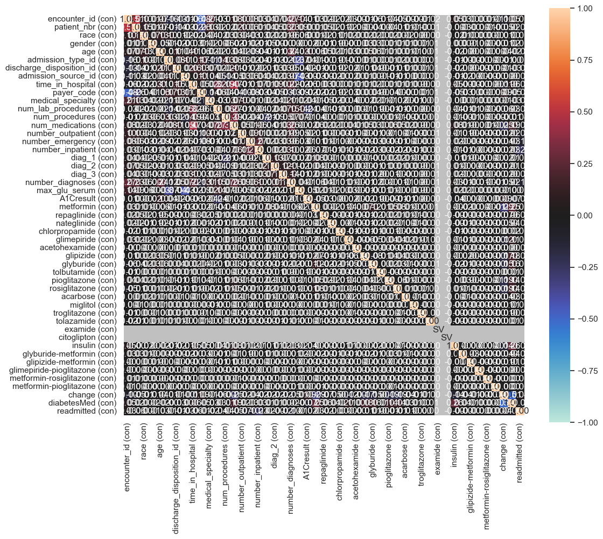

Análisis Exploratorio de Datos#
1. Limpieza#
1.1. Importar Datos y librerías#
from sklearnex import patch_sklearn
patch_sklearn()
import pandas as pd
import matplotlib.pyplot as plt
import seaborn as sns
from sklearn.preprocessing import OrdinalEncoder
import numpy as np
import math
from sklearn.pipeline import Pipeline
from sklearn.model_selection import train_test_split
from sklearn.preprocessing import StandardScaler
from sklearn.linear_model import LogisticRegression
from sklearn.metrics import classification_report, confusion_matrix, accuracy_score
from sklearn.model_selection import train_test_split, StratifiedKFold, GridSearchCV
from sklearn.neighbors import KNeighborsClassifier
from sklearn.preprocessing import OneHotEncoder
from sklearn.compose import ColumnTransformer
Extension for Scikit-learn* enabled (https://github.com/uxlfoundation/scikit-learn-intelex)
# Configuración estética opcional
sns.set(style="whitegrid")
plt.rcParams["figure.figsize"] = (10, 6)
# Cargar los datos
df = pd.read_csv("diabetic_data.csv")
1.2 Análisis#
En esta sección analizamos el dataset, su contenido, la presencia de valores faltantes y su tratamiento para preparar los datos para el análisis posterior.
1.2.1 Observación de los Datos#
df.info()
<class 'pandas.core.frame.DataFrame'>
RangeIndex: 101766 entries, 0 to 101765
Data columns (total 50 columns):
# Column Non-Null Count Dtype
--- ------ -------------- -----
0 encounter_id 101766 non-null int64
1 patient_nbr 101766 non-null int64
2 race 101766 non-null object
3 gender 101766 non-null object
4 age 101766 non-null object
5 weight 101766 non-null object
6 admission_type_id 101766 non-null int64
7 discharge_disposition_id 101766 non-null int64
8 admission_source_id 101766 non-null int64
9 time_in_hospital 101766 non-null int64
10 payer_code 101766 non-null object
11 medical_specialty 101766 non-null object
12 num_lab_procedures 101766 non-null int64
13 num_procedures 101766 non-null int64
14 num_medications 101766 non-null int64
15 number_outpatient 101766 non-null int64
16 number_emergency 101766 non-null int64
17 number_inpatient 101766 non-null int64
18 diag_1 101766 non-null object
19 diag_2 101766 non-null object
20 diag_3 101766 non-null object
21 number_diagnoses 101766 non-null int64
22 max_glu_serum 5346 non-null object
23 A1Cresult 17018 non-null object
24 metformin 101766 non-null object
25 repaglinide 101766 non-null object
26 nateglinide 101766 non-null object
27 chlorpropamide 101766 non-null object
28 glimepiride 101766 non-null object
29 acetohexamide 101766 non-null object
30 glipizide 101766 non-null object
31 glyburide 101766 non-null object
32 tolbutamide 101766 non-null object
33 pioglitazone 101766 non-null object
34 rosiglitazone 101766 non-null object
35 acarbose 101766 non-null object
36 miglitol 101766 non-null object
37 troglitazone 101766 non-null object
38 tolazamide 101766 non-null object
39 examide 101766 non-null object
40 citoglipton 101766 non-null object
41 insulin 101766 non-null object
42 glyburide-metformin 101766 non-null object
43 glipizide-metformin 101766 non-null object
44 glimepiride-pioglitazone 101766 non-null object
45 metformin-rosiglitazone 101766 non-null object
46 metformin-pioglitazone 101766 non-null object
47 change 101766 non-null object
48 diabetesMed 101766 non-null object
49 readmitted 101766 non-null object
dtypes: int64(13), object(37)
memory usage: 38.8+ MB
# Mostrar todas las columnas al imprimir
pd.set_option('display.max_columns', None)
# Mostrar las primeras filas del DataFrame
df.head()
| encounter_id | patient_nbr | race | gender | age | weight | admission_type_id | discharge_disposition_id | admission_source_id | time_in_hospital | payer_code | medical_specialty | num_lab_procedures | num_procedures | num_medications | number_outpatient | number_emergency | number_inpatient | diag_1 | diag_2 | diag_3 | number_diagnoses | max_glu_serum | A1Cresult | metformin | repaglinide | nateglinide | chlorpropamide | glimepiride | acetohexamide | glipizide | glyburide | tolbutamide | pioglitazone | rosiglitazone | acarbose | miglitol | troglitazone | tolazamide | examide | citoglipton | insulin | glyburide-metformin | glipizide-metformin | glimepiride-pioglitazone | metformin-rosiglitazone | metformin-pioglitazone | change | diabetesMed | readmitted | |
|---|---|---|---|---|---|---|---|---|---|---|---|---|---|---|---|---|---|---|---|---|---|---|---|---|---|---|---|---|---|---|---|---|---|---|---|---|---|---|---|---|---|---|---|---|---|---|---|---|---|---|
| 0 | 2278392 | 8222157 | Caucasian | Female | [0-10) | ? | 6 | 25 | 1 | 1 | ? | Pediatrics-Endocrinology | 41 | 0 | 1 | 0 | 0 | 0 | 250.83 | ? | ? | 1 | NaN | NaN | No | No | No | No | No | No | No | No | No | No | No | No | No | No | No | No | No | No | No | No | No | No | No | No | No | NO |
| 1 | 149190 | 55629189 | Caucasian | Female | [10-20) | ? | 1 | 1 | 7 | 3 | ? | ? | 59 | 0 | 18 | 0 | 0 | 0 | 276 | 250.01 | 255 | 9 | NaN | NaN | No | No | No | No | No | No | No | No | No | No | No | No | No | No | No | No | No | Up | No | No | No | No | No | Ch | Yes | >30 |
| 2 | 64410 | 86047875 | AfricanAmerican | Female | [20-30) | ? | 1 | 1 | 7 | 2 | ? | ? | 11 | 5 | 13 | 2 | 0 | 1 | 648 | 250 | V27 | 6 | NaN | NaN | No | No | No | No | No | No | Steady | No | No | No | No | No | No | No | No | No | No | No | No | No | No | No | No | No | Yes | NO |
| 3 | 500364 | 82442376 | Caucasian | Male | [30-40) | ? | 1 | 1 | 7 | 2 | ? | ? | 44 | 1 | 16 | 0 | 0 | 0 | 8 | 250.43 | 403 | 7 | NaN | NaN | No | No | No | No | No | No | No | No | No | No | No | No | No | No | No | No | No | Up | No | No | No | No | No | Ch | Yes | NO |
| 4 | 16680 | 42519267 | Caucasian | Male | [40-50) | ? | 1 | 1 | 7 | 1 | ? | ? | 51 | 0 | 8 | 0 | 0 | 0 | 197 | 157 | 250 | 5 | NaN | NaN | No | No | No | No | No | No | Steady | No | No | No | No | No | No | No | No | No | No | Steady | No | No | No | No | No | Ch | Yes | NO |
Al observar los datos, nos llamó la atención el caso particular de tres variables: diag_1, diag_2 y diag_3. Estas variables contienen códigos de diagnóstico en formato ICD-9, los cuales, en su forma actual —principalmente números enteros— resultan poco interpretables para un análisis clínico o estadístico directo.
No obstante, al revisar el artículo de investigación “Impact of HbA1c Measurement on Hospital Readmission Rates: Analysis of 70,000 Clinical Database Patient Records”, identificamos una propuesta para agrupar estos códigos en categorías médicas más comprensibles (como enfermedades circulatorias, respiratorias, digestivas, etc.).
Por consiguiente, decidimos llevar a cabo esta transformación, convirtiendo los códigos ICD-9 en categorías médicas más claras y relevantes para nuestro análisis de reingresos hospitalarios.
def map_icd9(code):
if pd.isnull(code):
return 'Desconocido'
if code == '?':
return '?' # mantener el signo de interrogación tal cual
try:
code_str = str(code)
# Casos especiales tipo string
if code_str.startswith('V') or code_str.startswith('E'):
return 'Causas externas'
code_float = float(code_str)
if (390 <= code_float <= 459) or (code_float == 785):
return 'Circulatorio'
elif (460 <= code_float <= 519) or (code_float == 786):
return 'Respiratorio'
elif (520 <= code_float <= 579) or (code_float == 787):
return 'Digestivo'
elif 250 <= code_float < 251: # solo el 250, incluye decimales
return 'Diabetes'
elif 800 <= code_float <= 999:
return 'Herida'
elif 710 <= code_float <= 739:
return 'Musculoesquelético'
elif (580 <= code_float <= 629) or (code_float == 788):
return 'Genitourinario'
elif 140 <= code_float <= 239:
return 'Neoplasmas'
elif (780 <= code_float <= 784) or (790 <= code_float <= 799):
return 'Síntomas mal definidos'
elif (240 <= code_float <= 279) and not (250 <= code_float < 251):
return 'Endocrino y metabolismo (sin diabetes)'
elif (680 <= code_float <= 709) or (code_float == 782):
return 'Piel y tejido subcutáneo'
elif 1 <= code_float <= 139:
return 'Infecciosas y parasitarias'
elif 290 <= code_float <= 319:
return 'Trastornos mentales'
elif 280 <= code_float <= 289:
return 'Sangre y órganos hematopoyéticos'
elif 320 <= code_float <= 359:
return 'Sistema nervioso'
elif 630 <= code_float <= 679:
return 'Embarazo y puerperio'
elif 360 <= code_float <= 389:
return 'Órganos de los sentidos'
elif 740 <= code_float <= 759:
return 'Anomalías congénitas'
else:
return 'Otro'
except:
return 'Otro'
# Transformación de las variables de diagnostico
df['diag_1'] = df['diag_1'].apply(map_icd9)
df['diag_2'] = df['diag_2'].apply(map_icd9)
df['diag_3'] = df['diag_3'].apply(map_icd9)
df.head()
| encounter_id | patient_nbr | race | gender | age | weight | admission_type_id | discharge_disposition_id | admission_source_id | time_in_hospital | payer_code | medical_specialty | num_lab_procedures | num_procedures | num_medications | number_outpatient | number_emergency | number_inpatient | diag_1 | diag_2 | diag_3 | number_diagnoses | max_glu_serum | A1Cresult | metformin | repaglinide | nateglinide | chlorpropamide | glimepiride | acetohexamide | glipizide | glyburide | tolbutamide | pioglitazone | rosiglitazone | acarbose | miglitol | troglitazone | tolazamide | examide | citoglipton | insulin | glyburide-metformin | glipizide-metformin | glimepiride-pioglitazone | metformin-rosiglitazone | metformin-pioglitazone | change | diabetesMed | readmitted | |
|---|---|---|---|---|---|---|---|---|---|---|---|---|---|---|---|---|---|---|---|---|---|---|---|---|---|---|---|---|---|---|---|---|---|---|---|---|---|---|---|---|---|---|---|---|---|---|---|---|---|---|
| 0 | 2278392 | 8222157 | Caucasian | Female | [0-10) | ? | 6 | 25 | 1 | 1 | ? | Pediatrics-Endocrinology | 41 | 0 | 1 | 0 | 0 | 0 | Diabetes | ? | ? | 1 | NaN | NaN | No | No | No | No | No | No | No | No | No | No | No | No | No | No | No | No | No | No | No | No | No | No | No | No | No | NO |
| 1 | 149190 | 55629189 | Caucasian | Female | [10-20) | ? | 1 | 1 | 7 | 3 | ? | ? | 59 | 0 | 18 | 0 | 0 | 0 | Endocrino y metabolismo (sin diabetes) | Diabetes | Endocrino y metabolismo (sin diabetes) | 9 | NaN | NaN | No | No | No | No | No | No | No | No | No | No | No | No | No | No | No | No | No | Up | No | No | No | No | No | Ch | Yes | >30 |
| 2 | 64410 | 86047875 | AfricanAmerican | Female | [20-30) | ? | 1 | 1 | 7 | 2 | ? | ? | 11 | 5 | 13 | 2 | 0 | 1 | Embarazo y puerperio | Diabetes | Causas externas | 6 | NaN | NaN | No | No | No | No | No | No | Steady | No | No | No | No | No | No | No | No | No | No | No | No | No | No | No | No | No | Yes | NO |
| 3 | 500364 | 82442376 | Caucasian | Male | [30-40) | ? | 1 | 1 | 7 | 2 | ? | ? | 44 | 1 | 16 | 0 | 0 | 0 | Infecciosas y parasitarias | Diabetes | Circulatorio | 7 | NaN | NaN | No | No | No | No | No | No | No | No | No | No | No | No | No | No | No | No | No | Up | No | No | No | No | No | Ch | Yes | NO |
| 4 | 16680 | 42519267 | Caucasian | Male | [40-50) | ? | 1 | 1 | 7 | 1 | ? | ? | 51 | 0 | 8 | 0 | 0 | 0 | Neoplasmas | Neoplasmas | Diabetes | 5 | NaN | NaN | No | No | No | No | No | No | Steady | No | No | No | No | No | No | No | No | No | No | Steady | No | No | No | No | No | Ch | Yes | NO |
# Estilo general
sns.set(style="whitegrid")
plt.figure(figsize=(18, 5))
# Gráfico para diag_1
plt.subplot(1, 3, 1)
sns.countplot(y='diag_1', data=df, order=df['diag_1'].value_counts().index, palette='viridis')
plt.title('Distribución de grupos diagnósticos - diag_1')
plt.xlabel('Frecuencia')
plt.ylabel('Grupo')
# Gráfico para diag_2
plt.subplot(1, 3, 2)
sns.countplot(y='diag_2', data=df, order=df['diag_2'].value_counts().index, palette='magma')
plt.title('Distribución de grupos diagnósticos - diag_2')
plt.xlabel('Frecuencia')
plt.ylabel('')
# Gráfico para diag_3
plt.subplot(1, 3, 3)
sns.countplot(y='diag_3', data=df, order=df['diag_3'].value_counts().index, palette='cividis')
plt.title('Distribución de grupos diagnósticos - diag_3')
plt.xlabel('Frecuencia')
plt.ylabel('')
plt.tight_layout()
plt.show()
C:\Users\Usuario\AppData\Local\Temp\ipykernel_2308\3536925753.py:7: FutureWarning:
Passing `palette` without assigning `hue` is deprecated and will be removed in v0.14.0. Assign the `y` variable to `hue` and set `legend=False` for the same effect.
sns.countplot(y='diag_1', data=df, order=df['diag_1'].value_counts().index, palette='viridis')
C:\Users\Usuario\AppData\Local\Temp\ipykernel_2308\3536925753.py:14: FutureWarning:
Passing `palette` without assigning `hue` is deprecated and will be removed in v0.14.0. Assign the `y` variable to `hue` and set `legend=False` for the same effect.
sns.countplot(y='diag_2', data=df, order=df['diag_2'].value_counts().index, palette='magma')
C:\Users\Usuario\AppData\Local\Temp\ipykernel_2308\3536925753.py:21: FutureWarning:
Passing `palette` without assigning `hue` is deprecated and will be removed in v0.14.0. Assign the `y` variable to `hue` and set `legend=False` for the same effect.
sns.countplot(y='diag_3', data=df, order=df['diag_3'].value_counts().index, palette='cividis')

1.2.2 Análisis de Valores Faltantes#
En primera instancia, recurrimos a hacer un mapa de calor y una tabla de valores faltantes para una primera inspección.
plt.figure(figsize=(12, 6))
sns.heatmap(df.isnull(), cbar=False, yticklabels=False, cmap='plasma')
plt.title("Mapa de calor de valores faltantes", fontsize=14)
plt.show()

faltantes = df.isnull().sum()
porcentaje = (faltantes / len(df)) * 100
tabla_faltantes = pd.DataFrame({
'Valores faltantes': faltantes,
'Porcentaje (%)': porcentaje
})
# Mostrar solo columnas con NA
tabla_faltantes = tabla_faltantes[tabla_faltantes['Valores faltantes'] > 0]
tabla_faltantes.sort_values('Porcentaje (%)', ascending=False)
| Valores faltantes | Porcentaje (%) | |
|---|---|---|
| max_glu_serum | 96420 | 94.746772 |
| A1Cresult | 84748 | 83.277322 |
En este análisis identificamos que solo dos variables, max_glu_serum y A1Cresult, presentaban valores ausentes según Python, con un 94.74% y 83.27% de valores faltantes respectivamente. A primera vista, esta alta proporción de NaN sugeriría que estas variables deberían eliminarse del análisis.
Sin embargo, al examinar más a fondo el contexto del dataset, notamos que ambas variables son categóricas y contienen una categoría denominada “None”, la cual fue erróneamente interpretada por Python como un valor nulo. (vealo en la siguiente tabla)
Variable |
Tipo |
Descripción |
|---|---|---|
|
Categórica |
Resultado máximo de glucosa en suero. Valores: >200, >300, normal, none. |
|
Categórica |
Resultado de hemoglobina A1C. Valores: >8, >7, normal, none. |
Adicionalmente, descubrimos que en este conjunto de datos los valores realmente faltantes se representan mediante el símbolo “?”, por lo que no son detectados automáticamente como nulos al cargar el archivo. (Vealo en la siguiente Imagen)

El paso a seguir es reemplazar manualmente estos símbolos para permitir un tratamiento adecuado de los valores ausentes en etapas posteriores del análisis.
#Se reemplaza los "na" que en realidad son una categoria por el string none
df['max_glu_serum'] = df['max_glu_serum'].fillna('none')
df['A1Cresult'] =df['A1Cresult'].fillna('none')
# Reemplazar '?' por NaN
df= df.replace('?', np.nan)
faltantes = df.isnull().sum()
porcentaje = (faltantes / len(df)) * 100
plt.figure(figsize=(12, 6))
sns.heatmap(df.isnull(), cbar=False, yticklabels=False, cmap='plasma')
plt.title("Mapa de calor de valores faltantes", fontsize=14)
plt.show()

Es evidente que, tras reemplazar el signo “?” por valores nulos (NaN), se revelan los verdaderos datos faltantes en el conjunto. Asimismo, se puede observar que las variables max_glu_serum y A1Cresult ya no presentan valores ausentes, ya que la categoría “none” fue correctamente interpretada como una respuesta válida.
El siguiente paso consiste en evaluar el tratamiento adecuado para los valores faltantes restantes, considerando tanto la naturaleza de cada variable como el porcentaje de datos ausentes que presenta en el conjunto.
tabla_faltantes = pd.DataFrame({
'Valores faltantes': faltantes,
'Porcentaje (%)': porcentaje
})
# Mostrar solo columnas con NA
tabla_faltantes = tabla_faltantes[tabla_faltantes['Valores faltantes'] > 0]
tabla_faltantes.sort_values('Porcentaje (%)', ascending=False)
| Valores faltantes | Porcentaje (%) | |
|---|---|---|
| weight | 98569 | 96.858479 |
| medical_specialty | 49949 | 49.082208 |
| payer_code | 40256 | 39.557416 |
| race | 2273 | 2.233555 |
| diag_3 | 1423 | 1.398306 |
| diag_2 | 358 | 0.351787 |
| diag_1 | 21 | 0.020636 |
Ahora observamos que la variable weight presenta un 96.86% de datos faltantes. Dado que este porcentaje es extremadamente alto, cualquier técnica de imputación resultaría ineficiente y podría introducir sesgos significativos en el análisis, comprometiendo la validez de los resultados. Por esta razón, se decide excluir esta variable del análisis.
En el caso de las variables medical_specialty y payer_code, los porcentajes de valores faltantes son de 49.08% y 39.55%, respectivamente. Estos porcentajes no son lo suficientemente bajos como para aplicar técnicas de imputación sin riesgo de introducir sesgos, pero tampoco tan altos como para justificar directamente su eliminación del análisis. Por tanto, recurriremos a agrupar estos NaN es una nueva categoria llamada “Unknown”.
Las variables race, diag_1, diag_2 y diag_3 tienen un porcentaje de NaN del 2.23%, 1.29%, 0.35% y 0.02 respectivamente. Al ser porcentajes pequeñoS recurriremos a hacer imputación por la moda para los tres casos.
pd.set_option('display.max_columns', None)
df.head()
| encounter_id | patient_nbr | race | gender | age | weight | admission_type_id | discharge_disposition_id | admission_source_id | time_in_hospital | payer_code | medical_specialty | num_lab_procedures | num_procedures | num_medications | number_outpatient | number_emergency | number_inpatient | diag_1 | diag_2 | diag_3 | number_diagnoses | max_glu_serum | A1Cresult | metformin | repaglinide | nateglinide | chlorpropamide | glimepiride | acetohexamide | glipizide | glyburide | tolbutamide | pioglitazone | rosiglitazone | acarbose | miglitol | troglitazone | tolazamide | examide | citoglipton | insulin | glyburide-metformin | glipizide-metformin | glimepiride-pioglitazone | metformin-rosiglitazone | metformin-pioglitazone | change | diabetesMed | readmitted | |
|---|---|---|---|---|---|---|---|---|---|---|---|---|---|---|---|---|---|---|---|---|---|---|---|---|---|---|---|---|---|---|---|---|---|---|---|---|---|---|---|---|---|---|---|---|---|---|---|---|---|---|
| 0 | 2278392 | 8222157 | Caucasian | Female | [0-10) | NaN | 6 | 25 | 1 | 1 | NaN | Pediatrics-Endocrinology | 41 | 0 | 1 | 0 | 0 | 0 | Diabetes | NaN | NaN | 1 | none | none | No | No | No | No | No | No | No | No | No | No | No | No | No | No | No | No | No | No | No | No | No | No | No | No | No | NO |
| 1 | 149190 | 55629189 | Caucasian | Female | [10-20) | NaN | 1 | 1 | 7 | 3 | NaN | NaN | 59 | 0 | 18 | 0 | 0 | 0 | Endocrino y metabolismo (sin diabetes) | Diabetes | Endocrino y metabolismo (sin diabetes) | 9 | none | none | No | No | No | No | No | No | No | No | No | No | No | No | No | No | No | No | No | Up | No | No | No | No | No | Ch | Yes | >30 |
| 2 | 64410 | 86047875 | AfricanAmerican | Female | [20-30) | NaN | 1 | 1 | 7 | 2 | NaN | NaN | 11 | 5 | 13 | 2 | 0 | 1 | Embarazo y puerperio | Diabetes | Causas externas | 6 | none | none | No | No | No | No | No | No | Steady | No | No | No | No | No | No | No | No | No | No | No | No | No | No | No | No | No | Yes | NO |
| 3 | 500364 | 82442376 | Caucasian | Male | [30-40) | NaN | 1 | 1 | 7 | 2 | NaN | NaN | 44 | 1 | 16 | 0 | 0 | 0 | Infecciosas y parasitarias | Diabetes | Circulatorio | 7 | none | none | No | No | No | No | No | No | No | No | No | No | No | No | No | No | No | No | No | Up | No | No | No | No | No | Ch | Yes | NO |
| 4 | 16680 | 42519267 | Caucasian | Male | [40-50) | NaN | 1 | 1 | 7 | 1 | NaN | NaN | 51 | 0 | 8 | 0 | 0 | 0 | Neoplasmas | Neoplasmas | Diabetes | 5 | none | none | No | No | No | No | No | No | Steady | No | No | No | No | No | No | No | No | No | No | Steady | No | No | No | No | No | Ch | Yes | NO |
df.drop(columns=['weight'], inplace=True) #Se elimina
#remplazamos los na por categorias dado que son porcentajes grandes o irrelevantes para imputar
df['medical_specialty'] = df['medical_specialty'].fillna('Unknown')
df['payer_code'] = df['payer_code'].fillna('Unknown')
#Imputación por la moda
var_imputar = ['race', 'diag_1', 'diag_2', 'diag_3']
for name_var in var_imputar:
moda = df[name_var].mode()[0]
df[name_var] = df[name_var].fillna(moda)
df.head()
| encounter_id | patient_nbr | race | gender | age | admission_type_id | discharge_disposition_id | admission_source_id | time_in_hospital | payer_code | medical_specialty | num_lab_procedures | num_procedures | num_medications | number_outpatient | number_emergency | number_inpatient | diag_1 | diag_2 | diag_3 | number_diagnoses | max_glu_serum | A1Cresult | metformin | repaglinide | nateglinide | chlorpropamide | glimepiride | acetohexamide | glipizide | glyburide | tolbutamide | pioglitazone | rosiglitazone | acarbose | miglitol | troglitazone | tolazamide | examide | citoglipton | insulin | glyburide-metformin | glipizide-metformin | glimepiride-pioglitazone | metformin-rosiglitazone | metformin-pioglitazone | change | diabetesMed | readmitted | |
|---|---|---|---|---|---|---|---|---|---|---|---|---|---|---|---|---|---|---|---|---|---|---|---|---|---|---|---|---|---|---|---|---|---|---|---|---|---|---|---|---|---|---|---|---|---|---|---|---|---|
| 0 | 2278392 | 8222157 | Caucasian | Female | [0-10) | 6 | 25 | 1 | 1 | Unknown | Pediatrics-Endocrinology | 41 | 0 | 1 | 0 | 0 | 0 | Diabetes | Circulatorio | Circulatorio | 1 | none | none | No | No | No | No | No | No | No | No | No | No | No | No | No | No | No | No | No | No | No | No | No | No | No | No | No | NO |
| 1 | 149190 | 55629189 | Caucasian | Female | [10-20) | 1 | 1 | 7 | 3 | Unknown | Unknown | 59 | 0 | 18 | 0 | 0 | 0 | Endocrino y metabolismo (sin diabetes) | Diabetes | Endocrino y metabolismo (sin diabetes) | 9 | none | none | No | No | No | No | No | No | No | No | No | No | No | No | No | No | No | No | No | Up | No | No | No | No | No | Ch | Yes | >30 |
| 2 | 64410 | 86047875 | AfricanAmerican | Female | [20-30) | 1 | 1 | 7 | 2 | Unknown | Unknown | 11 | 5 | 13 | 2 | 0 | 1 | Embarazo y puerperio | Diabetes | Causas externas | 6 | none | none | No | No | No | No | No | No | Steady | No | No | No | No | No | No | No | No | No | No | No | No | No | No | No | No | No | Yes | NO |
| 3 | 500364 | 82442376 | Caucasian | Male | [30-40) | 1 | 1 | 7 | 2 | Unknown | Unknown | 44 | 1 | 16 | 0 | 0 | 0 | Infecciosas y parasitarias | Diabetes | Circulatorio | 7 | none | none | No | No | No | No | No | No | No | No | No | No | No | No | No | No | No | No | No | Up | No | No | No | No | No | Ch | Yes | NO |
| 4 | 16680 | 42519267 | Caucasian | Male | [40-50) | 1 | 1 | 7 | 1 | Unknown | Unknown | 51 | 0 | 8 | 0 | 0 | 0 | Neoplasmas | Neoplasmas | Diabetes | 5 | none | none | No | No | No | No | No | No | Steady | No | No | No | No | No | No | No | No | No | No | Steady | No | No | No | No | No | Ch | Yes | NO |
1.2.3 Codificar las variables categóricas#
En este dataset nos encontramos con una gran proporción de variables categóricas, las cuales debemos codificar para que puedan ser utilizadas posteriormente en un modelo.
from sklearn.preprocessing import OrdinalEncoder
cat_cols = df.select_dtypes(include='object').columns
encoder = OrdinalEncoder(handle_unknown='use_encoded_value', unknown_value=-1, encoded_missing_value=np.nan)
df[cat_cols] = encoder.fit_transform(df[cat_cols])
df.head()
| encounter_id | patient_nbr | race | gender | age | admission_type_id | discharge_disposition_id | admission_source_id | time_in_hospital | payer_code | medical_specialty | num_lab_procedures | num_procedures | num_medications | number_outpatient | number_emergency | number_inpatient | diag_1 | diag_2 | diag_3 | number_diagnoses | max_glu_serum | A1Cresult | metformin | repaglinide | nateglinide | chlorpropamide | glimepiride | acetohexamide | glipizide | glyburide | tolbutamide | pioglitazone | rosiglitazone | acarbose | miglitol | troglitazone | tolazamide | examide | citoglipton | insulin | glyburide-metformin | glipizide-metformin | glimepiride-pioglitazone | metformin-rosiglitazone | metformin-pioglitazone | change | diabetesMed | readmitted | |
|---|---|---|---|---|---|---|---|---|---|---|---|---|---|---|---|---|---|---|---|---|---|---|---|---|---|---|---|---|---|---|---|---|---|---|---|---|---|---|---|---|---|---|---|---|---|---|---|---|---|
| 0 | 2278392 | 8222157 | 2.0 | 0.0 | 0.0 | 6 | 25 | 1 | 1 | 16.0 | 37.0 | 41 | 0 | 1 | 0 | 0 | 0 | 3.0 | 2.0 | 2.0 | 1 | 3.0 | 3.0 | 1.0 | 1.0 | 1.0 | 1.0 | 1.0 | 0.0 | 1.0 | 1.0 | 0.0 | 1.0 | 1.0 | 1.0 | 1.0 | 0.0 | 0.0 | 0.0 | 0.0 | 1.0 | 1.0 | 0.0 | 0.0 | 0.0 | 0.0 | 1.0 | 0.0 | 2.0 |
| 1 | 149190 | 55629189 | 2.0 | 0.0 | 1.0 | 1 | 1 | 7 | 3 | 16.0 | 71.0 | 59 | 0 | 18 | 0 | 0 | 0 | 6.0 | 3.0 | 6.0 | 9 | 3.0 | 3.0 | 1.0 | 1.0 | 1.0 | 1.0 | 1.0 | 0.0 | 1.0 | 1.0 | 0.0 | 1.0 | 1.0 | 1.0 | 1.0 | 0.0 | 0.0 | 0.0 | 0.0 | 3.0 | 1.0 | 0.0 | 0.0 | 0.0 | 0.0 | 0.0 | 1.0 | 1.0 |
| 2 | 64410 | 86047875 | 0.0 | 0.0 | 2.0 | 1 | 1 | 7 | 2 | 16.0 | 71.0 | 11 | 5 | 13 | 2 | 0 | 1 | 5.0 | 3.0 | 1.0 | 6 | 3.0 | 3.0 | 1.0 | 1.0 | 1.0 | 1.0 | 1.0 | 0.0 | 2.0 | 1.0 | 0.0 | 1.0 | 1.0 | 1.0 | 1.0 | 0.0 | 0.0 | 0.0 | 0.0 | 1.0 | 1.0 | 0.0 | 0.0 | 0.0 | 0.0 | 1.0 | 1.0 | 2.0 |
| 3 | 500364 | 82442376 | 2.0 | 1.0 | 3.0 | 1 | 1 | 7 | 2 | 16.0 | 71.0 | 44 | 1 | 16 | 0 | 0 | 0 | 9.0 | 3.0 | 2.0 | 7 | 3.0 | 3.0 | 1.0 | 1.0 | 1.0 | 1.0 | 1.0 | 0.0 | 1.0 | 1.0 | 0.0 | 1.0 | 1.0 | 1.0 | 1.0 | 0.0 | 0.0 | 0.0 | 0.0 | 3.0 | 1.0 | 0.0 | 0.0 | 0.0 | 0.0 | 0.0 | 1.0 | 2.0 |
| 4 | 16680 | 42519267 | 2.0 | 1.0 | 4.0 | 1 | 1 | 7 | 1 | 16.0 | 71.0 | 51 | 0 | 8 | 0 | 0 | 0 | 11.0 | 11.0 | 3.0 | 5 | 3.0 | 3.0 | 1.0 | 1.0 | 1.0 | 1.0 | 1.0 | 0.0 | 2.0 | 1.0 | 0.0 | 1.0 | 1.0 | 1.0 | 1.0 | 0.0 | 0.0 | 0.0 | 0.0 | 2.0 | 1.0 | 0.0 | 0.0 | 0.0 | 0.0 | 0.0 | 1.0 | 2.0 |
La codificación se completó correctamente, y en el siguiente fragmento de código se podrá observar qué número fue asignado a cada categoría mediante la codificación.
#ver como se codificaron las variables
for col, cats in zip(cat_cols, encoder.categories_):
print(f"Columna: {col}")
for i, cat in enumerate(cats):
print(f" {cat} → {i}")
Columna: race
AfricanAmerican → 0
Asian → 1
Caucasian → 2
Hispanic → 3
Other → 4
Columna: gender
Female → 0
Male → 1
Unknown/Invalid → 2
Columna: age
[0-10) → 0
[10-20) → 1
[20-30) → 2
[30-40) → 3
[40-50) → 4
[50-60) → 5
[60-70) → 6
[70-80) → 7
[80-90) → 8
[90-100) → 9
Columna: payer_code
BC → 0
CH → 1
CM → 2
CP → 3
DM → 4
FR → 5
HM → 6
MC → 7
MD → 8
MP → 9
OG → 10
OT → 11
PO → 12
SI → 13
SP → 14
UN → 15
Unknown → 16
WC → 17
Columna: medical_specialty
AllergyandImmunology → 0
Anesthesiology → 1
Anesthesiology-Pediatric → 2
Cardiology → 3
Cardiology-Pediatric → 4
DCPTEAM → 5
Dentistry → 6
Dermatology → 7
Emergency/Trauma → 8
Endocrinology → 9
Endocrinology-Metabolism → 10
Family/GeneralPractice → 11
Gastroenterology → 12
Gynecology → 13
Hematology → 14
Hematology/Oncology → 15
Hospitalist → 16
InfectiousDiseases → 17
InternalMedicine → 18
Nephrology → 19
Neurology → 20
Neurophysiology → 21
Obsterics&Gynecology-GynecologicOnco → 22
Obstetrics → 23
ObstetricsandGynecology → 24
Oncology → 25
Ophthalmology → 26
Orthopedics → 27
Orthopedics-Reconstructive → 28
Osteopath → 29
Otolaryngology → 30
OutreachServices → 31
Pathology → 32
Pediatrics → 33
Pediatrics-AllergyandImmunology → 34
Pediatrics-CriticalCare → 35
Pediatrics-EmergencyMedicine → 36
Pediatrics-Endocrinology → 37
Pediatrics-Hematology-Oncology → 38
Pediatrics-InfectiousDiseases → 39
Pediatrics-Neurology → 40
Pediatrics-Pulmonology → 41
Perinatology → 42
PhysicalMedicineandRehabilitation → 43
PhysicianNotFound → 44
Podiatry → 45
Proctology → 46
Psychiatry → 47
Psychiatry-Addictive → 48
Psychiatry-Child/Adolescent → 49
Psychology → 50
Pulmonology → 51
Radiologist → 52
Radiology → 53
Resident → 54
Rheumatology → 55
Speech → 56
SportsMedicine → 57
Surgeon → 58
Surgery-Cardiovascular → 59
Surgery-Cardiovascular/Thoracic → 60
Surgery-Colon&Rectal → 61
Surgery-General → 62
Surgery-Maxillofacial → 63
Surgery-Neuro → 64
Surgery-Pediatric → 65
Surgery-Plastic → 66
Surgery-PlasticwithinHeadandNeck → 67
Surgery-Thoracic → 68
Surgery-Vascular → 69
SurgicalSpecialty → 70
Unknown → 71
Urology → 72
Columna: diag_1
Anomalías congénitas → 0
Causas externas → 1
Circulatorio → 2
Diabetes → 3
Digestivo → 4
Embarazo y puerperio → 5
Endocrino y metabolismo (sin diabetes) → 6
Genitourinario → 7
Herida → 8
Infecciosas y parasitarias → 9
Musculoesquelético → 10
Neoplasmas → 11
Otro → 12
Piel y tejido subcutáneo → 13
Respiratorio → 14
Sangre y órganos hematopoyéticos → 15
Sistema nervioso → 16
Síntomas mal definidos → 17
Trastornos mentales → 18
Órganos de los sentidos → 19
Columna: diag_2
Anomalías congénitas → 0
Causas externas → 1
Circulatorio → 2
Diabetes → 3
Digestivo → 4
Embarazo y puerperio → 5
Endocrino y metabolismo (sin diabetes) → 6
Genitourinario → 7
Herida → 8
Infecciosas y parasitarias → 9
Musculoesquelético → 10
Neoplasmas → 11
Otro → 12
Piel y tejido subcutáneo → 13
Respiratorio → 14
Sangre y órganos hematopoyéticos → 15
Sistema nervioso → 16
Síntomas mal definidos → 17
Trastornos mentales → 18
Órganos de los sentidos → 19
Columna: diag_3
Anomalías congénitas → 0
Causas externas → 1
Circulatorio → 2
Diabetes → 3
Digestivo → 4
Embarazo y puerperio → 5
Endocrino y metabolismo (sin diabetes) → 6
Genitourinario → 7
Herida → 8
Infecciosas y parasitarias → 9
Musculoesquelético → 10
Neoplasmas → 11
Otro → 12
Piel y tejido subcutáneo → 13
Respiratorio → 14
Sangre y órganos hematopoyéticos → 15
Sistema nervioso → 16
Síntomas mal definidos → 17
Trastornos mentales → 18
Órganos de los sentidos → 19
Columna: max_glu_serum
>200 → 0
>300 → 1
Norm → 2
none → 3
Columna: A1Cresult
>7 → 0
>8 → 1
Norm → 2
none → 3
Columna: metformin
Down → 0
No → 1
Steady → 2
Up → 3
Columna: repaglinide
Down → 0
No → 1
Steady → 2
Up → 3
Columna: nateglinide
Down → 0
No → 1
Steady → 2
Up → 3
Columna: chlorpropamide
Down → 0
No → 1
Steady → 2
Up → 3
Columna: glimepiride
Down → 0
No → 1
Steady → 2
Up → 3
Columna: acetohexamide
No → 0
Steady → 1
Columna: glipizide
Down → 0
No → 1
Steady → 2
Up → 3
Columna: glyburide
Down → 0
No → 1
Steady → 2
Up → 3
Columna: tolbutamide
No → 0
Steady → 1
Columna: pioglitazone
Down → 0
No → 1
Steady → 2
Up → 3
Columna: rosiglitazone
Down → 0
No → 1
Steady → 2
Up → 3
Columna: acarbose
Down → 0
No → 1
Steady → 2
Up → 3
Columna: miglitol
Down → 0
No → 1
Steady → 2
Up → 3
Columna: troglitazone
No → 0
Steady → 1
Columna: tolazamide
No → 0
Steady → 1
Up → 2
Columna: examide
No → 0
Columna: citoglipton
No → 0
Columna: insulin
Down → 0
No → 1
Steady → 2
Up → 3
Columna: glyburide-metformin
Down → 0
No → 1
Steady → 2
Up → 3
Columna: glipizide-metformin
No → 0
Steady → 1
Columna: glimepiride-pioglitazone
No → 0
Steady → 1
Columna: metformin-rosiglitazone
No → 0
Steady → 1
Columna: metformin-pioglitazone
No → 0
Steady → 1
Columna: change
Ch → 0
No → 1
Columna: diabetesMed
No → 0
Yes → 1
Columna: readmitted
<30 → 0
>30 → 1
NO → 2
categorical_vars = [
"race", "gender", "age", "admission_type_id", "discharge_disposition_id",
"admission_source_id", "payer_code", "medical_specialty", "max_glu_serum",
"A1Cresult", "metformin", "repaglinide", "nateglinide", "chlorpropamide",
"glimepiride", "acetohexamide", "glipizide", "glyburide", "tolbutamide",
"pioglitazone", "rosiglitazone", "acarbose", "miglitol", "troglitazone",
"tolazamide", "examide", "citoglipton", "insulin", "glyburide-metformin",
"glipizide-metformin", "glimepiride-pioglitazone", "metformin-rosiglitazone",
"metformin-pioglitazone", "change", "diabetesMed", "readmitted"
]
for col in categorical_vars:
df[col] = df[col].astype('category')
df[col].unique()
df[col].value_counts()
2. Análisis Descriptivo#
2.1 Variables Numéricas#
2.1.1. Resumen Estadístico#
columnas_numericas = ["time_in_hospital","num_lab_procedures","num_procedures", "num_medications",
"number_outpatient","number_emergency","number_inpatient","number_diagnoses"]
numericas = df[columnas_numericas]
print(numericas.describe().T)
count mean std min 25% 50% 75% \
time_in_hospital 101766.0 4.395987 2.985108 1.0 2.0 4.0 6.0
num_lab_procedures 101766.0 43.095641 19.674362 1.0 31.0 44.0 57.0
num_procedures 101766.0 1.339730 1.705807 0.0 0.0 1.0 2.0
num_medications 101766.0 16.021844 8.127566 1.0 10.0 15.0 20.0
number_outpatient 101766.0 0.369357 1.267265 0.0 0.0 0.0 0.0
number_emergency 101766.0 0.197836 0.930472 0.0 0.0 0.0 0.0
number_inpatient 101766.0 0.635566 1.262863 0.0 0.0 0.0 1.0
number_diagnoses 101766.0 7.422607 1.933600 1.0 6.0 8.0 9.0
max
time_in_hospital 14.0
num_lab_procedures 132.0
num_procedures 6.0
num_medications 81.0
number_outpatient 42.0
number_emergency 76.0
number_inpatient 21.0
number_diagnoses 16.0
En esta imagen se pueden observar 8 diagramas de barras correspondientes a cada variable numérica.
Tiempo en el Hospital (
time_in_hospital): La gráfica muestra una distribución claramente sesgada a la derecha. La mayoría de los pacientes permanecen en el hospital entre 2 y 5 días, siendo 4 días la duración más frecuente. A medida que aumenta el número de días, la frecuencia disminuye significativamente, lo que indica que solo una pequeña proporción de pacientes permanece más de 10 días hospitalizado.Numero de Procedimientos de Laboratorio (
num_lab_procedures): La distribución es ligeramente simétrica, con una concentración de valores entre 40 y 60 procedimientos, siendo alrededor de 50 la cantidad más frecuente. Aunque hay presencia de valores cercanos a cero, su frecuencia es considerablemente menor. Esta variable refleja una variabilidad moderada y una tendencia central bien definida.Número de Procedimientos Distintos(
num_procedures): Se observa una distribución marcadamente sesgada a la derecha, ya que la mayor parte de los pacientes recibió solo un procedimiento. La frecuencia disminuye conforme aumenta el número de procedimientos, lo que indica que pocos pacientes son sometidos a más de 3 o 4 procedimientos.Número de medicamentos (
num_medications): La gráfica indica que la mayoría de los pacientes recibió entre 10 y 20 medicamentos, siendo esta la moda. La distribución está ligeramente sesgada a la derecha, ya que existe un número reducido de pacientes a quienes se les administraron más de 40 medicamentos, aunque en menor proporción.Número de visitas ambulatorias (
number_outpatient): Esta variable muestra una distribución altamente sesgada a la derecha, con una fuerte concentración de pacientes que no registraron visitas ambulatorias (valor 0). Existen algunos valores atípicos con más de 20 visitas, pero representan una fracción muy pequeña de los casos.Número de visitas a urgencias (
number_emergency): Esta variable presenta una distribución fuertemente sesgada a la derecha, donde la gran mayoría de los pacientes no tuvo ninguna visita a urgencias. Las frecuencias caen drásticamente con el aumento en el número de visitas.Número de ingresos hospitalarios (
number_inpatient): Se evidencia también un sesgo a la derecha, ya que la mayoría de los pacientes no reportaron ingresos hospitalarios recientes. Solo una pequeña parte de la población muestra múltiples ingresos, y estos casos son poco frecuentes.Número de diagnósticos registrados (
number_diagnoses): Esta muestra una distribución sesgada a la izquierda, con una clara concentración de pacientes que tienen 10 diagnósticos registrados, lo que representa el valor más frecuente. Los valores más bajos son menos comunes, lo que indica que la mayoría de los pacientes presenta un número alto de diagnósticos documentados.
2.1.2. Gráficos#
#DIBUJAR HISTOGRAMAS
fig, axs = plt.subplots(4, 2, figsize=(12,12)) # 2 filas, 3 columnas
axs = axs.flatten() # Aplanamos para indexar como una lista
sns.histplot(df['time_in_hospital'], bins=range(1, 15),ax=axs[0], color='red', kde=False)
axs[0].set_title('Distribución de tiempo en hospital')
sns.histplot(df['num_lab_procedures'], bins=30,ax=axs[1], color='red', kde=False)
axs[1].set_title('Distribución # procedimientos de lab')
sns.histplot(df['num_procedures'], bins=range(1,7),ax=axs[2], color='red', kde=False)
axs[2].set_title('Distribución de # procedimientos')
sns.histplot(df['num_medications'], bins=30,ax=axs[3], color='red', kde=False)
axs[3].set_title('Distribución de # medicamentos administrados')
sns.countplot(x='number_outpatient', data=df, color='tomato', ax=axs[4])
axs[4].set_title('Distribución de # visitas ambulatorias')
axs[4].tick_params(axis='x', labelrotation=90)
sns.countplot(x='number_emergency', data=df, color='tomato', ax=axs[5])
axs[5].set_title('Distribución de # visitas urgencias')
axs[5].tick_params(axis='x', labelrotation=90)
sns.histplot(df['number_inpatient'], bins=30,ax=axs[6], color='red', kde=False)
axs[6].set_title('Distribución de # Ingresos Hospitalarios')
sns.histplot(df['number_diagnoses'], bins=range(1,15),ax=axs[7], color='red', kde=False)
axs[7].set_title('Distribución de # Diagnosticos Registrados')
plt.tight_layout()

En esta imagen se pueden observar 8 diagramas de barras correspondientes a cada variable numérica.
Tiempo en el Hospital (
time_in_hospital): La gráfica muestra una distribución claramente sesgada a la derecha. La mayoría de los pacientes permanecen en el hospital entre 2 y 5 días, siendo 4 días la duración más frecuente. A medida que aumenta el número de días, la frecuencia disminuye significativamente, lo que indica que solo una pequeña proporción de pacientes permanece más de 10 días hospitalizado.Numero de Procedimientos de Laboratorio (
num_lab_procedures): La distribución es ligeramente simétrica, con una concentración de valores entre 40 y 60 procedimientos, siendo alrededor de 50 la cantidad más frecuente. Aunque hay presencia de valores cercanos a cero, su frecuencia es considerablemente menor. Esta variable refleja una variabilidad moderada y una tendencia central bien definida.Número de Procedimientos Distintos(
num_procedures): Se observa una distribución marcadamente sesgada a la derecha, ya que la mayor parte de los pacientes recibió solo un procedimiento. La frecuencia disminuye conforme aumenta el número de procedimientos, lo que indica que pocos pacientes son sometidos a más de 3 o 4 procedimientos.Número de medicamentos (
num_medications): La gráfica indica que la mayoría de los pacientes recibió entre 10 y 20 medicamentos, siendo esta la moda. La distribución está ligeramente sesgada a la derecha, ya que existe un número reducido de pacientes a quienes se les administraron más de 40 medicamentos, aunque en menor proporción.Número de visitas ambulatorias (
number_outpatient): Esta variable muestra una distribución altamente sesgada a la derecha, con una fuerte concentración de pacientes que no registraron visitas ambulatorias (valor 0). Existen algunos valores atípicos con más de 20 visitas, pero representan una fracción muy pequeña de los casos.Número de visitas a urgencias (
number_emergency): Esta variable presenta una distribución fuertemente sesgada a la derecha, donde la gran mayoría de los pacientes no tuvo ninguna visita a urgencias. Las frecuencias caen drásticamente con el aumento en el número de visitas.Número de ingresos hospitalarios (
number_inpatient): Se evidencia también un sesgo a la derecha, ya que la mayoría de los pacientes no reportaron ingresos hospitalarios recientes. Solo una pequeña parte de la población muestra múltiples ingresos, y estos casos son poco frecuentes.Número de diagnósticos registrados (
number_diagnoses): Esta muestra una distribución sesgada a la izquierda, con una clara concentración de pacientes que tienen 10 diagnósticos registrados, lo que representa el valor más frecuente. Los valores más bajos son menos comunes, lo que indica que la mayoría de los pacientes presenta un número alto de diagnósticos documentados.
# Lista de variables
columnas_boxplot = ['time_in_hospital', 'num_lab_procedures', 'num_medications', 'number_diagnoses']
# Crear figura con 2x2 subgráficos
fig, axs = plt.subplots(2, 2, figsize=(14, 10))
axs = axs.flatten()
# Boxplots horizontales
for i, col in enumerate(columnas_boxplot):
sns.boxplot(x=df[col], ax=axs[i], color='green')
axs[i].set_title(f'Diagrama de caja: {col}', fontsize=12)
axs[i].set_xlabel(col)
plt.tight_layout()
plt.show()

En la imagen anterior, se puede observar 4 gráficas de boxplot correspondientes a las variables numéricas con datos más relevantes, pues las cuatro restantes concentran sus datos cercanos a cero.
Comenzando desde la parte superior izquierda, se observa el diagrama de caja correspondiente a la variable valor Tiempo en el Hospital (time_in_hospital). Este gráfico muestra que la mayoría de los pacientes estuvieron hospitalizados entre 2 y 6 días, lo que indica una concentración de valores en ese rango. La mediana se sitúa aproximadamente en 4 días. Se aprecia una distribución ligeramente sesgada a la derecha, ya que la mayor parte de los datos se encuentra en los valores más bajos. Además, se identifican dos valores atípicos en 13 y 14 días, lo que sugiere que unos pocos pacientes tuvieron estancias hospitalarias significativamente más prolongadas que el promedio.
Por otra parte, el diagrama de caja correspondiente a la variable Numero de Procedimientos de Laboratorio (num_lab_procedures) muestra que la mayoría de los pacientes se sometieron a entre 30 y 58 procedimientos de laboratorio, con una mediana cercana a los 45 procedimientos. Además, se observan múltiples valores atípicos por encima de los 97 procedimientos aproximadamente, lo que indica que algunos pacientes fueron sometidos a una cantidad inusualmente alta de exámenes.
Continuando con la parte inferior de la imagen, se encuentra la gráfica de la variable Número de medicamentos (num_medications). Esta indica que a la mayoría de los pacientes se les receta entre 10 a 20 medicamentos. La mediana se sitúa aproximadamente en 14 medicamentos. La distribución presenta un claro sesgo a la derecha, evidenciado por una gran cantidad de valores atípicos que superan los 35 medicamentos, alcanzando incluso cifras cercanas a 85. Esto sugiere que, aunque la mayoría de los pacientes recibió una cantidad moderada de medicamentos, existe un subconjunto que requirió tratamientos mucho más complejos, posiblemente debido a la presencia de múltiples complicaciones clínicas.
Por último, se presenta el diagrama de caja correspondiente a la variable Número de diagnósticos registrados (number_diagnoses). En este gráfico se observa una distribución relativamente simétrica, ya que la mediana se encuentra en una posición central, alrededor de los 8 diagnósticos por paciente. La mayoría de los datos se concentran entre aproximadamente 6 y 9 diagnósticos, lo que indica una baja dispersión en la parte central de la distribución. Se identifican cuatro valores atípicos: uno inferior cercano a 1 diagnóstico, y tres superiores, a partir de los 14 diagnósticos por paciente. Estos outliers indican que, aunque la mayoría de los pacientes recibe un número moderado de diagnósticos, existen casos excepcionales con cargas diagnósticas significativamente mayores o menores. En conjunto, este gráfico sugiere que la práctica médica tiende a generar entre 6 y 9 diagnósticos por paciente, aunque en ciertos casos particulares se observan registros considerablemente más extremos.
plt.figure(figsize=(10, 8))
sns.heatmap(df[columnas_numericas].corr(), annot=True, cmap='coolwarm', fmt=".2f")
plt.title('Matriz de correlación entre variables numéricas')
plt.show()

La matriz de correlación indica que no existen relaciones lineales fuertes entre las variables numéricas del conjunto de datos. La mayoría de los coeficientes de correlación se sitúan cerca de cero, lo que sugiere una asociación débil o inexistente entre las variables. La correlación más alta observada es de 0.47 entre time_in_hospital y num_medications, lo cual representa una relación moderada. También se evidencia una correlación leve de 0.39 entre num_procedures y num_medications. En general, los valores sugieren que las variables numéricas analizadas tienden a comportarse de manera independiente unas de otras.
2.2 Variables Categóricas#
2.2.1 Resumen#
# Crear lista con la info resumen de las variables categóricas
summary = []
for col in cat_cols:
total = len(df)
n_missing = df[col].isna().sum()
n_unique = df[col].nunique(dropna=True)
top = df[col].value_counts(dropna=True).idxmax()
freq = df[col].value_counts(dropna=True).max()
top_pct = (freq / total) * 100
summary.append({
'Variable': col,
'Categorías únicas': n_unique,
'Valor más frecuente': top,
'Frecuencia': freq,
'% del más frecuente': round(top_pct, 2),
'Nulos': n_missing
})
# Convertir a DataFrame para visualizar como tabla
summary_df = pd.DataFrame(summary)
# Ordenar si deseas
summary_df = summary_df.sort_values(by='Categorías únicas', ascending=False)
# Mostrar como tabla
summary_df.style.set_caption("Resumen de variables categóricas")
| Variable | Categorías únicas | Valor más frecuente | Frecuencia | % del más frecuente | Nulos | |
|---|---|---|---|---|---|---|
| 4 | medical_specialty | 73 | 71.000000 | 49949 | 49.080000 | 0 |
| 7 | diag_3 | 20 | 2.000000 | 31729 | 31.180000 | 0 |
| 5 | diag_1 | 20 | 2.000000 | 30458 | 29.930000 | 0 |
| 6 | diag_2 | 20 | 2.000000 | 32239 | 31.680000 | 0 |
| 3 | payer_code | 18 | 16.000000 | 40256 | 39.560000 | 0 |
| 2 | age | 10 | 7.000000 | 26068 | 25.620000 | 0 |
| 0 | race | 5 | 2.000000 | 78372 | 77.010000 | 0 |
| 28 | glyburide-metformin | 4 | 1.000000 | 101060 | 99.310000 | 0 |
| 8 | max_glu_serum | 4 | 3.000000 | 96420 | 94.750000 | 0 |
| 9 | A1Cresult | 4 | 3.000000 | 84748 | 83.280000 | 0 |
| 10 | metformin | 4 | 1.000000 | 81778 | 80.360000 | 0 |
| 11 | repaglinide | 4 | 1.000000 | 100227 | 98.490000 | 0 |
| 12 | nateglinide | 4 | 1.000000 | 101063 | 99.310000 | 0 |
| 13 | chlorpropamide | 4 | 1.000000 | 101680 | 99.920000 | 0 |
| 14 | glimepiride | 4 | 1.000000 | 96575 | 94.900000 | 0 |
| 16 | glipizide | 4 | 1.000000 | 89080 | 87.530000 | 0 |
| 19 | pioglitazone | 4 | 1.000000 | 94438 | 92.800000 | 0 |
| 17 | glyburide | 4 | 1.000000 | 91116 | 89.530000 | 0 |
| 21 | acarbose | 4 | 1.000000 | 101458 | 99.700000 | 0 |
| 20 | rosiglitazone | 4 | 1.000000 | 95401 | 93.750000 | 0 |
| 22 | miglitol | 4 | 1.000000 | 101728 | 99.960000 | 0 |
| 27 | insulin | 4 | 1.000000 | 47383 | 46.560000 | 0 |
| 1 | gender | 3 | 0.000000 | 54708 | 53.760000 | 0 |
| 24 | tolazamide | 3 | 0.000000 | 101727 | 99.960000 | 0 |
| 35 | readmitted | 3 | 2.000000 | 54864 | 53.910000 | 0 |
| 15 | acetohexamide | 2 | 0.000000 | 101765 | 100.000000 | 0 |
| 18 | tolbutamide | 2 | 0.000000 | 101743 | 99.980000 | 0 |
| 23 | troglitazone | 2 | 0.000000 | 101763 | 100.000000 | 0 |
| 31 | metformin-rosiglitazone | 2 | 0.000000 | 101764 | 100.000000 | 0 |
| 32 | metformin-pioglitazone | 2 | 0.000000 | 101765 | 100.000000 | 0 |
| 30 | glimepiride-pioglitazone | 2 | 0.000000 | 101765 | 100.000000 | 0 |
| 29 | glipizide-metformin | 2 | 0.000000 | 101753 | 99.990000 | 0 |
| 33 | change | 2 | 1.000000 | 54755 | 53.800000 | 0 |
| 34 | diabetesMed | 2 | 1.000000 | 78363 | 77.000000 | 0 |
| 26 | citoglipton | 1 | 0.000000 | 101766 | 100.000000 | 0 |
| 25 | examide | 1 | 0.000000 | 101766 | 100.000000 | 0 |
Interpretación
El resumen de las variables categóricas revela una alta proporción de valores dominantes en la mayoría de las variables. Por ejemplo, variables como glyburide-metformin, metformin-pioglitazone, glipizide-metformin, troglitazone, entre otras, presentan una distribución extremadamente desbalanceada, con un único valor que representa el 100% o casi el 100% de los casos, lo cual indica una falta de variabilidad y sugiere que podrían no aportar información útil al modelo o análisis. En contraste, variables como race, gender y readmitted muestran distribuciones más heterogéneas, con porcentajes más bajos del valor más frecuente, lo que las convierte en candidatas más informativas. Asimismo, algunas variables como medical_specialty y payer_code presentan una alta cantidad de categorías (73 y 18 respectivamente), lo cual podría introducir complejidad en el análisis y requerir estrategias como agrupación o codificación especial. Finalmente, ninguna de las variables categóricas contiene valores nulos, lo cual facilita su procesamiento posterior.
2.2.2. Gráficos#
cat_ident = [
'encounter_id', 'patient_nbr'
]
n_cols_ident = len(cat_ident)
cat_dem_ing = [
'race', 'gender', 'age', 'admission_type_id',
'discharge_disposition_id', 'admission_source_id',
'time_in_hospital'
]
n_cols_dem_ing = len(cat_dem_ing)
cat_prue_proced = [
'num_lab_procedures', 'num_procedures', 'num_medications',
'number_outpatient', 'number_emergency', 'number_inpatient',
'number_diagnoses'
]
n_cols_prue_proced = len(cat_prue_proced)
cat_diag_princ = [
'diag_1', 'diag_2', 'diag_3'
]
n_cols_diag_princ= len(cat_diag_princ)
cat_resultados_lab = [
'max_glu_serum', 'A1Cresult'
]
n_cols_resultados_lab = len(cat_resultados_lab)
cat_meds = [
'metformin', 'repaglinide', 'nateglinide', 'chlorpropamide',
'glimepiride', 'acetohexamide', 'glipizide', 'glyburide',
'tolbutamide', 'pioglitazone', 'rosiglitazone', 'acarbose',
'miglitol', 'troglitazone', 'tolazamide', 'examide',
'citoglipton', 'insulin', 'glyburide-metformin',
'glipizide-metformin', 'glimepiride-pioglitazone',
'metformin-rosiglitazone', 'metformin-pioglitazone'
]
n_cols_meds = len(cat_meds)
cat_control_tratamiento = [
'change', 'diabetesMed'
]
n_cols_control_tratamiento = len(cat_control_tratamiento)
cat_objetivo = [
'readmitted'
]
n_cols_objetivo = len(cat_objetivo)
def graficar_cat(n_cols, cat, figura_num=1, titulo_general=None, palette='Set2'):
import math
import matplotlib.pyplot as plt
import seaborn as sns
# Número de columnas fijas
cols = 3
rows = math.ceil(n_cols / cols)
# Crear figura
fig, axs = plt.subplots(rows, cols, figsize=(cols*6, rows*4))
axs = axs.flatten()
for i, col in enumerate(cat):
ax = axs[i]
n_cat = df[col].nunique()
if n_cat <= 10:
orden = df[col].value_counts().sort_values(ascending=False).index
sns.countplot(x=col, data=df, order=orden, ax=ax, palette=palette)
else:
top_10 = df[col].value_counts().nlargest(10)
categorias_ordenadas = top_10.index
frecuencias = top_10.values
sns.barplot(x=categorias_ordenadas, y=frecuencias, ax=ax, palette=palette)
ax.set_title(f'{col} ({n_cat} cat.)', fontsize=10)
ax.set_xlabel('')
ax.set_ylabel('Frecuencia')
ax.tick_params(axis='x', rotation=45)
# Eliminar ejes vacíos
for j in range(i + 1, len(axs)):
fig.delaxes(axs[j])
# Ajustar el espacio automáticamente
plt.tight_layout(rect=[0, 0.05, 1, 0.93]) # deja espacio para el título y el pie
# Título general centrado
if titulo_general:
fig.text(0.5, 0.96, titulo_general, ha='center', fontsize=16, weight='bold')
# Pie de figura centrado
fig.text(0.5, 0.02, f'Figura {figura_num}. {titulo_general}', ha='center', fontsize=12)
plt.show()
2.2.2.1. Distribución de Variables Demográficas y de Ingreso#
graficar_cat(n_cols_dem_ing, cat_dem_ing, figura_num=1,
titulo_general='\n Distribución de variables demográficas y de ingreso',
palette='Purples') # o 'Blues', 'coolwarm', etc.
C:\Users\Usuario\AppData\Local\Temp\ipykernel_2308\2055399804.py:20: FutureWarning:
Passing `palette` without assigning `hue` is deprecated and will be removed in v0.14.0. Assign the `x` variable to `hue` and set `legend=False` for the same effect.
sns.countplot(x=col, data=df, order=orden, ax=ax, palette=palette)
C:\Users\Usuario\AppData\Local\Temp\ipykernel_2308\2055399804.py:20: FutureWarning:
Passing `palette` without assigning `hue` is deprecated and will be removed in v0.14.0. Assign the `x` variable to `hue` and set `legend=False` for the same effect.
sns.countplot(x=col, data=df, order=orden, ax=ax, palette=palette)
C:\Users\Usuario\AppData\Local\Temp\ipykernel_2308\2055399804.py:20: FutureWarning:
Passing `palette` without assigning `hue` is deprecated and will be removed in v0.14.0. Assign the `x` variable to `hue` and set `legend=False` for the same effect.
sns.countplot(x=col, data=df, order=orden, ax=ax, palette=palette)
C:\Users\Usuario\AppData\Local\Temp\ipykernel_2308\2055399804.py:20: FutureWarning:
Passing `palette` without assigning `hue` is deprecated and will be removed in v0.14.0. Assign the `x` variable to `hue` and set `legend=False` for the same effect.
sns.countplot(x=col, data=df, order=orden, ax=ax, palette=palette)
C:\Users\Usuario\AppData\Local\Temp\ipykernel_2308\2055399804.py:25: FutureWarning:
Passing `palette` without assigning `hue` is deprecated and will be removed in v0.14.0. Assign the `x` variable to `hue` and set `legend=False` for the same effect.
sns.barplot(x=categorias_ordenadas, y=frecuencias, ax=ax, palette=palette)
C:\Users\Usuario\AppData\Local\Temp\ipykernel_2308\2055399804.py:25: FutureWarning:
Passing `palette` without assigning `hue` is deprecated and will be removed in v0.14.0. Assign the `x` variable to `hue` and set `legend=False` for the same effect.
sns.barplot(x=categorias_ordenadas, y=frecuencias, ax=ax, palette=palette)
C:\Users\Usuario\AppData\Local\Temp\ipykernel_2308\2055399804.py:25: FutureWarning:
Passing `palette` without assigning `hue` is deprecated and will be removed in v0.14.0. Assign the `x` variable to `hue` and set `legend=False` for the same effect.
sns.barplot(x=categorias_ordenadas, y=frecuencias, ax=ax, palette=palette)

La figura presenta la distribución de varias variables categóricas relacionadas con las características demográficas de los pacientes y su ingreso hospitalario.
Raza (
race):
Se observa que la mayoría de los pacientes se identifican como raza 2, lo cual, según la codificación del dataset, corresponde a pacientes caucásicos. Las otras categorías (como afroamericanos, hispanos, asiáticos y otros) tienen una representación mucho menor.Género (
gender):
Hay una leve mayoría de pacientes de género 2, que corresponde a femenino, seguido por género 1, que es masculino. La categoría 0 (desconocido o inválido) es mínima.Edad (
age):
La mayoría de los pacientes se encuentran entre 60 y 80 años, lo cual es coherente con el hecho de que la diabetes tipo 2 y sus complicaciones son más comunes en adultos mayores.
Los intervalos de edad están codificados (ej.0 = [0–10),1 = [10–20), etc.), pero visualmente se evidencia que los valores más frecuentes son de adultos mayores.Tipo de ingreso (
admission_type_id):
La categoría más frecuente es la 1, que corresponde a urgencias.
Esto indica que la mayoría de las hospitalizaciones fueron por situaciones no planificadas.
Otras formas de ingreso como consultas referidas o ingreso electivo son mucho menos comunes.Condición de alta (
discharge_disposition_id):
Aunque esta variable tiene muchas categorías, destacan:
la 1 (alta a casa), seguida por algunas otras como la 3 (alta a otro hospital) o la 6 (paciente fallecido).
Esto da una idea de cómo se resolvió la hospitalización.Fuente de ingreso (
admission_source_id):
Se observa un gran predominio de la categoría 7, que en este caso representa ingresos desde la sala de emergencias.
Esto refuerza lo anterior, donde se evidenció que la mayoría de pacientes ingresan por urgencia.Tiempo en el hospital (
time_in_hospital):
Aunque hay varios valores, la mayor parte de los pacientes estuvo entre 1 y 4 días hospitalizados, con una disminución progresiva en los valores mayores.
Esto sugiere estancias hospitalarias relativamente cortas para la mayoría.
2.2.2.2. Distribución de Pruebas, Procedimientos y Medicamentos#
graficar_cat(n_cols_prue_proced, cat_prue_proced, figura_num=2,
titulo_general='\n Distribución de pruebas, procedimientos y medicamentos',
palette='Blues')
C:\Users\Usuario\AppData\Local\Temp\ipykernel_2308\2055399804.py:25: FutureWarning:
Passing `palette` without assigning `hue` is deprecated and will be removed in v0.14.0. Assign the `x` variable to `hue` and set `legend=False` for the same effect.
sns.barplot(x=categorias_ordenadas, y=frecuencias, ax=ax, palette=palette)
C:\Users\Usuario\AppData\Local\Temp\ipykernel_2308\2055399804.py:20: FutureWarning:
Passing `palette` without assigning `hue` is deprecated and will be removed in v0.14.0. Assign the `x` variable to `hue` and set `legend=False` for the same effect.
sns.countplot(x=col, data=df, order=orden, ax=ax, palette=palette)
C:\Users\Usuario\AppData\Local\Temp\ipykernel_2308\2055399804.py:25: FutureWarning:
Passing `palette` without assigning `hue` is deprecated and will be removed in v0.14.0. Assign the `x` variable to `hue` and set `legend=False` for the same effect.
sns.barplot(x=categorias_ordenadas, y=frecuencias, ax=ax, palette=palette)
C:\Users\Usuario\AppData\Local\Temp\ipykernel_2308\2055399804.py:25: FutureWarning:
Passing `palette` without assigning `hue` is deprecated and will be removed in v0.14.0. Assign the `x` variable to `hue` and set `legend=False` for the same effect.
sns.barplot(x=categorias_ordenadas, y=frecuencias, ax=ax, palette=palette)
C:\Users\Usuario\AppData\Local\Temp\ipykernel_2308\2055399804.py:25: FutureWarning:
Passing `palette` without assigning `hue` is deprecated and will be removed in v0.14.0. Assign the `x` variable to `hue` and set `legend=False` for the same effect.
sns.barplot(x=categorias_ordenadas, y=frecuencias, ax=ax, palette=palette)
C:\Users\Usuario\AppData\Local\Temp\ipykernel_2308\2055399804.py:25: FutureWarning:
Passing `palette` without assigning `hue` is deprecated and will be removed in v0.14.0. Assign the `x` variable to `hue` and set `legend=False` for the same effect.
sns.barplot(x=categorias_ordenadas, y=frecuencias, ax=ax, palette=palette)
C:\Users\Usuario\AppData\Local\Temp\ipykernel_2308\2055399804.py:25: FutureWarning:
Passing `palette` without assigning `hue` is deprecated and will be removed in v0.14.0. Assign the `x` variable to `hue` and set `legend=False` for the same effect.
sns.barplot(x=categorias_ordenadas, y=frecuencias, ax=ax, palette=palette)

La figura muestra la distribución de diferentes variables relacionadas con los procedimientos médicos, las pruebas realizadas y el número de medicamentos administrados durante las hospitalizaciones.
Número de procedimientos de laboratorio (
num_lab_procedures):
Esta variable tiene muchas categorías (118), pero se observa que hay una concentración importante en valores entre 40 y 70 procedimientos por paciente. Es decir, la mayoría de los pacientes tuvieron una cantidad intermedia de pruebas de laboratorio, lo que sugiere un nivel de monitoreo moderado durante la hospitalización.Número de procedimientos (
num_procedures):
En este caso, la mayoría de los pacientes tuvo cero o un procedimiento médico. Las frecuencias disminuyen progresivamente a medida que aumenta el número de procedimientos, lo que indica que la intervención médica directa no fue tan alta en la mayoría de los casos.Número de medicamentos (
num_medications):
Hay una clara tendencia a la alta cantidad de medicamentos administrados. Las categorías más frecuentes están entre 10 y 18 medicamentos, lo que podría indicar tratamientos complejos o presencia de múltiples condiciones médicas.Consultas externas (
number_outpatient):
La mayoría de los pacientes no tuvo consultas externas previas a la hospitalización (valor 0). Solo una pequeña proporción tuvo una o más visitas ambulatorias, lo que sugiere que muchos ingresos fueron inesperados o sin seguimiento ambulatorio reciente.Visitas a emergencias (
number_emergency):
Al igual que en el caso anterior, la mayoría de los pacientes no tuvo visitas previas a emergencias antes de ser hospitalizados. Esto puede reforzar la idea de que muchos ingresos fueron por primera atención de una complicación aguda.Consultas internas previas (
number_inpatient):
Se observa que la mayoría no tuvo hospitalizaciones anteriores (valor 0), aunque existe una pequeña proporción que ha sido hospitalizada previamente en múltiples ocasiones, lo que puede reflejar casos más crónicos o severos.Cantidad de diagnósticos (
number_diagnoses):
La mayoría de los pacientes tiene registrados nueve diagnósticos, que es el valor máximo permitido por la base de datos. Esto indica que muchos pacientes presentan múltiples condiciones de salud, lo que puede reflejar la complejidad clínica del grupo.
2.2.2.3. Distribución de Diagnósticos#
graficar_cat(n_cols_diag_princ, cat_diag_princ, figura_num=3,
titulo_general='\n Diagnósticos principales y secundarios',
palette='Greens')
C:\Users\Usuario\AppData\Local\Temp\ipykernel_2308\2055399804.py:25: FutureWarning:
Passing `palette` without assigning `hue` is deprecated and will be removed in v0.14.0. Assign the `x` variable to `hue` and set `legend=False` for the same effect.
sns.barplot(x=categorias_ordenadas, y=frecuencias, ax=ax, palette=palette)
C:\Users\Usuario\AppData\Local\Temp\ipykernel_2308\2055399804.py:25: FutureWarning:
Passing `palette` without assigning `hue` is deprecated and will be removed in v0.14.0. Assign the `x` variable to `hue` and set `legend=False` for the same effect.
sns.barplot(x=categorias_ordenadas, y=frecuencias, ax=ax, palette=palette)
C:\Users\Usuario\AppData\Local\Temp\ipykernel_2308\2055399804.py:25: FutureWarning:
Passing `palette` without assigning `hue` is deprecated and will be removed in v0.14.0. Assign the `x` variable to `hue` and set `legend=False` for the same effect.
sns.barplot(x=categorias_ordenadas, y=frecuencias, ax=ax, palette=palette)

Esta figura muestra la distribución de los diagnósticos principales (diag_1) y secundarios (diag_2, diag_3) registrados para cada paciente. Las categorías representan grupos de enfermedades, basados en los códigos ICD-9 agrupados por rangos.
Diagnóstico principal (
diag_1):
La categoría más frecuente es la 2.0, relacionada con enfermedades del sistema circulatorio. Le sigue la categoría 14.0, que representa los diagnósticos de diabetes (por ejemplo, códigos 250.xx). Esta combinación muestra que muchos pacientes ingresan al hospital con complicaciones cardíacas o directamente por complicaciones derivadas de la diabetes.Segundo diagnóstico (
diag_2):
De nuevo, la categoría 2.0 sobresale por mucho, indicando que muchas personas presentan enfermedades cardiovasculares como condición secundaria. Le siguen las categorías 3.0 (enfermedades del sistema respiratorio) y 14.0 (diabetes), con frecuencias similares. Esto refleja que, en pacientes con múltiples condiciones, es muy común ver esta combinación de enfermedades circulatorias, respiratorias y metabólicas.Tercer diagnóstico (
diag_3):
En este caso, la categoría 2.0 continúa siendo la más común, y la 3.0 le sigue con una frecuencia notable —un poco más de la mitad de la que tiene la categoría 2.0. Esta tendencia refuerza la idea de que las enfermedades del corazón y pulmón son condiciones crónicas recurrentes en pacientes hospitalizados, muchas veces en conjunto con la diabetes.
2.2.2.4 Distribución de Resultados de Laboratorio#
graficar_cat(n_cols_resultados_lab, cat_resultados_lab, figura_num=4,
titulo_general='\n Resultados de laboratorio',
palette='Oranges')
C:\Users\Usuario\AppData\Local\Temp\ipykernel_2308\2055399804.py:20: FutureWarning:
Passing `palette` without assigning `hue` is deprecated and will be removed in v0.14.0. Assign the `x` variable to `hue` and set `legend=False` for the same effect.
sns.countplot(x=col, data=df, order=orden, ax=ax, palette=palette)
C:\Users\Usuario\AppData\Local\Temp\ipykernel_2308\2055399804.py:20: FutureWarning:
Passing `palette` without assigning `hue` is deprecated and will be removed in v0.14.0. Assign the `x` variable to `hue` and set `legend=False` for the same effect.
sns.countplot(x=col, data=df, order=orden, ax=ax, palette=palette)

Esta figura muestra la distribución de dos variables relacionadas con exámenes clínicos importantes en el control de la diabetes: max_glu_serum (nivel máximo de glucosa en suero) y A1Cresult (resultado del examen de hemoglobina glicosilada).
Nivel máximo de glucosa en suero (
max_glu_serum):
La mayoría de los registros se encuentran en la categoría 3.0, que corresponde a “No se realizó el test”. Esto indica que para la gran mayoría de pacientes no se midió el valor máximo de glucosa durante su estancia hospitalaria. Las demás categorías (0.0, 1.0, 2.0) tienen frecuencias muy bajas, lo que sugiere que cuando sí se hace la prueba, es en muy pocos casos.Resultado del examen A1C (
A1Cresult):
Al igual que en la variable anterior, la categoría más frecuente es la 3.0, lo que también significa que no se realizó el test de hemoglobina glicosilada. Las otras tres categorías (0.0: “normal”, 1.0: “>7”, 2.0: “>8”) están presentes pero con frecuencias mucho menores. Esto puede implicar que el seguimiento a largo plazo del control glucémico no se hace de manera sistemática en los pacientes hospitalizados.
2.2.2.5. Distribución de Medicamentos Administrados Durante la Estancia#
graficar_cat(n_cols_meds, cat_meds, figura_num=5,
titulo_general='\n Medicamentos administrados durante la estancia',
palette='BuPu')
C:\Users\Usuario\AppData\Local\Temp\ipykernel_2308\2055399804.py:20: FutureWarning:
Passing `palette` without assigning `hue` is deprecated and will be removed in v0.14.0. Assign the `x` variable to `hue` and set `legend=False` for the same effect.
sns.countplot(x=col, data=df, order=orden, ax=ax, palette=palette)
C:\Users\Usuario\AppData\Local\Temp\ipykernel_2308\2055399804.py:20: FutureWarning:
Passing `palette` without assigning `hue` is deprecated and will be removed in v0.14.0. Assign the `x` variable to `hue` and set `legend=False` for the same effect.
sns.countplot(x=col, data=df, order=orden, ax=ax, palette=palette)
C:\Users\Usuario\AppData\Local\Temp\ipykernel_2308\2055399804.py:20: FutureWarning:
Passing `palette` without assigning `hue` is deprecated and will be removed in v0.14.0. Assign the `x` variable to `hue` and set `legend=False` for the same effect.
sns.countplot(x=col, data=df, order=orden, ax=ax, palette=palette)
C:\Users\Usuario\AppData\Local\Temp\ipykernel_2308\2055399804.py:20: FutureWarning:
Passing `palette` without assigning `hue` is deprecated and will be removed in v0.14.0. Assign the `x` variable to `hue` and set `legend=False` for the same effect.
sns.countplot(x=col, data=df, order=orden, ax=ax, palette=palette)
C:\Users\Usuario\AppData\Local\Temp\ipykernel_2308\2055399804.py:20: FutureWarning:
Passing `palette` without assigning `hue` is deprecated and will be removed in v0.14.0. Assign the `x` variable to `hue` and set `legend=False` for the same effect.
sns.countplot(x=col, data=df, order=orden, ax=ax, palette=palette)
C:\Users\Usuario\AppData\Local\Temp\ipykernel_2308\2055399804.py:20: FutureWarning:
Passing `palette` without assigning `hue` is deprecated and will be removed in v0.14.0. Assign the `x` variable to `hue` and set `legend=False` for the same effect.
sns.countplot(x=col, data=df, order=orden, ax=ax, palette=palette)
C:\Users\Usuario\AppData\Local\Temp\ipykernel_2308\2055399804.py:20: FutureWarning:
Passing `palette` without assigning `hue` is deprecated and will be removed in v0.14.0. Assign the `x` variable to `hue` and set `legend=False` for the same effect.
sns.countplot(x=col, data=df, order=orden, ax=ax, palette=palette)
C:\Users\Usuario\AppData\Local\Temp\ipykernel_2308\2055399804.py:20: FutureWarning:
Passing `palette` without assigning `hue` is deprecated and will be removed in v0.14.0. Assign the `x` variable to `hue` and set `legend=False` for the same effect.
sns.countplot(x=col, data=df, order=orden, ax=ax, palette=palette)
C:\Users\Usuario\AppData\Local\Temp\ipykernel_2308\2055399804.py:20: FutureWarning:
Passing `palette` without assigning `hue` is deprecated and will be removed in v0.14.0. Assign the `x` variable to `hue` and set `legend=False` for the same effect.
sns.countplot(x=col, data=df, order=orden, ax=ax, palette=palette)
C:\Users\Usuario\AppData\Local\Temp\ipykernel_2308\2055399804.py:20: FutureWarning:
Passing `palette` without assigning `hue` is deprecated and will be removed in v0.14.0. Assign the `x` variable to `hue` and set `legend=False` for the same effect.
sns.countplot(x=col, data=df, order=orden, ax=ax, palette=palette)
C:\Users\Usuario\AppData\Local\Temp\ipykernel_2308\2055399804.py:20: FutureWarning:
Passing `palette` without assigning `hue` is deprecated and will be removed in v0.14.0. Assign the `x` variable to `hue` and set `legend=False` for the same effect.
sns.countplot(x=col, data=df, order=orden, ax=ax, palette=palette)
C:\Users\Usuario\AppData\Local\Temp\ipykernel_2308\2055399804.py:20: FutureWarning:
Passing `palette` without assigning `hue` is deprecated and will be removed in v0.14.0. Assign the `x` variable to `hue` and set `legend=False` for the same effect.
sns.countplot(x=col, data=df, order=orden, ax=ax, palette=palette)
C:\Users\Usuario\AppData\Local\Temp\ipykernel_2308\2055399804.py:20: FutureWarning:
Passing `palette` without assigning `hue` is deprecated and will be removed in v0.14.0. Assign the `x` variable to `hue` and set `legend=False` for the same effect.
sns.countplot(x=col, data=df, order=orden, ax=ax, palette=palette)
C:\Users\Usuario\AppData\Local\Temp\ipykernel_2308\2055399804.py:20: FutureWarning:
Passing `palette` without assigning `hue` is deprecated and will be removed in v0.14.0. Assign the `x` variable to `hue` and set `legend=False` for the same effect.
sns.countplot(x=col, data=df, order=orden, ax=ax, palette=palette)
C:\Users\Usuario\AppData\Local\Temp\ipykernel_2308\2055399804.py:20: FutureWarning:
Passing `palette` without assigning `hue` is deprecated and will be removed in v0.14.0. Assign the `x` variable to `hue` and set `legend=False` for the same effect.
sns.countplot(x=col, data=df, order=orden, ax=ax, palette=palette)
C:\Users\Usuario\AppData\Local\Temp\ipykernel_2308\2055399804.py:20: FutureWarning:
Passing `palette` without assigning `hue` is deprecated and will be removed in v0.14.0. Assign the `x` variable to `hue` and set `legend=False` for the same effect.
sns.countplot(x=col, data=df, order=orden, ax=ax, palette=palette)
C:\Users\Usuario\AppData\Local\Temp\ipykernel_2308\2055399804.py:20: FutureWarning:
Passing `palette` without assigning `hue` is deprecated and will be removed in v0.14.0. Assign the `x` variable to `hue` and set `legend=False` for the same effect.
sns.countplot(x=col, data=df, order=orden, ax=ax, palette=palette)
C:\Users\Usuario\AppData\Local\Temp\ipykernel_2308\2055399804.py:20: FutureWarning:
Passing `palette` without assigning `hue` is deprecated and will be removed in v0.14.0. Assign the `x` variable to `hue` and set `legend=False` for the same effect.
sns.countplot(x=col, data=df, order=orden, ax=ax, palette=palette)
C:\Users\Usuario\AppData\Local\Temp\ipykernel_2308\2055399804.py:20: FutureWarning:
Passing `palette` without assigning `hue` is deprecated and will be removed in v0.14.0. Assign the `x` variable to `hue` and set `legend=False` for the same effect.
sns.countplot(x=col, data=df, order=orden, ax=ax, palette=palette)
C:\Users\Usuario\AppData\Local\Temp\ipykernel_2308\2055399804.py:20: FutureWarning:
Passing `palette` without assigning `hue` is deprecated and will be removed in v0.14.0. Assign the `x` variable to `hue` and set `legend=False` for the same effect.
sns.countplot(x=col, data=df, order=orden, ax=ax, palette=palette)
C:\Users\Usuario\AppData\Local\Temp\ipykernel_2308\2055399804.py:20: FutureWarning:
Passing `palette` without assigning `hue` is deprecated and will be removed in v0.14.0. Assign the `x` variable to `hue` and set `legend=False` for the same effect.
sns.countplot(x=col, data=df, order=orden, ax=ax, palette=palette)
C:\Users\Usuario\AppData\Local\Temp\ipykernel_2308\2055399804.py:20: FutureWarning:
Passing `palette` without assigning `hue` is deprecated and will be removed in v0.14.0. Assign the `x` variable to `hue` and set `legend=False` for the same effect.
sns.countplot(x=col, data=df, order=orden, ax=ax, palette=palette)
C:\Users\Usuario\AppData\Local\Temp\ipykernel_2308\2055399804.py:20: FutureWarning:
Passing `palette` without assigning `hue` is deprecated and will be removed in v0.14.0. Assign the `x` variable to `hue` and set `legend=False` for the same effect.
sns.countplot(x=col, data=df, order=orden, ax=ax, palette=palette)

Esta figura presenta la distribución de diferentes medicamentos utilizados en pacientes hospitalizados con diagnóstico de diabetes.
En general, la mayoría de los medicamentos individuales (como
metformin,glimepiride,glyburide,pioglitazone, entre otros) tienen como categoría más común el valor 1.0, lo que indica que la medicación no cambió durante la estancia. Es decir, los pacientes que ya estaban tomando estos medicamentos continuaron con ellos.Las categorías 2.0 (medicación añadida) y 3.0 (medicación discontinuada) aparecen con menor frecuencia. En la mayoría de los casos, la categoría 0.0 (medicación nunca utilizada) tiene una baja frecuencia, excepto en medicamentos poco comunes, como
acetohexamide,tolazamideo combinaciones poco frecuentes.En los medicamentos combinados (como
glyburide-metformin,glipizide-metformin,metformin-pioglitazone), se observa que la mayoría de los pacientes no recibieron estas combinaciones durante la hospitalización. Esto puede deberse a que estas terapias son más comunes en tratamientos ambulatorios que en contextos agudos.Una excepción interesante es la insulina, donde las frecuencias están distribuidas entre todas las categorías. Esto indica que sí hubo ajustes importantes en su administración, probablemente en respuesta a las necesidades clínicas inmediatas de los pacientes hospitalizados.
2.2.2.6 Distribución Control del Tratamiento Para la Diabetes#
graficar_cat(n_cols_control_tratamiento, cat_control_tratamiento, figura_num=6,
titulo_general='\n Control del tratamiento para la diabetes',
palette='coolwarm')
C:\Users\Usuario\AppData\Local\Temp\ipykernel_2308\2055399804.py:20: FutureWarning:
Passing `palette` without assigning `hue` is deprecated and will be removed in v0.14.0. Assign the `x` variable to `hue` and set `legend=False` for the same effect.
sns.countplot(x=col, data=df, order=orden, ax=ax, palette=palette)
C:\Users\Usuario\AppData\Local\Temp\ipykernel_2308\2055399804.py:20: FutureWarning:
Passing `palette` without assigning `hue` is deprecated and will be removed in v0.14.0. Assign the `x` variable to `hue` and set `legend=False` for the same effect.
sns.countplot(x=col, data=df, order=orden, ax=ax, palette=palette)

Esta figura presenta la distribución de dos variables relacionadas con el control del tratamiento de pacientes hospitalizados con diagnóstico de diabetes.
En el gráfico izquierdo, correspondiente a la variable
change, se observa que la mayoría de los pacientes presentan un valor de 1.0, lo que indica que hubo un cambio en la medicación durante la hospitalización. Este comportamiento sugiere que, en muchos casos, el tratamiento fue ajustado, probablemente en respuesta a evaluaciones médicas o complicaciones agudas. No obstante, una cantidad considerable de pacientes también se mantuvo con su tratamiento sin cambios (0.0), lo que podría reflejar condiciones estables o seguimiento de un protocolo ya establecido.En el gráfico derecho, correspondiente a la variable
diabetesMed, se destaca que la mayoría de los pacientes tienen un valor de 1.0, lo que significa que recibieron medicación para la diabetes durante su estancia hospitalaria. En contraste, una proporción menor de pacientes (0.0) no recibió medicación, lo cual puede deberse a múltiples factores, como estadías cortas, control dietético, o decisiones clínicas específicas. La predominancia del uso de medicamentos refleja la importancia del tratamiento farmacológico en el manejo hospitalario de la diabetes.
Ambas variables reflejan la dinámica del tratamiento médico en contextos hospitalarios, evidenciando tanto la alta tasa de intervención como la adaptación del manejo clínico según las condiciones del paciente.
2.2.2.7. Distribución de la variable objetivo (readmisión)#
graficar_cat(n_cols_objetivo, cat_objetivo, figura_num=7,
titulo_general='Distribución de la variable objetivo (readmisión)',
palette='Reds')
C:\Users\Usuario\AppData\Local\Temp\ipykernel_2308\2055399804.py:20: FutureWarning:
Passing `palette` without assigning `hue` is deprecated and will be removed in v0.14.0. Assign the `x` variable to `hue` and set `legend=False` for the same effect.
sns.countplot(x=col, data=df, order=orden, ax=ax, palette=palette)

El gráfico revela que la mayoría de los pacientes no fueron readmitidos (2.0), con una frecuencia superior a 50.000 casos. En segundo lugar se encuentran los pacientes que sí fueron readmitidos, pero después de 30 días (1.0), y finalmente, con una frecuencia mucho menor, los pacientes que fueron readmitidos antes de 30 días (0.0).
2.3 Variables Cruzadas#
2.3.1. Variables Numéricas#
cols_interes = ["time_in_hospital","num_lab_procedures","num_procedures", "num_medications",
"number_outpatient","number_emergency","number_inpatient","number_diagnoses"]
sns.pairplot(df[cols_interes], plot_kws={'alpha':0.4, 's':15})
<seaborn.axisgrid.PairGrid at 0x1b32b039070>

Como análisis general, en la matriz de dispersión no se aprecian relaciones lineales claras o fuertes entre la mayoría de las variables numéricas, lo que coincide con lo observado en la matriz de correlación, donde no se identificaron valores de 𝑟^2 elevados. En su lugar, predominan correlaciones débiles o negativas, lo que sugiere que estas variables, de forma individual, podrían tener una capacidad limitada para explicar la variabilidad de otras dentro del conjunto de datos.
2.3.2. Variables Categóricas#
# Variables categóricas (excepto 'readmitted')
categorical_vars = df.select_dtypes(include=['object','category']).columns.drop('readmitted')
# Definir tamaño de la cuadrícula
n_cols = 3 # número de gráficos por fila
n_rows = math.ceil(len(categorical_vars) / n_cols) # filas necesarias
# Crear la figura
fig, axes = plt.subplots(n_rows, n_cols, figsize=(n_cols*6, n_rows*4))
axes = axes.flatten() # para iterar fácilmente
# Graficar cada variable en un subplot
for i, col in enumerate(categorical_vars):
sns.countplot(x=col, hue='readmitted', data=df, ax=axes[i])
axes[i].set_title(f"{col} vs readmitted")
axes[i].tick_params(axis='x', rotation=45)
# Eliminar ejes vacíos si sobran
for j in range(i+1, len(axes)):
fig.delaxes(axes[j])
plt.tight_layout()
plt.show()

De forma general, en estas gráficas se observa que, para la mayoría de las variables categóricas, una gran proporción de los pacientes corresponde a aquellos que no han sido readmitidos en el hospital. Este patrón se repite de manera consistente, independientemente de la variable analizada, lo que sugiere que la clase de no readmisión es predominante en el conjunto de datos. Si bien algunas variables como race, gender o age muestran una distribución más equilibrada entre sus categorías internas, la tendencia general sigue favoreciendo a los pacientes sin readmisión.
En conjunto, no se identifican patrones categóricos evidentes que permitan diferenciar de forma clara a los pacientes según su estado de readmisión únicamente a partir de estas variables. Sin embargo, se detecta que ciertas variables con un mayor número de categorías —como medical_specialty o payer_code— podrían contener información útil si se agrupan o transforman para reducir la dispersión y aumentar su representatividad. Asimismo, variables relacionadas con tratamientos o medicación, aunque concentradas en pocas categorías, podrían aportar valor predictivo al combinarse con otras variables en un modelo multivariado, ya que podrían reflejar prácticas clínicas o perfiles de pacientes asociados con un mayor riesgo de readmisión.
new csv#
df.to_csv('PF_AV2_DATA_LIMPIA.csv', index=False)
listo#
import pandas as pd
df = pd.read_csv("PF_AV2_DATA_LIMPIA.csv")
df.head()
| encounter_id | patient_nbr | race | gender | age | admission_type_id | discharge_disposition_id | admission_source_id | time_in_hospital | payer_code | medical_specialty | num_lab_procedures | num_procedures | num_medications | number_outpatient | number_emergency | number_inpatient | diag_1 | diag_2 | diag_3 | number_diagnoses | max_glu_serum | A1Cresult | metformin | repaglinide | nateglinide | chlorpropamide | glimepiride | acetohexamide | glipizide | glyburide | tolbutamide | pioglitazone | rosiglitazone | acarbose | miglitol | troglitazone | tolazamide | examide | citoglipton | insulin | glyburide-metformin | glipizide-metformin | glimepiride-pioglitazone | metformin-rosiglitazone | metformin-pioglitazone | change | diabetesMed | readmitted | |
|---|---|---|---|---|---|---|---|---|---|---|---|---|---|---|---|---|---|---|---|---|---|---|---|---|---|---|---|---|---|---|---|---|---|---|---|---|---|---|---|---|---|---|---|---|---|---|---|---|---|
| 0 | 2278392 | 8222157 | 2.0 | 0.0 | 0.0 | 6 | 25 | 1 | 1 | 16.0 | 37.0 | 41 | 0 | 1 | 0 | 0 | 0 | 3.0 | 2.0 | 2.0 | 1 | 3.0 | 3.0 | 1.0 | 1.0 | 1.0 | 1.0 | 1.0 | 0.0 | 1.0 | 1.0 | 0.0 | 1.0 | 1.0 | 1.0 | 1.0 | 0.0 | 0.0 | 0.0 | 0.0 | 1.0 | 1.0 | 0.0 | 0.0 | 0.0 | 0.0 | 1.0 | 0.0 | 2.0 |
| 1 | 149190 | 55629189 | 2.0 | 0.0 | 1.0 | 1 | 1 | 7 | 3 | 16.0 | 71.0 | 59 | 0 | 18 | 0 | 0 | 0 | 6.0 | 3.0 | 6.0 | 9 | 3.0 | 3.0 | 1.0 | 1.0 | 1.0 | 1.0 | 1.0 | 0.0 | 1.0 | 1.0 | 0.0 | 1.0 | 1.0 | 1.0 | 1.0 | 0.0 | 0.0 | 0.0 | 0.0 | 3.0 | 1.0 | 0.0 | 0.0 | 0.0 | 0.0 | 0.0 | 1.0 | 1.0 |
| 2 | 64410 | 86047875 | 0.0 | 0.0 | 2.0 | 1 | 1 | 7 | 2 | 16.0 | 71.0 | 11 | 5 | 13 | 2 | 0 | 1 | 5.0 | 3.0 | 1.0 | 6 | 3.0 | 3.0 | 1.0 | 1.0 | 1.0 | 1.0 | 1.0 | 0.0 | 2.0 | 1.0 | 0.0 | 1.0 | 1.0 | 1.0 | 1.0 | 0.0 | 0.0 | 0.0 | 0.0 | 1.0 | 1.0 | 0.0 | 0.0 | 0.0 | 0.0 | 1.0 | 1.0 | 2.0 |
| 3 | 500364 | 82442376 | 2.0 | 1.0 | 3.0 | 1 | 1 | 7 | 2 | 16.0 | 71.0 | 44 | 1 | 16 | 0 | 0 | 0 | 9.0 | 3.0 | 2.0 | 7 | 3.0 | 3.0 | 1.0 | 1.0 | 1.0 | 1.0 | 1.0 | 0.0 | 1.0 | 1.0 | 0.0 | 1.0 | 1.0 | 1.0 | 1.0 | 0.0 | 0.0 | 0.0 | 0.0 | 3.0 | 1.0 | 0.0 | 0.0 | 0.0 | 0.0 | 0.0 | 1.0 | 2.0 |
| 4 | 16680 | 42519267 | 2.0 | 1.0 | 4.0 | 1 | 1 | 7 | 1 | 16.0 | 71.0 | 51 | 0 | 8 | 0 | 0 | 0 | 11.0 | 11.0 | 3.0 | 5 | 3.0 | 3.0 | 1.0 | 1.0 | 1.0 | 1.0 | 1.0 | 0.0 | 2.0 | 1.0 | 0.0 | 1.0 | 1.0 | 1.0 | 1.0 | 0.0 | 0.0 | 0.0 | 0.0 | 2.0 | 1.0 | 0.0 | 0.0 | 0.0 | 0.0 | 0.0 | 1.0 | 2.0 |
df.info()
<class 'pandas.core.frame.DataFrame'>
RangeIndex: 101766 entries, 0 to 101765
Data columns (total 49 columns):
# Column Non-Null Count Dtype
--- ------ -------------- -----
0 encounter_id 101766 non-null int64
1 patient_nbr 101766 non-null int64
2 race 101766 non-null float64
3 gender 101766 non-null float64
4 age 101766 non-null float64
5 admission_type_id 101766 non-null int64
6 discharge_disposition_id 101766 non-null int64
7 admission_source_id 101766 non-null int64
8 time_in_hospital 101766 non-null int64
9 payer_code 101766 non-null float64
10 medical_specialty 101766 non-null float64
11 num_lab_procedures 101766 non-null int64
12 num_procedures 101766 non-null int64
13 num_medications 101766 non-null int64
14 number_outpatient 101766 non-null int64
15 number_emergency 101766 non-null int64
16 number_inpatient 101766 non-null int64
17 diag_1 101766 non-null float64
18 diag_2 101766 non-null float64
19 diag_3 101766 non-null float64
20 number_diagnoses 101766 non-null int64
21 max_glu_serum 101766 non-null float64
22 A1Cresult 101766 non-null float64
23 metformin 101766 non-null float64
24 repaglinide 101766 non-null float64
25 nateglinide 101766 non-null float64
26 chlorpropamide 101766 non-null float64
27 glimepiride 101766 non-null float64
28 acetohexamide 101766 non-null float64
29 glipizide 101766 non-null float64
30 glyburide 101766 non-null float64
31 tolbutamide 101766 non-null float64
32 pioglitazone 101766 non-null float64
33 rosiglitazone 101766 non-null float64
34 acarbose 101766 non-null float64
35 miglitol 101766 non-null float64
36 troglitazone 101766 non-null float64
37 tolazamide 101766 non-null float64
38 examide 101766 non-null float64
39 citoglipton 101766 non-null float64
40 insulin 101766 non-null float64
41 glyburide-metformin 101766 non-null float64
42 glipizide-metformin 101766 non-null float64
43 glimepiride-pioglitazone 101766 non-null float64
44 metformin-rosiglitazone 101766 non-null float64
45 metformin-pioglitazone 101766 non-null float64
46 change 101766 non-null float64
47 diabetesMed 101766 non-null float64
48 readmitted 101766 non-null float64
dtypes: float64(36), int64(13)
memory usage: 38.0 MB
3. Modelos:#
3.1. Preprocesamiento:#
3.1.1. Reducción de dimensiones#
En esta sección, como su título lo indica, se analizará detalladamente la estructura de la base datos con el objetivo de reducir la dimensión original de esta. El objetivo principal de esta práctica es poder ejecutar los modelos que se presentan más adelante, pues debido a la alta dimensión se necesita mayor memoria RAM.
df.info()
<class 'pandas.core.frame.DataFrame'>
RangeIndex: 101766 entries, 0 to 101765
Data columns (total 49 columns):
# Column Non-Null Count Dtype
--- ------ -------------- -----
0 encounter_id 101766 non-null int64
1 patient_nbr 101766 non-null int64
2 race 101766 non-null float64
3 gender 101766 non-null float64
4 age 101766 non-null float64
5 admission_type_id 101766 non-null int64
6 discharge_disposition_id 101766 non-null int64
7 admission_source_id 101766 non-null int64
8 time_in_hospital 101766 non-null int64
9 payer_code 101766 non-null float64
10 medical_specialty 101766 non-null float64
11 num_lab_procedures 101766 non-null int64
12 num_procedures 101766 non-null int64
13 num_medications 101766 non-null int64
14 number_outpatient 101766 non-null int64
15 number_emergency 101766 non-null int64
16 number_inpatient 101766 non-null int64
17 diag_1 101766 non-null float64
18 diag_2 101766 non-null float64
19 diag_3 101766 non-null float64
20 number_diagnoses 101766 non-null int64
21 max_glu_serum 101766 non-null float64
22 A1Cresult 101766 non-null float64
23 metformin 101766 non-null float64
24 repaglinide 101766 non-null float64
25 nateglinide 101766 non-null float64
26 chlorpropamide 101766 non-null float64
27 glimepiride 101766 non-null float64
28 acetohexamide 101766 non-null float64
29 glipizide 101766 non-null float64
30 glyburide 101766 non-null float64
31 tolbutamide 101766 non-null float64
32 pioglitazone 101766 non-null float64
33 rosiglitazone 101766 non-null float64
34 acarbose 101766 non-null float64
35 miglitol 101766 non-null float64
36 troglitazone 101766 non-null float64
37 tolazamide 101766 non-null float64
38 examide 101766 non-null float64
39 citoglipton 101766 non-null float64
40 insulin 101766 non-null float64
41 glyburide-metformin 101766 non-null float64
42 glipizide-metformin 101766 non-null float64
43 glimepiride-pioglitazone 101766 non-null float64
44 metformin-rosiglitazone 101766 non-null float64
45 metformin-pioglitazone 101766 non-null float64
46 change 101766 non-null float64
47 diabetesMed 101766 non-null float64
48 readmitted 101766 non-null float64
dtypes: float64(36), int64(13)
memory usage: 38.0 MB
df.head()
| encounter_id | patient_nbr | race | gender | age | admission_type_id | discharge_disposition_id | admission_source_id | time_in_hospital | payer_code | medical_specialty | num_lab_procedures | num_procedures | num_medications | number_outpatient | number_emergency | number_inpatient | diag_1 | diag_2 | diag_3 | number_diagnoses | max_glu_serum | A1Cresult | metformin | repaglinide | nateglinide | chlorpropamide | glimepiride | acetohexamide | glipizide | glyburide | tolbutamide | pioglitazone | rosiglitazone | acarbose | miglitol | troglitazone | tolazamide | examide | citoglipton | insulin | glyburide-metformin | glipizide-metformin | glimepiride-pioglitazone | metformin-rosiglitazone | metformin-pioglitazone | change | diabetesMed | readmitted | |
|---|---|---|---|---|---|---|---|---|---|---|---|---|---|---|---|---|---|---|---|---|---|---|---|---|---|---|---|---|---|---|---|---|---|---|---|---|---|---|---|---|---|---|---|---|---|---|---|---|---|
| 0 | 2278392 | 8222157 | 2.0 | 0.0 | 0.0 | 6 | 25 | 1 | 1 | 16.0 | 37.0 | 41 | 0 | 1 | 0 | 0 | 0 | 3.0 | 2.0 | 2.0 | 1 | 3.0 | 3.0 | 1.0 | 1.0 | 1.0 | 1.0 | 1.0 | 0.0 | 1.0 | 1.0 | 0.0 | 1.0 | 1.0 | 1.0 | 1.0 | 0.0 | 0.0 | 0.0 | 0.0 | 1.0 | 1.0 | 0.0 | 0.0 | 0.0 | 0.0 | 1.0 | 0.0 | 2.0 |
| 1 | 149190 | 55629189 | 2.0 | 0.0 | 1.0 | 1 | 1 | 7 | 3 | 16.0 | 71.0 | 59 | 0 | 18 | 0 | 0 | 0 | 6.0 | 3.0 | 6.0 | 9 | 3.0 | 3.0 | 1.0 | 1.0 | 1.0 | 1.0 | 1.0 | 0.0 | 1.0 | 1.0 | 0.0 | 1.0 | 1.0 | 1.0 | 1.0 | 0.0 | 0.0 | 0.0 | 0.0 | 3.0 | 1.0 | 0.0 | 0.0 | 0.0 | 0.0 | 0.0 | 1.0 | 1.0 |
| 2 | 64410 | 86047875 | 0.0 | 0.0 | 2.0 | 1 | 1 | 7 | 2 | 16.0 | 71.0 | 11 | 5 | 13 | 2 | 0 | 1 | 5.0 | 3.0 | 1.0 | 6 | 3.0 | 3.0 | 1.0 | 1.0 | 1.0 | 1.0 | 1.0 | 0.0 | 2.0 | 1.0 | 0.0 | 1.0 | 1.0 | 1.0 | 1.0 | 0.0 | 0.0 | 0.0 | 0.0 | 1.0 | 1.0 | 0.0 | 0.0 | 0.0 | 0.0 | 1.0 | 1.0 | 2.0 |
| 3 | 500364 | 82442376 | 2.0 | 1.0 | 3.0 | 1 | 1 | 7 | 2 | 16.0 | 71.0 | 44 | 1 | 16 | 0 | 0 | 0 | 9.0 | 3.0 | 2.0 | 7 | 3.0 | 3.0 | 1.0 | 1.0 | 1.0 | 1.0 | 1.0 | 0.0 | 1.0 | 1.0 | 0.0 | 1.0 | 1.0 | 1.0 | 1.0 | 0.0 | 0.0 | 0.0 | 0.0 | 3.0 | 1.0 | 0.0 | 0.0 | 0.0 | 0.0 | 0.0 | 1.0 | 2.0 |
| 4 | 16680 | 42519267 | 2.0 | 1.0 | 4.0 | 1 | 1 | 7 | 1 | 16.0 | 71.0 | 51 | 0 | 8 | 0 | 0 | 0 | 11.0 | 11.0 | 3.0 | 5 | 3.0 | 3.0 | 1.0 | 1.0 | 1.0 | 1.0 | 1.0 | 0.0 | 2.0 | 1.0 | 0.0 | 1.0 | 1.0 | 1.0 | 1.0 | 0.0 | 0.0 | 0.0 | 0.0 | 2.0 | 1.0 | 0.0 | 0.0 | 0.0 | 0.0 | 0.0 | 1.0 | 2.0 |
Evaluamos la asociación entre variables para descartar variables que se explican entre si misma.
from dython.nominal import associations
associations(df, figsize=(12,10), mark_columns=True)

{'corr': encounter_id (con) patient_nbr (con) \
encounter_id (con) 1.000000 0.512028
patient_nbr (con) 0.512028 1.000000
race (con) 0.096327 0.145711
gender (con) 0.006025 0.006694
age (con) 0.071716 0.070991
admission_type_id (con) -0.158961 -0.011128
discharge_disposition_id (con) -0.132876 -0.136814
admission_source_id (con) -0.112402 -0.032568
time_in_hospital (con) -0.062221 -0.024092
payer_code (con) -0.479257 -0.259680
medical_specialty (con) 0.211023 0.134752
num_lab_procedures (con) -0.026062 0.015946
num_procedures (con) -0.014225 -0.015570
num_medications (con) 0.076113 0.020665
number_outpatient (con) 0.103756 0.103379
number_emergency (con) 0.082803 0.062352
number_inpatient (con) 0.030962 0.012480
diag_1 (con) 0.042158 0.039473
diag_2 (con) 0.071261 0.047286
diag_3 (con) 0.037501 0.034330
number_diagnoses (con) 0.265149 0.226847
max_glu_serum (con) 0.144955 0.085757
A1Cresult (con) -0.008325 0.004060
metformin (con) 0.031140 0.010975
repaglinide (con) 0.022503 0.049596
nateglinide (con) 0.018623 0.019346
chlorpropamide (con) -0.019634 -0.012050
glimepiride (con) 0.027692 0.021355
acetohexamide (con) -0.002410 -0.002662
glipizide (con) -0.013438 0.003536
glyburide (con) -0.061562 -0.044040
tolbutamide (con) -0.009704 -0.002469
pioglitazone (con) 0.042819 0.036795
rosiglitazone (con) -0.048320 -0.006751
acarbose (con) -0.001497 0.009862
miglitol (con) -0.000013 0.006359
troglitazone (con) -0.008678 -0.001960
tolazamide (con) -0.018038 -0.014748
examide (con) 0.000000 0.000000
citoglipton (con) 0.000000 0.000000
insulin (con) 0.049437 -0.000024
glyburide-metformin (con) 0.033990 0.029254
glipizide-metformin (con) 0.000592 -0.003550
glimepiride-pioglitazone (con) 0.002089 -0.001050
metformin-rosiglitazone (con) 0.006630 0.009475
metformin-pioglitazone (con) 0.007285 -0.001052
change (con) -0.096372 -0.054842
diabetesMed (con) 0.051817 0.017232
readmitted (con) 0.031806 -0.057623
race (con) gender (con) age (con) \
encounter_id (con) 0.096327 0.006025 0.071716
patient_nbr (con) 0.145711 0.006694 0.070991
race (con) 1.000000 0.067045 0.128574
gender (con) 0.067045 1.000000 -0.050535
age (con) 0.128574 -0.050535 1.000000
admission_type_id (con) 0.100738 0.014592 -0.007209
discharge_disposition_id (con) -0.009817 -0.020847 0.114323
admission_source_id (con) 0.020306 -0.003843 0.044696
time_in_hospital (con) -0.019644 -0.029928 0.107515
payer_code (con) -0.042054 0.005420 -0.059915
medical_specialty (con) 0.042857 0.015341 0.019532
num_lab_procedures (con) -0.021291 -0.003103 0.020770
num_procedures (con) 0.028069 0.059980 -0.030104
num_medications (con) 0.028693 -0.022023 0.041847
number_outpatient (con) 0.042430 -0.011481 0.023724
number_emergency (con) -0.026821 -0.021081 -0.087291
number_inpatient (con) -0.027717 -0.014643 -0.042861
diag_1 (con) 0.019895 -0.045610 -0.007378
diag_2 (con) 0.017701 -0.001318 -0.013091
diag_3 (con) 0.010319 -0.002949 -0.025887
number_diagnoses (con) 0.063012 -0.003407 0.242597
max_glu_serum (con) -0.055188 0.002314 -0.032452
A1Cresult (con) 0.001351 -0.021716 0.104487
metformin (con) 0.014739 0.001180 -0.055733
repaglinide (con) 0.022058 -0.005700 0.045288
nateglinide (con) -0.007459 -0.005668 0.016569
chlorpropamide (con) 0.007592 0.003318 0.012789
glimepiride (con) 0.016212 -0.000436 0.032935
acetohexamide (con) 0.001227 -0.002907 0.001776
glipizide (con) 0.018104 0.026257 0.045139
glyburide (con) 0.015422 0.029115 0.061814
tolbutamide (con) 0.004355 0.000477 0.011801
pioglitazone (con) 0.022106 0.005816 0.012136
rosiglitazone (con) 0.004173 0.009489 0.003710
acarbose (con) 0.015255 0.010861 0.006409
miglitol (con) -0.002200 0.002016 0.006849
troglitazone (con) 0.002126 0.005853 -0.001465
tolazamide (con) -0.000358 0.007279 0.005199
examide (con) 0.000000 0.000000 0.000000
citoglipton (con) 0.000000 0.000000 0.000000
insulin (con) -0.017745 0.003435 -0.023173
glyburide-metformin (con) 0.009902 0.004054 -0.001306
glipizide-metformin (con) 0.004425 0.006954 0.002042
glimepiride-pioglitazone (con) 0.001227 -0.002907 -0.000190
metformin-rosiglitazone (con) 0.001735 0.004779 0.002512
metformin-pioglitazone (con) 0.001227 -0.002907 -0.000190
change (con) -0.013711 -0.014905 0.036019
diabetesMed (con) 0.002908 0.015901 -0.022601
readmitted (con) 0.002857 0.014533 -0.030271
admission_type_id (con) \
encounter_id (con) -0.158961
patient_nbr (con) -0.011128
race (con) 0.100738
gender (con) 0.014592
age (con) -0.007209
admission_type_id (con) 1.000000
discharge_disposition_id (con) 0.083483
admission_source_id (con) 0.106654
time_in_hospital (con) -0.012500
payer_code (con) 0.168265
medical_specialty (con) -0.107813
num_lab_procedures (con) -0.143713
num_procedures (con) 0.129888
num_medications (con) 0.079535
number_outpatient (con) 0.026511
number_emergency (con) -0.019116
number_inpatient (con) -0.038161
diag_1 (con) -0.010214
diag_2 (con) -0.025659
diag_3 (con) -0.021779
number_diagnoses (con) -0.117126
max_glu_serum (con) -0.370214
A1Cresult (con) 0.044982
metformin (con) 0.012680
repaglinide (con) -0.003808
nateglinide (con) -0.008825
chlorpropamide (con) 0.006135
glimepiride (con) -0.001386
acetohexamide (con) -0.002221
glipizide (con) 0.011533
glyburide (con) 0.000829
tolbutamide (con) 0.003821
pioglitazone (con) 0.014876
rosiglitazone (con) 0.020312
acarbose (con) 0.004786
miglitol (con) 0.000091
troglitazone (con) 0.002414
tolazamide (con) 0.008046
examide (con) 0.000000
citoglipton (con) 0.000000
insulin (con) -0.007858
glyburide-metformin (con) -0.002485
glipizide-metformin (con) -0.004399
glimepiride-pioglitazone (con) -0.002221
metformin-rosiglitazone (con) -0.000074
metformin-pioglitazone (con) 0.002117
change (con) -0.007274
diabetesMed (con) -0.000310
readmitted (con) 0.008950
discharge_disposition_id (con) \
encounter_id (con) -0.132876
patient_nbr (con) -0.136814
race (con) -0.009817
gender (con) -0.020847
age (con) 0.114323
admission_type_id (con) 0.083483
discharge_disposition_id (con) 1.000000
admission_source_id (con) 0.018193
time_in_hospital (con) 0.162748
payer_code (con) 0.131685
medical_specialty (con) 0.068913
num_lab_procedures (con) 0.023415
num_procedures (con) 0.015921
num_medications (con) 0.108753
number_outpatient (con) -0.008715
number_emergency (con) -0.024471
number_inpatient (con) 0.020787
diag_1 (con) -0.008810
diag_2 (con) 0.031271
diag_3 (con) 0.033414
number_diagnoses (con) 0.046891
max_glu_serum (con) -0.044722
A1Cresult (con) 0.018927
metformin (con) -0.009517
repaglinide (con) -0.004971
nateglinide (con) -0.011007
chlorpropamide (con) 0.016690
glimepiride (con) -0.017905
acetohexamide (con) 0.010855
glipizide (con) -0.012274
glyburide (con) 0.038764
tolbutamide (con) 0.001800
pioglitazone (con) -0.012658
rosiglitazone (con) -0.005124
acarbose (con) 0.006135
miglitol (con) 0.004881
troglitazone (con) 0.006462
tolazamide (con) 0.009197
examide (con) 0.000000
citoglipton (con) 0.000000
insulin (con) -0.022845
glyburide-metformin (con) -0.004352
glipizide-metformin (con) 0.000444
glimepiride-pioglitazone (con) -0.001612
metformin-rosiglitazone (con) -0.000181
metformin-pioglitazone (con) -0.000425
change (con) 0.012307
diabetesMed (con) -0.028887
readmitted (con) -0.012450
admission_source_id (con) \
encounter_id (con) -0.112402
patient_nbr (con) -0.032568
race (con) 0.020306
gender (con) -0.003843
age (con) 0.044696
admission_type_id (con) 0.106654
discharge_disposition_id (con) 0.018193
admission_source_id (con) 1.000000
time_in_hospital (con) -0.006965
payer_code (con) 0.105333
medical_specialty (con) -0.043484
num_lab_procedures (con) 0.048885
num_procedures (con) -0.135400
num_medications (con) -0.054533
number_outpatient (con) 0.027244
number_emergency (con) 0.059892
number_inpatient (con) 0.036314
diag_1 (con) 0.036296
diag_2 (con) 0.019614
diag_3 (con) 0.029306
number_diagnoses (con) 0.072114
max_glu_serum (con) -0.427135
A1Cresult (con) -0.001224
metformin (con) -0.030896
repaglinide (con) -0.003271
nateglinide (con) -0.015812
chlorpropamide (con) -0.002489
glimepiride (con) -0.023654
acetohexamide (con) 0.000961
glipizide (con) 0.010198
glyburide (con) 0.002008
tolbutamide (con) 0.005895
pioglitazone (con) -0.007053
rosiglitazone (con) -0.008342
acarbose (con) -0.000310
miglitol (con) 0.001089
troglitazone (con) 0.001664
tolazamide (con) 0.001884
examide (con) 0.000000
citoglipton (con) 0.000000
insulin (con) -0.010920
glyburide-metformin (con) -0.023763
glipizide-metformin (con) -0.000387
glimepiride-pioglitazone (con) 0.000961
metformin-rosiglitazone (con) -0.001914
metformin-pioglitazone (con) -0.003667
change (con) -0.002435
diabetesMed (con) 0.001500
readmitted (con) -0.031816
time_in_hospital (con) payer_code (con) \
encounter_id (con) -0.062221 -0.479257
patient_nbr (con) -0.024092 -0.259680
race (con) -0.019644 -0.042054
gender (con) -0.029928 0.005420
age (con) 0.107515 -0.059915
admission_type_id (con) -0.012500 0.168265
discharge_disposition_id (con) 0.162748 0.131685
admission_source_id (con) -0.006965 0.105333
time_in_hospital (con) 1.000000 0.051548
payer_code (con) 0.051548 1.000000
medical_specialty (con) 0.019628 -0.137427
num_lab_procedures (con) 0.318450 0.057321
num_procedures (con) 0.191472 0.044868
num_medications (con) 0.466135 -0.041421
number_outpatient (con) -0.008916 -0.100426
number_emergency (con) -0.009681 -0.077911
number_inpatient (con) 0.073623 -0.026351
diag_1 (con) 0.008601 -0.039017
diag_2 (con) 0.086141 -0.053117
diag_3 (con) 0.095375 -0.027584
number_diagnoses (con) 0.220186 -0.126101
max_glu_serum (con) -0.021978 -0.085810
A1Cresult (con) -0.059603 -0.016513
metformin (con) -0.004030 -0.021139
repaglinide (con) 0.030722 -0.018408
nateglinide (con) 0.004762 -0.007267
chlorpropamide (con) 0.003952 0.019826
glimepiride (con) 0.012094 -0.025812
acetohexamide (con) 0.010085 0.003271
glipizide (con) 0.011750 0.002353
glyburide (con) 0.017898 0.041863
tolbutamide (con) 0.003042 0.004295
pioglitazone (con) 0.006753 -0.044517
rosiglitazone (con) 0.007046 0.002058
acarbose (con) 0.005860 -0.002177
miglitol (con) 0.003502 -0.002961
troglitazone (con) 0.003524 0.005665
tolazamide (con) -0.003215 0.012042
examide (con) 0.000000 0.000000
citoglipton (con) 0.000000 0.000000
insulin (con) 0.045957 -0.045506
glyburide-metformin (con) -0.003431 -0.026383
glipizide-metformin (con) -0.000626 -0.002854
glimepiride-pioglitazone (con) -0.002516 0.002057
metformin-rosiglitazone (con) -0.000588 0.002909
metformin-pioglitazone (con) 0.001684 -0.004621
change (con) -0.109173 0.086601
diabetesMed (con) 0.062520 -0.049914
readmitted (con) -0.057718 -0.006857
medical_specialty (con) \
encounter_id (con) 0.211023
patient_nbr (con) 0.134752
race (con) 0.042857
gender (con) 0.015341
age (con) 0.019532
admission_type_id (con) -0.107813
discharge_disposition_id (con) 0.068913
admission_source_id (con) -0.043484
time_in_hospital (con) 0.019628
payer_code (con) -0.137427
medical_specialty (con) 1.000000
num_lab_procedures (con) -0.031955
num_procedures (con) -0.026637
num_medications (con) 0.074396
number_outpatient (con) 0.095692
number_emergency (con) -0.014406
number_inpatient (con) -0.004380
diag_1 (con) 0.024098
diag_2 (con) 0.037706
diag_3 (con) 0.016793
number_diagnoses (con) 0.106909
max_glu_serum (con) 0.015720
A1Cresult (con) 0.043562
metformin (con) 0.013006
repaglinide (con) -0.049430
nateglinide (con) -0.015046
chlorpropamide (con) -0.001126
glimepiride (con) -0.036502
acetohexamide (con) 0.002809
glipizide (con) -0.023776
glyburide (con) 0.018675
tolbutamide (con) 0.007720
pioglitazone (con) 0.012843
rosiglitazone (con) -0.017744
acarbose (con) 0.003189
miglitol (con) -0.014036
troglitazone (con) -0.003457
tolazamide (con) 0.002239
examide (con) 0.000000
citoglipton (con) 0.000000
insulin (con) -0.004318
glyburide-metformin (con) 0.000161
glipizide-metformin (con) 0.008755
glimepiride-pioglitazone (con) 0.002809
metformin-rosiglitazone (con) 0.003973
metformin-pioglitazone (con) 0.000670
change (con) 0.012113
diabetesMed (con) -0.025920
readmitted (con) -0.018401
num_lab_procedures (con) \
encounter_id (con) -0.026062
patient_nbr (con) 0.015946
race (con) -0.021291
gender (con) -0.003103
age (con) 0.020770
admission_type_id (con) -0.143713
discharge_disposition_id (con) 0.023415
admission_source_id (con) 0.048885
time_in_hospital (con) 0.318450
payer_code (con) 0.057321
medical_specialty (con) -0.031955
num_lab_procedures (con) 1.000000
num_procedures (con) 0.058066
num_medications (con) 0.268161
number_outpatient (con) -0.007602
number_emergency (con) -0.002279
number_inpatient (con) 0.039231
diag_1 (con) -0.024808
diag_2 (con) 0.035048
diag_3 (con) 0.066437
number_diagnoses (con) 0.152773
max_glu_serum (con) 0.140556
A1Cresult (con) -0.235551
metformin (con) -0.041989
repaglinide (con) 0.013487
nateglinide (con) -0.005514
chlorpropamide (con) -0.000135
glimepiride (con) -0.000969
acetohexamide (con) 0.003968
glipizide (con) 0.009378
glyburide (con) -0.005477
tolbutamide (con) 0.001023
pioglitazone (con) -0.014147
rosiglitazone (con) -0.008941
acarbose (con) -0.000137
miglitol (con) -0.002952
troglitazone (con) 0.003745
tolazamide (con) -0.000463
examide (con) 0.000000
citoglipton (con) 0.000000
insulin (con) 0.035507
glyburide-metformin (con) -0.009959
glipizide-metformin (con) -0.007524
glimepiride-pioglitazone (con) -0.000812
metformin-rosiglitazone (con) 0.001218
metformin-pioglitazone (con) -0.003202
change (con) -0.063958
diabetesMed (con) 0.033107
readmitted (con) -0.037976
num_procedures (con) num_medications (con) \
encounter_id (con) -0.014225 0.076113
patient_nbr (con) -0.015570 0.020665
race (con) 0.028069 0.028693
gender (con) 0.059980 -0.022023
age (con) -0.030104 0.041847
admission_type_id (con) 0.129888 0.079535
discharge_disposition_id (con) 0.015921 0.108753
admission_source_id (con) -0.135400 -0.054533
time_in_hospital (con) 0.191472 0.466135
payer_code (con) 0.044868 -0.041421
medical_specialty (con) -0.026637 0.074396
num_lab_procedures (con) 0.058066 0.268161
num_procedures (con) 1.000000 0.385767
num_medications (con) 0.385767 1.000000
number_outpatient (con) -0.024819 0.045197
number_emergency (con) -0.038179 0.013180
number_inpatient (con) -0.066236 0.064194
diag_1 (con) -0.209254 -0.044754
diag_2 (con) -0.085331 0.014272
diag_3 (con) -0.045850 0.029257
number_diagnoses (con) 0.073734 0.261526
max_glu_serum (con) 0.069845 0.004199
A1Cresult (con) 0.010532 -0.020648
metformin (con) -0.036491 0.060044
repaglinide (con) 0.002411 0.022357
nateglinide (con) -0.004338 0.021801
chlorpropamide (con) 0.005665 0.002120
glimepiride (con) 0.009563 0.039854
acetohexamide (con) 0.004889 0.006934
glipizide (con) 0.003750 0.049770
glyburide (con) 0.004510 0.029450
tolbutamide (con) -0.001078 0.003901
pioglitazone (con) 0.012626 0.063096
rosiglitazone (con) 0.012177 0.051267
acarbose (con) -0.001301 0.017903
miglitol (con) -0.000607 0.002986
troglitazone (con) -0.004264 0.002212
tolazamide (con) 0.002102 -0.003207
examide (con) 0.000000 0.000000
citoglipton (con) 0.000000 0.000000
insulin (con) 0.009091 0.077152
glyburide-metformin (con) -0.000716 0.008961
glipizide-metformin (con) -0.005309 0.003500
glimepiride-pioglitazone (con) -0.002462 -0.003480
metformin-rosiglitazone (con) 0.004315 0.007897
metformin-pioglitazone (con) -0.000624 0.001534
change (con) -0.004448 -0.246846
diabetesMed (con) -0.006821 0.186910
readmitted (con) 0.038235 -0.051772
number_outpatient (con) \
encounter_id (con) 0.103756
patient_nbr (con) 0.103379
race (con) 0.042430
gender (con) -0.011481
age (con) 0.023724
admission_type_id (con) 0.026511
discharge_disposition_id (con) -0.008715
admission_source_id (con) 0.027244
time_in_hospital (con) -0.008916
payer_code (con) -0.100426
medical_specialty (con) 0.095692
num_lab_procedures (con) -0.007602
num_procedures (con) -0.024819
num_medications (con) 0.045197
number_outpatient (con) 1.000000
number_emergency (con) 0.091459
number_inpatient (con) 0.107338
diag_1 (con) 0.000761
diag_2 (con) 0.015612
diag_3 (con) 0.010470
number_diagnoses (con) 0.094152
max_glu_serum (con) -0.048250
A1Cresult (con) 0.020492
metformin (con) -0.011647
repaglinide (con) 0.003120
nateglinide (con) 0.001569
chlorpropamide (con) -0.004912
glimepiride (con) -0.011896
acetohexamide (con) -0.000914
glipizide (con) 0.004760
glyburide (con) -0.005320
tolbutamide (con) -0.002319
pioglitazone (con) 0.010655
rosiglitazone (con) -0.003634
acarbose (con) 0.012094
miglitol (con) -0.004506
troglitazone (con) -0.001583
tolazamide (con) -0.005258
examide (con) 0.000000
citoglipton (con) 0.000000
insulin (con) 0.013360
glyburide-metformin (con) -0.006640
glipizide-metformin (con) 0.001508
glimepiride-pioglitazone (con) -0.000914
metformin-rosiglitazone (con) -0.001292
metformin-pioglitazone (con) -0.000914
change (con) -0.024794
diabetesMed (con) 0.016456
readmitted (con) -0.068552
number_emergency (con) \
encounter_id (con) 0.082803
patient_nbr (con) 0.062352
race (con) -0.026821
gender (con) -0.021081
age (con) -0.087291
admission_type_id (con) -0.019116
discharge_disposition_id (con) -0.024471
admission_source_id (con) 0.059892
time_in_hospital (con) -0.009681
payer_code (con) -0.077911
medical_specialty (con) -0.014406
num_lab_procedures (con) -0.002279
num_procedures (con) -0.038179
num_medications (con) 0.013180
number_outpatient (con) 0.091459
number_emergency (con) 1.000000
number_inpatient (con) 0.266559
diag_1 (con) 0.024686
diag_2 (con) 0.033299
diag_3 (con) 0.033705
number_diagnoses (con) 0.055539
max_glu_serum (con) -0.028735
A1Cresult (con) 0.011495
metformin (con) -0.008026
repaglinide (con) 0.010398
nateglinide (con) 0.005041
chlorpropamide (con) -0.004893
glimepiride (con) 0.001844
acetohexamide (con) -0.000667
glipizide (con) -0.003494
glyburide (con) -0.025685
tolbutamide (con) -0.001792
pioglitazone (con) -0.000169
rosiglitazone (con) -0.007648
acarbose (con) -0.000317
miglitol (con) 0.000541
troglitazone (con) -0.001154
tolazamide (con) -0.003075
examide (con) 0.000000
citoglipton (con) 0.000000
insulin (con) 0.018101
glyburide-metformin (con) 0.002017
glipizide-metformin (con) -0.002403
glimepiride-pioglitazone (con) -0.000667
metformin-rosiglitazone (con) -0.000943
metformin-pioglitazone (con) -0.000667
change (con) -0.038818
diabetesMed (con) 0.025923
readmitted (con) -0.103024
number_inpatient (con) diag_1 (con) \
encounter_id (con) 0.030962 0.042158
patient_nbr (con) 0.012480 0.039473
race (con) -0.027717 0.019895
gender (con) -0.014643 -0.045610
age (con) -0.042861 -0.007378
admission_type_id (con) -0.038161 -0.010214
discharge_disposition_id (con) 0.020787 -0.008810
admission_source_id (con) 0.036314 0.036296
time_in_hospital (con) 0.073623 0.008601
payer_code (con) -0.026351 -0.039017
medical_specialty (con) -0.004380 0.024098
num_lab_procedures (con) 0.039231 -0.024808
num_procedures (con) -0.066236 -0.209254
num_medications (con) 0.064194 -0.044754
number_outpatient (con) 0.107338 0.000761
number_emergency (con) 0.266559 0.024686
number_inpatient (con) 1.000000 -0.004628
diag_1 (con) -0.004628 1.000000
diag_2 (con) 0.024298 0.132498
diag_3 (con) 0.028265 0.070528
number_diagnoses (con) 0.104710 -0.001327
max_glu_serum (con) -0.023002 -0.019596
A1Cresult (con) 0.057934 0.014078
metformin (con) -0.065330 0.075991
repaglinide (con) 0.011682 0.000261
nateglinide (con) -0.006447 0.005554
chlorpropamide (con) -0.006623 -0.004633
glimepiride (con) -0.012765 0.003270
acetohexamide (con) -0.001578 0.004243
glipizide (con) -0.024575 0.009232
glyburide (con) -0.034638 -0.001545
tolbutamide (con) -0.004461 -0.003857
pioglitazone (con) -0.024994 0.016145
rosiglitazone (con) -0.019794 0.021612
acarbose (con) -0.001122 0.007054
miglitol (con) -0.006387 0.001689
troglitazone (con) -0.002733 -0.002476
tolazamide (con) -0.004759 -0.001853
examide (con) 0.000000 0.000000
citoglipton (con) 0.000000 0.000000
insulin (con) 0.012390 -0.008659
glyburide-metformin (con) -0.011538 0.008050
glipizide-metformin (con) -0.000869 0.000127
glimepiride-pioglitazone (con) 0.003387 -0.002442
metformin-rosiglitazone (con) -0.000476 -0.004314
metformin-pioglitazone (con) -0.001578 0.001812
change (con) -0.024042 -0.018424
diabetesMed (con) 0.026001 0.011978
readmitted (con) -0.234283 0.019302
diag_2 (con) diag_3 (con) \
encounter_id (con) 0.071261 0.037501
patient_nbr (con) 0.047286 0.034330
race (con) 0.017701 0.010319
gender (con) -0.001318 -0.002949
age (con) -0.013091 -0.025887
admission_type_id (con) -0.025659 -0.021779
discharge_disposition_id (con) 0.031271 0.033414
admission_source_id (con) 0.019614 0.029306
time_in_hospital (con) 0.086141 0.095375
payer_code (con) -0.053117 -0.027584
medical_specialty (con) 0.037706 0.016793
num_lab_procedures (con) 0.035048 0.066437
num_procedures (con) -0.085331 -0.045850
num_medications (con) 0.014272 0.029257
number_outpatient (con) 0.015612 0.010470
number_emergency (con) 0.033299 0.033705
number_inpatient (con) 0.024298 0.028265
diag_1 (con) 0.132498 0.070528
diag_2 (con) 1.000000 0.118285
diag_3 (con) 0.118285 1.000000
number_diagnoses (con) 0.107784 0.135090
max_glu_serum (con) -0.015352 -0.010169
A1Cresult (con) -0.004958 -0.023278
metformin (con) 0.037857 0.009890
repaglinide (con) 0.002285 0.000154
nateglinide (con) -0.001711 -0.001107
chlorpropamide (con) -0.007499 -0.009153
glimepiride (con) -0.002332 -0.005031
acetohexamide (con) 0.004446 -0.002477
glipizide (con) 0.002046 -0.005022
glyburide (con) -0.009853 -0.017282
tolbutamide (con) -0.005187 0.000742
pioglitazone (con) 0.003218 -0.009682
rosiglitazone (con) 0.006329 0.001489
acarbose (con) 0.000501 -0.002233
miglitol (con) 0.003667 -0.003368
troglitazone (con) 0.002135 0.000298
tolazamide (con) -0.007145 -0.005761
examide (con) 0.000000 0.000000
citoglipton (con) 0.000000 0.000000
insulin (con) 0.009007 0.018034
glyburide-metformin (con) 0.001881 0.003199
glipizide-metformin (con) -0.002352 -0.003165
glimepiride-pioglitazone (con) 0.001433 0.004859
metformin-rosiglitazone (con) -0.003937 0.002981
metformin-pioglitazone (con) -0.002182 -0.000031
change (con) -0.020562 -0.021030
diabetesMed (con) 0.011049 0.001319
readmitted (con) -0.004111 -0.018130
number_diagnoses (con) max_glu_serum (con) \
encounter_id (con) 0.265149 0.144955
patient_nbr (con) 0.226847 0.085757
race (con) 0.063012 -0.055188
gender (con) -0.003407 0.002314
age (con) 0.242597 -0.032452
admission_type_id (con) -0.117126 -0.370214
discharge_disposition_id (con) 0.046891 -0.044722
admission_source_id (con) 0.072114 -0.427135
time_in_hospital (con) 0.220186 -0.021978
payer_code (con) -0.126101 -0.085810
medical_specialty (con) 0.106909 0.015720
num_lab_procedures (con) 0.152773 0.140556
num_procedures (con) 0.073734 0.069845
num_medications (con) 0.261526 0.004199
number_outpatient (con) 0.094152 -0.048250
number_emergency (con) 0.055539 -0.028735
number_inpatient (con) 0.104710 -0.023002
diag_1 (con) -0.001327 -0.019596
diag_2 (con) 0.107784 -0.015352
diag_3 (con) 0.135090 -0.010169
number_diagnoses (con) 1.000000 0.043808
max_glu_serum (con) 0.043808 1.000000
A1Cresult (con) 0.011305 -0.054995
metformin (con) -0.064948 0.021054
repaglinide (con) 0.035672 0.014733
nateglinide (con) 0.014842 0.015337
chlorpropamide (con) -0.011138 -0.003131
glimepiride (con) 0.010331 0.026766
acetohexamide (con) 0.002557 0.000664
glipizide (con) -0.007162 -0.006536
glyburide (con) -0.024326 -0.002325
tolbutamide (con) 0.001447 -0.010049
pioglitazone (con) 0.002545 0.014624
rosiglitazone (con) -0.008276 0.002060
acarbose (con) 0.005753 -0.003314
miglitol (con) -0.002121 0.003002
troglitazone (con) 0.003493 0.001150
tolazamide (con) -0.011235 -0.000255
examide (con) 0.000000 0.000000
citoglipton (con) 0.000000 0.000000
insulin (con) 0.026834 0.018402
glyburide-metformin (con) -0.007626 0.016255
glipizide-metformin (con) -0.003370 0.002393
glimepiride-pioglitazone (con) -0.005549 0.000664
metformin-rosiglitazone (con) 0.003617 0.000939
metformin-pioglitazone (con) -0.005549 0.000664
change (con) -0.053106 0.009820
diabetesMed (con) 0.021186 -0.000636
readmitted (con) -0.104820 0.014754
A1Cresult (con) metformin (con) \
encounter_id (con) -0.008325 0.031140
patient_nbr (con) 0.004060 0.010975
race (con) 0.001351 0.014739
gender (con) -0.021716 0.001180
age (con) 0.104487 -0.055733
admission_type_id (con) 0.044982 0.012680
discharge_disposition_id (con) 0.018927 -0.009517
admission_source_id (con) -0.001224 -0.030896
time_in_hospital (con) -0.059603 -0.004030
payer_code (con) -0.016513 -0.021139
medical_specialty (con) 0.043562 0.013006
num_lab_procedures (con) -0.235551 -0.041989
num_procedures (con) 0.010532 -0.036491
num_medications (con) -0.020648 0.060044
number_outpatient (con) 0.020492 -0.011647
number_emergency (con) 0.011495 -0.008026
number_inpatient (con) 0.057934 -0.065330
diag_1 (con) 0.014078 0.075991
diag_2 (con) -0.004958 0.037857
diag_3 (con) -0.023278 0.009890
number_diagnoses (con) 0.011305 -0.064948
max_glu_serum (con) -0.054995 0.021054
A1Cresult (con) 1.000000 -0.047503
metformin (con) -0.047503 1.000000
repaglinide (con) -0.029336 0.001519
nateglinide (con) -0.001216 0.019224
chlorpropamide (con) 0.002791 -0.010313
glimepiride (con) -0.019637 0.040311
acetohexamide (con) 0.001301 -0.001408
glipizide (con) -0.015471 0.065931
glyburide (con) -0.009676 0.117567
tolbutamide (con) 0.002880 -0.006754
pioglitazone (con) -0.001051 0.052366
rosiglitazone (con) -0.011628 0.083954
acarbose (con) -0.006205 0.010185
miglitol (con) -0.002014 0.004485
troglitazone (con) 0.002254 -0.002439
tolazamide (con) -0.002541 0.006862
examide (con) 0.000000 0.000000
citoglipton (con) 0.000000 0.000000
insulin (con) -0.043097 0.003151
glyburide-metformin (con) 0.002643 -0.020934
glipizide-metformin (con) -0.002015 -0.003080
glimepiride-pioglitazone (con) 0.001301 -0.001408
metformin-rosiglitazone (con) -0.003860 0.003099
metformin-pioglitazone (con) 0.001301 -0.008607
change (con) 0.089467 -0.293625
diabetesMed (con) -0.074262 0.245477
readmitted (con) -0.018536 0.031149
repaglinide (con) nateglinide (con) \
encounter_id (con) 0.022503 0.018623
patient_nbr (con) 0.049596 0.019346
race (con) 0.022058 -0.007459
gender (con) -0.005700 -0.005668
age (con) 0.045288 0.016569
admission_type_id (con) -0.003808 -0.008825
discharge_disposition_id (con) -0.004971 -0.011007
admission_source_id (con) -0.003271 -0.015812
time_in_hospital (con) 0.030722 0.004762
payer_code (con) -0.018408 -0.007267
medical_specialty (con) -0.049430 -0.015046
num_lab_procedures (con) 0.013487 -0.005514
num_procedures (con) 0.002411 -0.004338
num_medications (con) 0.022357 0.021801
number_outpatient (con) 0.003120 0.001569
number_emergency (con) 0.010398 0.005041
number_inpatient (con) 0.011682 -0.006447
diag_1 (con) 0.000261 0.005554
diag_2 (con) 0.002285 -0.001711
diag_3 (con) 0.000154 -0.001107
number_diagnoses (con) 0.035672 0.014842
max_glu_serum (con) 0.014733 0.015337
A1Cresult (con) -0.029336 -0.001216
metformin (con) 0.001519 0.019224
repaglinide (con) 1.000000 -0.000671
nateglinide (con) -0.000671 1.000000
chlorpropamide (con) -0.003149 -0.002204
glimepiride (con) -0.007141 0.005839
acetohexamide (con) -0.000357 -0.000250
glipizide (con) -0.013020 -0.012858
glyburide (con) -0.017678 -0.017930
tolbutamide (con) -0.001711 -0.001197
pioglitazone (con) 0.016871 0.024232
rosiglitazone (con) 0.013118 0.013354
acarbose (con) 0.010424 -0.000317
miglitol (con) 0.012427 0.009737
troglitazone (con) -0.000618 -0.000432
tolazamide (con) -0.002202 -0.001541
examide (con) 0.000000 0.000000
citoglipton (con) 0.000000 0.000000
insulin (con) -0.004013 -0.000654
glyburide-metformin (con) -0.004110 -0.006508
glipizide-metformin (con) -0.001286 -0.000900
glimepiride-pioglitazone (con) -0.000357 -0.000250
metformin-rosiglitazone (con) -0.000504 -0.000353
metformin-pioglitazone (con) -0.000357 -0.000250
change (con) -0.070089 -0.052412
diabetesMed (con) 0.062175 0.043520
readmitted (con) -0.019256 -0.003039
chlorpropamide (con) glimepiride (con) \
encounter_id (con) -0.019634 0.027692
patient_nbr (con) -0.012050 0.021355
race (con) 0.007592 0.016212
gender (con) 0.003318 -0.000436
age (con) 0.012789 0.032935
admission_type_id (con) 0.006135 -0.001386
discharge_disposition_id (con) 0.016690 -0.017905
admission_source_id (con) -0.002489 -0.023654
time_in_hospital (con) 0.003952 0.012094
payer_code (con) 0.019826 -0.025812
medical_specialty (con) -0.001126 -0.036502
num_lab_procedures (con) -0.000135 -0.000969
num_procedures (con) 0.005665 0.009563
num_medications (con) 0.002120 0.039854
number_outpatient (con) -0.004912 -0.011896
number_emergency (con) -0.004893 0.001844
number_inpatient (con) -0.006623 -0.012765
diag_1 (con) -0.004633 0.003270
diag_2 (con) -0.007499 -0.002332
diag_3 (con) -0.009153 -0.005031
number_diagnoses (con) -0.011138 0.010331
max_glu_serum (con) -0.003131 0.026766
A1Cresult (con) 0.002791 -0.019637
metformin (con) -0.010313 0.040311
repaglinide (con) -0.003149 -0.007141
nateglinide (con) -0.002204 0.005839
chlorpropamide (con) 1.000000 -0.005787
glimepiride (con) -0.005787 1.000000
acetohexamide (con) -0.000087 -0.000656
glipizide (con) -0.008366 -0.058406
glyburide (con) -0.005489 -0.054398
tolbutamide (con) -0.000416 -0.003144
pioglitazone (con) -0.006205 0.039440
rosiglitazone (con) 0.000447 0.036442
acarbose (con) -0.001474 0.018609
miglitol (con) -0.000392 0.014681
troglitazone (con) -0.000150 0.006373
tolazamide (con) -0.000536 -0.004047
examide (con) 0.000000 0.000000
citoglipton (con) 0.000000 0.000000
insulin (con) -0.007879 0.012876
glyburide-metformin (con) -0.002262 -0.009845
glipizide-metformin (con) -0.000313 -0.002364
glimepiride-pioglitazone (con) -0.000087 -0.000656
metformin-rosiglitazone (con) -0.000123 -0.000927
metformin-pioglitazone (con) -0.000087 -0.000656
change (con) 0.004673 -0.124217
diabetesMed (con) 0.015124 0.114282
readmitted (con) 0.001134 0.001777
acetohexamide (con) glipizide (con) \
encounter_id (con) -0.002410 -0.013438
patient_nbr (con) -0.002662 0.003536
race (con) 0.001227 0.018104
gender (con) -0.002907 0.026257
age (con) 0.001776 0.045139
admission_type_id (con) -0.002221 0.011533
discharge_disposition_id (con) 0.010855 -0.012274
admission_source_id (con) 0.000961 0.010198
time_in_hospital (con) 0.010085 0.011750
payer_code (con) 0.003271 0.002353
medical_specialty (con) 0.002809 -0.023776
num_lab_procedures (con) 0.003968 0.009378
num_procedures (con) 0.004889 0.003750
num_medications (con) 0.006934 0.049770
number_outpatient (con) -0.000914 0.004760
number_emergency (con) -0.000667 -0.003494
number_inpatient (con) -0.001578 -0.024575
diag_1 (con) 0.004243 0.009232
diag_2 (con) 0.004446 0.002046
diag_3 (con) -0.002477 -0.005022
number_diagnoses (con) 0.002557 -0.007162
max_glu_serum (con) 0.000664 -0.006536
A1Cresult (con) 0.001301 -0.015471
metformin (con) -0.001408 0.065931
repaglinide (con) -0.000357 -0.013020
nateglinide (con) -0.000250 -0.012858
chlorpropamide (con) -0.000087 -0.008366
glimepiride (con) -0.000656 -0.058406
acetohexamide (con) 1.000000 -0.001043
glipizide (con) -0.001043 1.000000
glyburide (con) -0.000926 -0.080853
tolbutamide (con) -0.000047 -0.005004
pioglitazone (con) -0.000831 0.041230
rosiglitazone (con) -0.000776 0.037783
acarbose (con) -0.000167 0.026337
miglitol (con) -0.000044 0.004364
troglitazone (con) -0.000017 -0.001807
tolazamide (con) -0.000061 -0.003784
examide (con) 0.000000 0.000000
citoglipton (con) 0.000000 0.000000
insulin (con) 0.002222 0.001870
glyburide-metformin (con) -0.000256 -0.024959
glipizide-metformin (con) -0.000035 0.001013
glimepiride-pioglitazone (con) -0.000010 -0.001043
metformin-rosiglitazone (con) -0.000014 -0.001475
metformin-pioglitazone (con) -0.000010 -0.001043
change (con) -0.003383 -0.169019
diabetesMed (con) 0.001713 0.181876
readmitted (con) -0.001959 -0.011591
glyburide (con) tolbutamide (con) \
encounter_id (con) -0.061562 -0.009704
patient_nbr (con) -0.044040 -0.002469
race (con) 0.015422 0.004355
gender (con) 0.029115 0.000477
age (con) 0.061814 0.011801
admission_type_id (con) 0.000829 0.003821
discharge_disposition_id (con) 0.038764 0.001800
admission_source_id (con) 0.002008 0.005895
time_in_hospital (con) 0.017898 0.003042
payer_code (con) 0.041863 0.004295
medical_specialty (con) 0.018675 0.007720
num_lab_procedures (con) -0.005477 0.001023
num_procedures (con) 0.004510 -0.001078
num_medications (con) 0.029450 0.003901
number_outpatient (con) -0.005320 -0.002319
number_emergency (con) -0.025685 -0.001792
number_inpatient (con) -0.034638 -0.004461
diag_1 (con) -0.001545 -0.003857
diag_2 (con) -0.009853 -0.005187
diag_3 (con) -0.017282 0.000742
number_diagnoses (con) -0.024326 0.001447
max_glu_serum (con) -0.002325 -0.010049
A1Cresult (con) -0.009676 0.002880
metformin (con) 0.117567 -0.006754
repaglinide (con) -0.017678 -0.001711
nateglinide (con) -0.017930 -0.001197
chlorpropamide (con) -0.005489 -0.000416
glimepiride (con) -0.054398 -0.003144
acetohexamide (con) -0.000926 -0.000047
glipizide (con) -0.080853 -0.005004
glyburide (con) 1.000000 -0.002539
tolbutamide (con) -0.002539 1.000000
pioglitazone (con) 0.017476 -0.003986
rosiglitazone (con) 0.030891 -0.003723
acarbose (con) 0.011577 -0.000801
miglitol (con) -0.001438 -0.000213
troglitazone (con) -0.001603 -0.000082
tolazamide (con) -0.005714 -0.000291
examide (con) 0.000000 0.000000
citoglipton (con) 0.000000 0.000000
insulin (con) -0.017206 -0.000254
glyburide-metformin (con) -0.007882 -0.001229
glipizide-metformin (con) -0.000809 -0.000170
glimepiride-pioglitazone (con) -0.000926 -0.000047
metformin-rosiglitazone (con) -0.001309 -0.000067
metformin-pioglitazone (con) -0.000926 -0.000047
change (con) -0.148790 0.000819
diabetesMed (con) 0.161360 0.008217
readmitted (con) 0.006015 0.003982
pioglitazone (con) rosiglitazone (con) \
encounter_id (con) 0.042819 -0.048320
patient_nbr (con) 0.036795 -0.006751
race (con) 0.022106 0.004173
gender (con) 0.005816 0.009489
age (con) 0.012136 0.003710
admission_type_id (con) 0.014876 0.020312
discharge_disposition_id (con) -0.012658 -0.005124
admission_source_id (con) -0.007053 -0.008342
time_in_hospital (con) 0.006753 0.007046
payer_code (con) -0.044517 0.002058
medical_specialty (con) 0.012843 -0.017744
num_lab_procedures (con) -0.014147 -0.008941
num_procedures (con) 0.012626 0.012177
num_medications (con) 0.063096 0.051267
number_outpatient (con) 0.010655 -0.003634
number_emergency (con) -0.000169 -0.007648
number_inpatient (con) -0.024994 -0.019794
diag_1 (con) 0.016145 0.021612
diag_2 (con) 0.003218 0.006329
diag_3 (con) -0.009682 0.001489
number_diagnoses (con) 0.002545 -0.008276
max_glu_serum (con) 0.014624 0.002060
A1Cresult (con) -0.001051 -0.011628
metformin (con) 0.052366 0.083954
repaglinide (con) 0.016871 0.013118
nateglinide (con) 0.024232 0.013354
chlorpropamide (con) -0.006205 0.000447
glimepiride (con) 0.039440 0.036442
acetohexamide (con) -0.000831 -0.000776
glipizide (con) 0.041230 0.037783
glyburide (con) 0.017476 0.030891
tolbutamide (con) -0.003986 -0.003723
pioglitazone (con) 1.000000 -0.058780
rosiglitazone (con) -0.058780 1.000000
acarbose (con) 0.013545 0.007076
miglitol (con) 0.003203 0.000229
troglitazone (con) -0.001440 0.005817
tolazamide (con) -0.001567 0.002865
examide (con) 0.000000 0.000000
citoglipton (con) 0.000000 0.000000
insulin (con) -0.002048 0.005959
glyburide-metformin (con) 0.025065 0.006939
glipizide-metformin (con) 0.003408 -0.002799
glimepiride-pioglitazone (con) -0.000831 -0.000776
metformin-rosiglitazone (con) -0.001175 -0.001098
metformin-pioglitazone (con) 0.010714 -0.000776
change (con) -0.192565 -0.187700
diabetesMed (con) 0.144890 0.135326
readmitted (con) -0.005238 -0.006756
acarbose (con) miglitol (con) \
encounter_id (con) -0.001497 -0.000013
patient_nbr (con) 0.009862 0.006359
race (con) 0.015255 -0.002200
gender (con) 0.010861 0.002016
age (con) 0.006409 0.006849
admission_type_id (con) 0.004786 0.000091
discharge_disposition_id (con) 0.006135 0.004881
admission_source_id (con) -0.000310 0.001089
time_in_hospital (con) 0.005860 0.003502
payer_code (con) -0.002177 -0.002961
medical_specialty (con) 0.003189 -0.014036
num_lab_procedures (con) -0.000137 -0.002952
num_procedures (con) -0.001301 -0.000607
num_medications (con) 0.017903 0.002986
number_outpatient (con) 0.012094 -0.004506
number_emergency (con) -0.000317 0.000541
number_inpatient (con) -0.001122 -0.006387
diag_1 (con) 0.007054 0.001689
diag_2 (con) 0.000501 0.003667
diag_3 (con) -0.002233 -0.003368
number_diagnoses (con) 0.005753 -0.002121
max_glu_serum (con) -0.003314 0.003002
A1Cresult (con) -0.006205 -0.002014
metformin (con) 0.010185 0.004485
repaglinide (con) 0.010424 0.012427
nateglinide (con) -0.000317 0.009737
chlorpropamide (con) -0.001474 -0.000392
glimepiride (con) 0.018609 0.014681
acetohexamide (con) -0.000167 -0.000044
glipizide (con) 0.026337 0.004364
glyburide (con) 0.011577 -0.001438
tolbutamide (con) -0.000801 -0.000213
pioglitazone (con) 0.013545 0.003203
rosiglitazone (con) 0.007076 0.000229
acarbose (con) 1.000000 0.007457
miglitol (con) 0.007457 1.000000
troglitazone (con) -0.000289 -0.000077
tolazamide (con) -0.001031 -0.000274
examide (con) 0.000000 0.000000
citoglipton (con) 0.000000 0.000000
insulin (con) -0.002953 -0.003473
glyburide-metformin (con) 0.005760 -0.001159
glipizide-metformin (con) -0.000602 -0.000160
glimepiride-pioglitazone (con) -0.000167 -0.000044
metformin-rosiglitazone (con) -0.000236 -0.000063
metformin-pioglitazone (con) -0.000167 -0.000044
change (con) -0.044822 -0.009614
diabetesMed (con) 0.029113 0.007748
readmitted (con) -0.008583 0.001502
troglitazone (con) tolazamide (con) \
encounter_id (con) -0.008678 -0.018038
patient_nbr (con) -0.001960 -0.014748
race (con) 0.002126 -0.000358
gender (con) 0.005853 0.007279
age (con) -0.001465 0.005199
admission_type_id (con) 0.002414 0.008046
discharge_disposition_id (con) 0.006462 0.009197
admission_source_id (con) 0.001664 0.001884
time_in_hospital (con) 0.003524 -0.003215
payer_code (con) 0.005665 0.012042
medical_specialty (con) -0.003457 0.002239
num_lab_procedures (con) 0.003745 -0.000463
num_procedures (con) -0.004264 0.002102
num_medications (con) 0.002212 -0.003207
number_outpatient (con) -0.001583 -0.005258
number_emergency (con) -0.001154 -0.003075
number_inpatient (con) -0.002733 -0.004759
diag_1 (con) -0.002476 -0.001853
diag_2 (con) 0.002135 -0.007145
diag_3 (con) 0.000298 -0.005761
number_diagnoses (con) 0.003493 -0.011235
max_glu_serum (con) 0.001150 -0.000255
A1Cresult (con) 0.002254 -0.002541
metformin (con) -0.002439 0.006862
repaglinide (con) -0.000618 -0.002202
nateglinide (con) -0.000432 -0.001541
chlorpropamide (con) -0.000150 -0.000536
glimepiride (con) 0.006373 -0.004047
acetohexamide (con) -0.000017 -0.000061
glipizide (con) -0.001807 -0.003784
glyburide (con) -0.001603 -0.005714
tolbutamide (con) -0.000082 -0.000291
pioglitazone (con) -0.001440 -0.001567
rosiglitazone (con) 0.005817 0.002865
acarbose (con) -0.000289 -0.001031
miglitol (con) -0.000077 -0.000274
troglitazone (con) 1.000000 -0.000105
tolazamide (con) -0.000105 1.000000
examide (con) 0.000000 0.000000
citoglipton (con) 0.000000 0.000000
insulin (con) -0.002625 -0.004164
glyburide-metformin (con) -0.000444 -0.001581
glipizide-metformin (con) -0.000061 -0.000219
glimepiride-pioglitazone (con) -0.000017 -0.000061
metformin-rosiglitazone (con) -0.000024 -0.000086
metformin-pioglitazone (con) -0.000017 -0.000061
change (con) -0.005860 -0.002447
diabetesMed (con) 0.002967 0.010575
readmitted (con) -0.000748 0.004172
examide (con) citoglipton (con) \
encounter_id (con) 0.0 0.0
patient_nbr (con) 0.0 0.0
race (con) 0.0 0.0
gender (con) 0.0 0.0
age (con) 0.0 0.0
admission_type_id (con) 0.0 0.0
discharge_disposition_id (con) 0.0 0.0
admission_source_id (con) 0.0 0.0
time_in_hospital (con) 0.0 0.0
payer_code (con) 0.0 0.0
medical_specialty (con) 0.0 0.0
num_lab_procedures (con) 0.0 0.0
num_procedures (con) 0.0 0.0
num_medications (con) 0.0 0.0
number_outpatient (con) 0.0 0.0
number_emergency (con) 0.0 0.0
number_inpatient (con) 0.0 0.0
diag_1 (con) 0.0 0.0
diag_2 (con) 0.0 0.0
diag_3 (con) 0.0 0.0
number_diagnoses (con) 0.0 0.0
max_glu_serum (con) 0.0 0.0
A1Cresult (con) 0.0 0.0
metformin (con) 0.0 0.0
repaglinide (con) 0.0 0.0
nateglinide (con) 0.0 0.0
chlorpropamide (con) 0.0 0.0
glimepiride (con) 0.0 0.0
acetohexamide (con) 0.0 0.0
glipizide (con) 0.0 0.0
glyburide (con) 0.0 0.0
tolbutamide (con) 0.0 0.0
pioglitazone (con) 0.0 0.0
rosiglitazone (con) 0.0 0.0
acarbose (con) 0.0 0.0
miglitol (con) 0.0 0.0
troglitazone (con) 0.0 0.0
tolazamide (con) 0.0 0.0
examide (con) 0.0 0.0
citoglipton (con) 0.0 0.0
insulin (con) 0.0 0.0
glyburide-metformin (con) 0.0 0.0
glipizide-metformin (con) 0.0 0.0
glimepiride-pioglitazone (con) 0.0 0.0
metformin-rosiglitazone (con) 0.0 0.0
metformin-pioglitazone (con) 0.0 0.0
change (con) 0.0 0.0
diabetesMed (con) 0.0 0.0
readmitted (con) 0.0 0.0
insulin (con) glyburide-metformin (con) \
encounter_id (con) 0.049437 0.033990
patient_nbr (con) -0.000024 0.029254
race (con) -0.017745 0.009902
gender (con) 0.003435 0.004054
age (con) -0.023173 -0.001306
admission_type_id (con) -0.007858 -0.002485
discharge_disposition_id (con) -0.022845 -0.004352
admission_source_id (con) -0.010920 -0.023763
time_in_hospital (con) 0.045957 -0.003431
payer_code (con) -0.045506 -0.026383
medical_specialty (con) -0.004318 0.000161
num_lab_procedures (con) 0.035507 -0.009959
num_procedures (con) 0.009091 -0.000716
num_medications (con) 0.077152 0.008961
number_outpatient (con) 0.013360 -0.006640
number_emergency (con) 0.018101 0.002017
number_inpatient (con) 0.012390 -0.011538
diag_1 (con) -0.008659 0.008050
diag_2 (con) 0.009007 0.001881
diag_3 (con) 0.018034 0.003199
number_diagnoses (con) 0.026834 -0.007626
max_glu_serum (con) 0.018402 0.016255
A1Cresult (con) -0.043097 0.002643
metformin (con) 0.003151 -0.020934
repaglinide (con) -0.004013 -0.004110
nateglinide (con) -0.000654 -0.006508
chlorpropamide (con) -0.007879 -0.002262
glimepiride (con) 0.012876 -0.009845
acetohexamide (con) 0.002222 -0.000256
glipizide (con) 0.001870 -0.024959
glyburide (con) -0.017206 -0.007882
tolbutamide (con) -0.000254 -0.001229
pioglitazone (con) -0.002048 0.025065
rosiglitazone (con) 0.005959 0.006939
acarbose (con) -0.002953 0.005760
miglitol (con) -0.003473 -0.001159
troglitazone (con) -0.002625 -0.000444
tolazamide (con) -0.004164 -0.001581
examide (con) 0.000000 0.000000
citoglipton (con) 0.000000 0.000000
insulin (con) 1.000000 0.000466
glyburide-metformin (con) 0.000466 1.000000
glipizide-metformin (con) -0.000281 0.029977
glimepiride-pioglitazone (con) 0.002222 -0.000256
metformin-rosiglitazone (con) -0.002143 -0.000362
metformin-pioglitazone (con) 0.002222 -0.000256
change (con) -0.139590 -0.041727
diabetesMed (con) 0.264170 0.044658
readmitted (con) -0.003113 -0.001552
glipizide-metformin (con) \
encounter_id (con) 0.000592
patient_nbr (con) -0.003550
race (con) 0.004425
gender (con) 0.006954
age (con) 0.002042
admission_type_id (con) -0.004399
discharge_disposition_id (con) 0.000444
admission_source_id (con) -0.000387
time_in_hospital (con) -0.000626
payer_code (con) -0.002854
medical_specialty (con) 0.008755
num_lab_procedures (con) -0.007524
num_procedures (con) -0.005309
num_medications (con) 0.003500
number_outpatient (con) 0.001508
number_emergency (con) -0.002403
number_inpatient (con) -0.000869
diag_1 (con) 0.000127
diag_2 (con) -0.002352
diag_3 (con) -0.003165
number_diagnoses (con) -0.003370
max_glu_serum (con) 0.002393
A1Cresult (con) -0.002015
metformin (con) -0.003080
repaglinide (con) -0.001286
nateglinide (con) -0.000900
chlorpropamide (con) -0.000313
glimepiride (con) -0.002364
acetohexamide (con) -0.000035
glipizide (con) 0.001013
glyburide (con) -0.000809
tolbutamide (con) -0.000170
pioglitazone (con) 0.003408
rosiglitazone (con) -0.002799
acarbose (con) -0.000602
miglitol (con) -0.000160
troglitazone (con) -0.000061
tolazamide (con) -0.000219
examide (con) 0.000000
citoglipton (con) 0.000000
insulin (con) -0.000281
glyburide-metformin (con) 0.029977
glipizide-metformin (con) 1.000000
glimepiride-pioglitazone (con) -0.000035
metformin-rosiglitazone (con) -0.000050
metformin-pioglitazone (con) -0.000035
change (con) -0.008711
diabetesMed (con) 0.006177
readmitted (con) -0.001980
glimepiride-pioglitazone (con) \
encounter_id (con) 0.002089
patient_nbr (con) -0.001050
race (con) 0.001227
gender (con) -0.002907
age (con) -0.000190
admission_type_id (con) -0.002221
discharge_disposition_id (con) -0.001612
admission_source_id (con) 0.000961
time_in_hospital (con) -0.002516
payer_code (con) 0.002057
medical_specialty (con) 0.002809
num_lab_procedures (con) -0.000812
num_procedures (con) -0.002462
num_medications (con) -0.003480
number_outpatient (con) -0.000914
number_emergency (con) -0.000667
number_inpatient (con) 0.003387
diag_1 (con) -0.002442
diag_2 (con) 0.001433
diag_3 (con) 0.004859
number_diagnoses (con) -0.005549
max_glu_serum (con) 0.000664
A1Cresult (con) 0.001301
metformin (con) -0.001408
repaglinide (con) -0.000357
nateglinide (con) -0.000250
chlorpropamide (con) -0.000087
glimepiride (con) -0.000656
acetohexamide (con) -0.000010
glipizide (con) -0.001043
glyburide (con) -0.000926
tolbutamide (con) -0.000047
pioglitazone (con) -0.000831
rosiglitazone (con) -0.000776
acarbose (con) -0.000167
miglitol (con) -0.000044
troglitazone (con) -0.000017
tolazamide (con) -0.000061
examide (con) 0.000000
citoglipton (con) 0.000000
insulin (con) 0.002222
glyburide-metformin (con) -0.000256
glipizide-metformin (con) -0.000035
glimepiride-pioglitazone (con) 1.000000
metformin-rosiglitazone (con) -0.000014
metformin-pioglitazone (con) -0.000010
change (con) -0.003383
diabetesMed (con) 0.001713
readmitted (con) -0.001959
metformin-rosiglitazone (con) \
encounter_id (con) 0.006630
patient_nbr (con) 0.009475
race (con) 0.001735
gender (con) 0.004779
age (con) 0.002512
admission_type_id (con) -0.000074
discharge_disposition_id (con) -0.000181
admission_source_id (con) -0.001914
time_in_hospital (con) -0.000588
payer_code (con) 0.002909
medical_specialty (con) 0.003973
num_lab_procedures (con) 0.001218
num_procedures (con) 0.004315
num_medications (con) 0.007897
number_outpatient (con) -0.001292
number_emergency (con) -0.000943
number_inpatient (con) -0.000476
diag_1 (con) -0.004314
diag_2 (con) -0.003937
diag_3 (con) 0.002981
number_diagnoses (con) 0.003617
max_glu_serum (con) 0.000939
A1Cresult (con) -0.003860
metformin (con) 0.003099
repaglinide (con) -0.000504
nateglinide (con) -0.000353
chlorpropamide (con) -0.000123
glimepiride (con) -0.000927
acetohexamide (con) -0.000014
glipizide (con) -0.001475
glyburide (con) -0.001309
tolbutamide (con) -0.000067
pioglitazone (con) -0.001175
rosiglitazone (con) -0.001098
acarbose (con) -0.000236
miglitol (con) -0.000063
troglitazone (con) -0.000024
tolazamide (con) -0.000086
examide (con) 0.000000
citoglipton (con) 0.000000
insulin (con) -0.002143
glyburide-metformin (con) -0.000362
glipizide-metformin (con) -0.000050
glimepiride-pioglitazone (con) -0.000014
metformin-rosiglitazone (con) 1.000000
metformin-pioglitazone (con) -0.000014
change (con) -0.004784
diabetesMed (con) 0.002423
readmitted (con) 0.003710
metformin-pioglitazone (con) change (con) \
encounter_id (con) 0.007285 -0.096372
patient_nbr (con) -0.001052 -0.054842
race (con) 0.001227 -0.013711
gender (con) -0.002907 -0.014905
age (con) -0.000190 0.036019
admission_type_id (con) 0.002117 -0.007274
discharge_disposition_id (con) -0.000425 0.012307
admission_source_id (con) -0.003667 -0.002435
time_in_hospital (con) 0.001684 -0.109173
payer_code (con) -0.004621 0.086601
medical_specialty (con) 0.000670 0.012113
num_lab_procedures (con) -0.003202 -0.063958
num_procedures (con) -0.000624 -0.004448
num_medications (con) 0.001534 -0.246846
number_outpatient (con) -0.000914 -0.024794
number_emergency (con) -0.000667 -0.038818
number_inpatient (con) -0.001578 -0.024042
diag_1 (con) 0.001812 -0.018424
diag_2 (con) -0.002182 -0.020562
diag_3 (con) -0.000031 -0.021030
number_diagnoses (con) -0.005549 -0.053106
max_glu_serum (con) 0.000664 0.009820
A1Cresult (con) 0.001301 0.089467
metformin (con) -0.008607 -0.293625
repaglinide (con) -0.000357 -0.070089
nateglinide (con) -0.000250 -0.052412
chlorpropamide (con) -0.000087 0.004673
glimepiride (con) -0.000656 -0.124217
acetohexamide (con) -0.000010 -0.003383
glipizide (con) -0.001043 -0.169019
glyburide (con) -0.000926 -0.148790
tolbutamide (con) -0.000047 0.000819
pioglitazone (con) 0.010714 -0.192565
rosiglitazone (con) -0.000776 -0.187700
acarbose (con) -0.000167 -0.044822
miglitol (con) -0.000044 -0.009614
troglitazone (con) -0.000017 -0.005860
tolazamide (con) -0.000061 -0.002447
examide (con) 0.000000 0.000000
citoglipton (con) 0.000000 0.000000
insulin (con) 0.002222 -0.139590
glyburide-metformin (con) -0.000256 -0.041727
glipizide-metformin (con) -0.000035 -0.008711
glimepiride-pioglitazone (con) -0.000010 -0.003383
metformin-rosiglitazone (con) -0.000014 -0.004784
metformin-pioglitazone (con) 1.000000 -0.003383
change (con) -0.003383 1.000000
diabetesMed (con) 0.001713 -0.506370
readmitted (con) 0.002623 0.042504
diabetesMed (con) readmitted (con)
encounter_id (con) 0.051817 0.031806
patient_nbr (con) 0.017232 -0.057623
race (con) 0.002908 0.002857
gender (con) 0.015901 0.014533
age (con) -0.022601 -0.030271
admission_type_id (con) -0.000310 0.008950
discharge_disposition_id (con) -0.028887 -0.012450
admission_source_id (con) 0.001500 -0.031816
time_in_hospital (con) 0.062520 -0.057718
payer_code (con) -0.049914 -0.006857
medical_specialty (con) -0.025920 -0.018401
num_lab_procedures (con) 0.033107 -0.037976
num_procedures (con) -0.006821 0.038235
num_medications (con) 0.186910 -0.051772
number_outpatient (con) 0.016456 -0.068552
number_emergency (con) 0.025923 -0.103024
number_inpatient (con) 0.026001 -0.234283
diag_1 (con) 0.011978 0.019302
diag_2 (con) 0.011049 -0.004111
diag_3 (con) 0.001319 -0.018130
number_diagnoses (con) 0.021186 -0.104820
max_glu_serum (con) -0.000636 0.014754
A1Cresult (con) -0.074262 -0.018536
metformin (con) 0.245477 0.031149
repaglinide (con) 0.062175 -0.019256
nateglinide (con) 0.043520 -0.003039
chlorpropamide (con) 0.015124 0.001134
glimepiride (con) 0.114282 0.001777
acetohexamide (con) 0.001713 -0.001959
glipizide (con) 0.181876 -0.011591
glyburide (con) 0.161360 0.006015
tolbutamide (con) 0.008217 0.003982
pioglitazone (con) 0.144890 -0.005238
rosiglitazone (con) 0.135326 -0.006756
acarbose (con) 0.029113 -0.008583
miglitol (con) 0.007748 0.001502
troglitazone (con) 0.002967 -0.000748
tolazamide (con) 0.010575 0.004172
examide (con) 0.000000 0.000000
citoglipton (con) 0.000000 0.000000
insulin (con) 0.264170 -0.003113
glyburide-metformin (con) 0.044658 -0.001552
glipizide-metformin (con) 0.006177 -0.001980
glimepiride-pioglitazone (con) 0.001713 -0.001959
metformin-rosiglitazone (con) 0.002423 0.003710
metformin-pioglitazone (con) 0.001713 0.002623
change (con) -0.506370 0.042504
diabetesMed (con) 1.000000 -0.057306
readmitted (con) -0.057306 1.000000 ,
'ax': <Axes: >}
Se transforman las variables categóricas anteriormente codificadas de nuevo a texto.
df[cat_cols] = encoder.inverse_transform(df[cat_cols])
print(df)
encounter_id patient_nbr race gender age \
0 2278392 8222157 Caucasian Female [0-10)
1 149190 55629189 Caucasian Female [10-20)
2 64410 86047875 AfricanAmerican Female [20-30)
3 500364 82442376 Caucasian Male [30-40)
4 16680 42519267 Caucasian Male [40-50)
... ... ... ... ... ...
101761 443847548 100162476 AfricanAmerican Male [70-80)
101762 443847782 74694222 AfricanAmerican Female [80-90)
101763 443854148 41088789 Caucasian Male [70-80)
101764 443857166 31693671 Caucasian Female [80-90)
101765 443867222 175429310 Caucasian Male [70-80)
admission_type_id discharge_disposition_id admission_source_id \
0 6 25 1
1 1 1 7
2 1 1 7
3 1 1 7
4 1 1 7
... ... ... ...
101761 1 3 7
101762 1 4 5
101763 1 1 7
101764 2 3 7
101765 1 1 7
time_in_hospital payer_code medical_specialty \
0 1 Unknown Pediatrics-Endocrinology
1 3 Unknown Unknown
2 2 Unknown Unknown
3 2 Unknown Unknown
4 1 Unknown Unknown
... ... ... ...
101761 3 MC Unknown
101762 5 MC Unknown
101763 1 MC Unknown
101764 10 MC Surgery-General
101765 6 Unknown Unknown
num_lab_procedures num_procedures num_medications \
0 41 0 1
1 59 0 18
2 11 5 13
3 44 1 16
4 51 0 8
... ... ... ...
101761 51 0 16
101762 33 3 18
101763 53 0 9
101764 45 2 21
101765 13 3 3
number_outpatient number_emergency number_inpatient \
0 0 0 0
1 0 0 0
2 2 0 1
3 0 0 0
4 0 0 0
... ... ... ...
101761 0 0 0
101762 0 0 1
101763 1 0 0
101764 0 0 1
101765 0 0 0
diag_1 \
0 Diabetes
1 Endocrino y metabolismo (sin diabetes)
2 Embarazo y puerperio
3 Infecciosas y parasitarias
4 Neoplasmas
... ...
101761 Diabetes
101762 Digestivo
101763 Infecciosas y parasitarias
101764 Herida
101765 Digestivo
diag_2 \
0 Circulatorio
1 Diabetes
2 Diabetes
3 Diabetes
4 Neoplasmas
... ...
101761 Trastornos mentales
101762 Endocrino y metabolismo (sin diabetes)
101763 Genitourinario
101764 Sangre y órganos hematopoyéticos
101765 Digestivo
diag_3 number_diagnoses \
0 Circulatorio 1
1 Endocrino y metabolismo (sin diabetes) 9
2 Causas externas 6
3 Circulatorio 7
4 Diabetes 5
... ... ...
101761 Circulatorio 9
101762 Digestivo 9
101763 Trastornos mentales 13
101764 Herida 9
101765 Digestivo 9
max_glu_serum A1Cresult metformin repaglinide nateglinide \
0 none none No No No
1 none none No No No
2 none none No No No
3 none none No No No
4 none none No No No
... ... ... ... ... ...
101761 none >8 Steady No No
101762 none none No No No
101763 none none Steady No No
101764 none none No No No
101765 none none No No No
chlorpropamide glimepiride acetohexamide glipizide glyburide \
0 No No No No No
1 No No No No No
2 No No No Steady No
3 No No No No No
4 No No No Steady No
... ... ... ... ... ...
101761 No No No No No
101762 No No No No No
101763 No No No No No
101764 No No No Steady No
101765 No No No No No
tolbutamide pioglitazone rosiglitazone acarbose miglitol troglitazone \
0 No No No No No No
1 No No No No No No
2 No No No No No No
3 No No No No No No
4 No No No No No No
... ... ... ... ... ... ...
101761 No No No No No No
101762 No No No No No No
101763 No No No No No No
101764 No Steady No No No No
101765 No No No No No No
tolazamide examide citoglipton insulin glyburide-metformin \
0 No No No No No
1 No No No Up No
2 No No No No No
3 No No No Up No
4 No No No Steady No
... ... ... ... ... ...
101761 No No No Down No
101762 No No No Steady No
101763 No No No Down No
101764 No No No Up No
101765 No No No No No
glipizide-metformin glimepiride-pioglitazone metformin-rosiglitazone \
0 No No No
1 No No No
2 No No No
3 No No No
4 No No No
... ... ... ...
101761 No No No
101762 No No No
101763 No No No
101764 No No No
101765 No No No
metformin-pioglitazone change diabetesMed readmitted
0 No No No NO
1 No Ch Yes >30
2 No No Yes NO
3 No Ch Yes NO
4 No Ch Yes NO
... ... ... ... ...
101761 No Ch Yes >30
101762 No No Yes NO
101763 No Ch Yes NO
101764 No Ch Yes NO
101765 No No No NO
[101766 rows x 49 columns]
Observemos los cambios.
df.head()
| encounter_id | patient_nbr | race | gender | age | admission_type_id | discharge_disposition_id | admission_source_id | time_in_hospital | payer_code | medical_specialty | num_lab_procedures | num_procedures | num_medications | number_outpatient | number_emergency | number_inpatient | diag_1 | diag_2 | diag_3 | number_diagnoses | max_glu_serum | A1Cresult | metformin | repaglinide | nateglinide | chlorpropamide | glimepiride | acetohexamide | glipizide | glyburide | tolbutamide | pioglitazone | rosiglitazone | acarbose | miglitol | troglitazone | tolazamide | examide | citoglipton | insulin | glyburide-metformin | glipizide-metformin | glimepiride-pioglitazone | metformin-rosiglitazone | metformin-pioglitazone | change | diabetesMed | readmitted | |
|---|---|---|---|---|---|---|---|---|---|---|---|---|---|---|---|---|---|---|---|---|---|---|---|---|---|---|---|---|---|---|---|---|---|---|---|---|---|---|---|---|---|---|---|---|---|---|---|---|---|
| 0 | 2278392 | 8222157 | Caucasian | Female | [0-10) | 6 | 25 | 1 | 1 | Unknown | Pediatrics-Endocrinology | 41 | 0 | 1 | 0 | 0 | 0 | Diabetes | Circulatorio | Circulatorio | 1 | none | none | No | No | No | No | No | No | No | No | No | No | No | No | No | No | No | No | No | No | No | No | No | No | No | No | No | NO |
| 1 | 149190 | 55629189 | Caucasian | Female | [10-20) | 1 | 1 | 7 | 3 | Unknown | Unknown | 59 | 0 | 18 | 0 | 0 | 0 | Endocrino y metabolismo (sin diabetes) | Diabetes | Endocrino y metabolismo (sin diabetes) | 9 | none | none | No | No | No | No | No | No | No | No | No | No | No | No | No | No | No | No | No | Up | No | No | No | No | No | Ch | Yes | >30 |
| 2 | 64410 | 86047875 | AfricanAmerican | Female | [20-30) | 1 | 1 | 7 | 2 | Unknown | Unknown | 11 | 5 | 13 | 2 | 0 | 1 | Embarazo y puerperio | Diabetes | Causas externas | 6 | none | none | No | No | No | No | No | No | Steady | No | No | No | No | No | No | No | No | No | No | No | No | No | No | No | No | No | Yes | NO |
| 3 | 500364 | 82442376 | Caucasian | Male | [30-40) | 1 | 1 | 7 | 2 | Unknown | Unknown | 44 | 1 | 16 | 0 | 0 | 0 | Infecciosas y parasitarias | Diabetes | Circulatorio | 7 | none | none | No | No | No | No | No | No | No | No | No | No | No | No | No | No | No | No | No | Up | No | No | No | No | No | Ch | Yes | NO |
| 4 | 16680 | 42519267 | Caucasian | Male | [40-50) | 1 | 1 | 7 | 1 | Unknown | Unknown | 51 | 0 | 8 | 0 | 0 | 0 | Neoplasmas | Neoplasmas | Diabetes | 5 | none | none | No | No | No | No | No | No | Steady | No | No | No | No | No | No | No | No | No | No | Steady | No | No | No | No | No | Ch | Yes | NO |
Luego, en el gráfico de correlación entre algunas variables categoricas anterior, se pudo observar ciertas relaciones entre variables, por lo que se tomó la decisión de cambiar las categorías de los medicamentos, los cuales tienen 4 categorias (up, down, steady, no), de cierta forma que las 3 primeras las reemplazaremos con si, para indicar si el medicamento fue suministrado o no, en este orden de ideas precindiremos de la variable change.
medicamentos =['metformin','repaglinide','nateglinide','chlorpropamide','glimepiride','acetohexamide','glipizide','glyburide','tolbutamide','pioglitazone','rosiglitazone','acarbose','miglitol','troglitazone','tolazamide','examide','citoglipton','insulin','glyburide-metformin','glipizide-metformin','glimepiride-pioglitazone','metformin-rosiglitazone','metformin-pioglitazone']
df[medicamentos] = df[medicamentos].replace({"Up":"Si","Down":"Si","Steady":"Si"})
df['change']=df['change'].replace({"Ch":"Si"})
Ahora observemos las categorias de las variables diag_1, diag_2 y diag_3.
df["diag_1"].unique()
array(['Diabetes', 'Endocrino y metabolismo (sin diabetes)',
'Embarazo y puerperio', 'Infecciosas y parasitarias', 'Neoplasmas',
'Circulatorio', 'Respiratorio', 'Herida',
'Piel y tejido subcutáneo', 'Musculoesquelético', 'Digestivo',
'Causas externas', 'Genitourinario', 'Trastornos mentales',
'Síntomas mal definidos', 'Sistema nervioso',
'Sangre y órganos hematopoyéticos', 'Otro',
'Órganos de los sentidos', 'Anomalías congénitas'], dtype=object)
df["diag_2"].unique()
array(['Circulatorio', 'Diabetes', 'Neoplasmas', 'Respiratorio',
'Sangre y órganos hematopoyéticos', 'Herida', 'Musculoesquelético',
'Genitourinario', 'Infecciosas y parasitarias',
'Endocrino y metabolismo (sin diabetes)', 'Digestivo',
'Piel y tejido subcutáneo', 'Causas externas', 'Sistema nervioso',
'Síntomas mal definidos', 'Trastornos mentales',
'Embarazo y puerperio', 'Anomalías congénitas', 'Otro',
'Órganos de los sentidos'], dtype=object)
df["diag_3"].unique()
array(['Circulatorio', 'Endocrino y metabolismo (sin diabetes)',
'Causas externas', 'Diabetes', 'Infecciosas y parasitarias',
'Respiratorio', 'Herida', 'Neoplasmas', 'Genitourinario',
'Musculoesquelético', 'Síntomas mal definidos', 'Digestivo',
'Piel y tejido subcutáneo', 'Trastornos mentales', 'Otro',
'Anomalías congénitas', 'Sistema nervioso',
'Órganos de los sentidos', 'Embarazo y puerperio',
'Sangre y órganos hematopoyéticos'], dtype=object)
Note que estas variables comparten ciertas categorías y como al modelar se apica la técnica One-Hot-Encoding, al agrupar las categorías podría ayudarnos a reducir la dimensionaliad del dataset final.
categorias = pd.unique(df[["diag_1", "diag_2", "diag_3"]].values.ravel())
for cat in categorias:
df[cat] = ((df["diag_1"] == cat) |
(df["diag_2"] == cat) |
(df["diag_3"] == cat)).astype(object)
# Verificar resultado
print(df.head())
encounter_id patient_nbr race gender age \
0 2278392 8222157 Caucasian Female [0-10)
1 149190 55629189 Caucasian Female [10-20)
2 64410 86047875 AfricanAmerican Female [20-30)
3 500364 82442376 Caucasian Male [30-40)
4 16680 42519267 Caucasian Male [40-50)
admission_type_id discharge_disposition_id admission_source_id \
0 6 25 1
1 1 1 7
2 1 1 7
3 1 1 7
4 1 1 7
time_in_hospital payer_code medical_specialty num_lab_procedures \
0 1 Unknown Pediatrics-Endocrinology 41
1 3 Unknown Unknown 59
2 2 Unknown Unknown 11
3 2 Unknown Unknown 44
4 1 Unknown Unknown 51
num_procedures num_medications number_outpatient number_emergency \
0 0 1 0 0
1 0 18 0 0
2 5 13 2 0
3 1 16 0 0
4 0 8 0 0
number_inpatient diag_1 diag_2 \
0 0 Diabetes Circulatorio
1 0 Endocrino y metabolismo (sin diabetes) Diabetes
2 1 Embarazo y puerperio Diabetes
3 0 Infecciosas y parasitarias Diabetes
4 0 Neoplasmas Neoplasmas
diag_3 number_diagnoses max_glu_serum \
0 Circulatorio 1 none
1 Endocrino y metabolismo (sin diabetes) 9 none
2 Causas externas 6 none
3 Circulatorio 7 none
4 Diabetes 5 none
A1Cresult metformin repaglinide nateglinide chlorpropamide glimepiride \
0 none No No No No No
1 none No No No No No
2 none No No No No No
3 none No No No No No
4 none No No No No No
acetohexamide glipizide glyburide tolbutamide pioglitazone rosiglitazone \
0 No No No No No No
1 No No No No No No
2 No Si No No No No
3 No No No No No No
4 No Si No No No No
acarbose miglitol troglitazone tolazamide examide citoglipton insulin \
0 No No No No No No No
1 No No No No No No Si
2 No No No No No No No
3 No No No No No No Si
4 No No No No No No Si
glyburide-metformin glipizide-metformin glimepiride-pioglitazone \
0 No No No
1 No No No
2 No No No
3 No No No
4 No No No
metformin-rosiglitazone metformin-pioglitazone change diabetesMed \
0 No No No No
1 No No Si Yes
2 No No No Yes
3 No No Si Yes
4 No No Si Yes
readmitted Diabetes Circulatorio Endocrino y metabolismo (sin diabetes) \
0 NO True True False
1 >30 True False True
2 NO True False False
3 NO True True False
4 NO True False False
Embarazo y puerperio Causas externas Infecciosas y parasitarias Neoplasmas \
0 False False False False
1 False False False False
2 True True False False
3 False False True False
4 False False False True
Respiratorio Herida Sangre y órganos hematopoyéticos Genitourinario \
0 False False False False
1 False False False False
2 False False False False
3 False False False False
4 False False False False
Piel y tejido subcutáneo Musculoesquelético Digestivo \
0 False False False
1 False False False
2 False False False
3 False False False
4 False False False
Síntomas mal definidos Trastornos mentales Sistema nervioso Otro \
0 False False False False
1 False False False False
2 False False False False
3 False False False False
4 False False False False
Anomalías congénitas Órganos de los sentidos
0 False False
1 False False
2 False False
3 False False
4 False False
Observemos como quedan las columnas después delos cambios hechos.
df.info()
<class 'pandas.core.frame.DataFrame'>
RangeIndex: 101766 entries, 0 to 101765
Data columns (total 69 columns):
# Column Non-Null Count Dtype
--- ------ -------------- -----
0 encounter_id 101766 non-null int64
1 patient_nbr 101766 non-null int64
2 race 101766 non-null object
3 gender 101766 non-null object
4 age 101766 non-null object
5 admission_type_id 101766 non-null int64
6 discharge_disposition_id 101766 non-null int64
7 admission_source_id 101766 non-null int64
8 time_in_hospital 101766 non-null int64
9 payer_code 101766 non-null object
10 medical_specialty 101766 non-null object
11 num_lab_procedures 101766 non-null int64
12 num_procedures 101766 non-null int64
13 num_medications 101766 non-null int64
14 number_outpatient 101766 non-null int64
15 number_emergency 101766 non-null int64
16 number_inpatient 101766 non-null int64
17 diag_1 101766 non-null object
18 diag_2 101766 non-null object
19 diag_3 101766 non-null object
20 number_diagnoses 101766 non-null int64
21 max_glu_serum 101766 non-null object
22 A1Cresult 101766 non-null object
23 metformin 101766 non-null object
24 repaglinide 101766 non-null object
25 nateglinide 101766 non-null object
26 chlorpropamide 101766 non-null object
27 glimepiride 101766 non-null object
28 acetohexamide 101766 non-null object
29 glipizide 101766 non-null object
30 glyburide 101766 non-null object
31 tolbutamide 101766 non-null object
32 pioglitazone 101766 non-null object
33 rosiglitazone 101766 non-null object
34 acarbose 101766 non-null object
35 miglitol 101766 non-null object
36 troglitazone 101766 non-null object
37 tolazamide 101766 non-null object
38 examide 101766 non-null object
39 citoglipton 101766 non-null object
40 insulin 101766 non-null object
41 glyburide-metformin 101766 non-null object
42 glipizide-metformin 101766 non-null object
43 glimepiride-pioglitazone 101766 non-null object
44 metformin-rosiglitazone 101766 non-null object
45 metformin-pioglitazone 101766 non-null object
46 change 101766 non-null object
47 diabetesMed 101766 non-null object
48 readmitted 101766 non-null object
49 Diabetes 101766 non-null object
50 Circulatorio 101766 non-null object
51 Endocrino y metabolismo (sin diabetes) 101766 non-null object
52 Embarazo y puerperio 101766 non-null object
53 Causas externas 101766 non-null object
54 Infecciosas y parasitarias 101766 non-null object
55 Neoplasmas 101766 non-null object
56 Respiratorio 101766 non-null object
57 Herida 101766 non-null object
58 Sangre y órganos hematopoyéticos 101766 non-null object
59 Genitourinario 101766 non-null object
60 Piel y tejido subcutáneo 101766 non-null object
61 Musculoesquelético 101766 non-null object
62 Digestivo 101766 non-null object
63 Síntomas mal definidos 101766 non-null object
64 Trastornos mentales 101766 non-null object
65 Sistema nervioso 101766 non-null object
66 Otro 101766 non-null object
67 Anomalías congénitas 101766 non-null object
68 Órganos de los sentidos 101766 non-null object
dtypes: int64(13), object(56)
memory usage: 53.6+ MB
df.columns
Index(['encounter_id', 'patient_nbr', 'race', 'gender', 'age',
'admission_type_id', 'discharge_disposition_id', 'admission_source_id',
'time_in_hospital', 'payer_code', 'medical_specialty',
'num_lab_procedures', 'num_procedures', 'num_medications',
'number_outpatient', 'number_emergency', 'number_inpatient', 'diag_1',
'diag_2', 'diag_3', 'number_diagnoses', 'max_glu_serum', 'A1Cresult',
'metformin', 'repaglinide', 'nateglinide', 'chlorpropamide',
'glimepiride', 'acetohexamide', 'glipizide', 'glyburide', 'tolbutamide',
'pioglitazone', 'rosiglitazone', 'acarbose', 'miglitol', 'troglitazone',
'tolazamide', 'examide', 'citoglipton', 'insulin',
'glyburide-metformin', 'glipizide-metformin',
'glimepiride-pioglitazone', 'metformin-rosiglitazone',
'metformin-pioglitazone', 'change', 'diabetesMed', 'readmitted',
'Diabetes', 'Circulatorio', 'Endocrino y metabolismo (sin diabetes)',
'Embarazo y puerperio', 'Causas externas', 'Infecciosas y parasitarias',
'Neoplasmas', 'Respiratorio', 'Herida',
'Sangre y órganos hematopoyéticos', 'Genitourinario',
'Piel y tejido subcutáneo', 'Musculoesquelético', 'Digestivo',
'Síntomas mal definidos', 'Trastornos mentales', 'Sistema nervioso',
'Otro', 'Anomalías congénitas', 'Órganos de los sentidos'],
dtype='object')
Se eliminan las columnas de las variables transformadas anteriormente.
df = df.drop("diag_1",axis=1)
df= df.drop("diag_2",axis=1)
df = df.drop("diag_3",axis=1)
Sigamos examianndo la base de datos.
df.describe(include=["object", "category"])
| race | gender | age | payer_code | medical_specialty | max_glu_serum | A1Cresult | metformin | repaglinide | nateglinide | chlorpropamide | glimepiride | acetohexamide | glipizide | glyburide | tolbutamide | pioglitazone | rosiglitazone | acarbose | miglitol | troglitazone | tolazamide | examide | citoglipton | insulin | glyburide-metformin | glipizide-metformin | glimepiride-pioglitazone | metformin-rosiglitazone | metformin-pioglitazone | change | diabetesMed | readmitted | Diabetes | Circulatorio | Endocrino y metabolismo (sin diabetes) | Embarazo y puerperio | Causas externas | Infecciosas y parasitarias | Neoplasmas | Respiratorio | Herida | Sangre y órganos hematopoyéticos | Genitourinario | Piel y tejido subcutáneo | Musculoesquelético | Digestivo | Síntomas mal definidos | Trastornos mentales | Sistema nervioso | Otro | Anomalías congénitas | Órganos de los sentidos | |
|---|---|---|---|---|---|---|---|---|---|---|---|---|---|---|---|---|---|---|---|---|---|---|---|---|---|---|---|---|---|---|---|---|---|---|---|---|---|---|---|---|---|---|---|---|---|---|---|---|---|---|---|---|---|
| count | 101766 | 101766 | 101766 | 101766 | 101766 | 101766 | 101766 | 101766 | 101766 | 101766 | 101766 | 101766 | 101766 | 101766 | 101766 | 101766 | 101766 | 101766 | 101766 | 101766 | 101766 | 101766 | 101766 | 101766 | 101766 | 101766 | 101766 | 101766 | 101766 | 101766 | 101766 | 101766 | 101766 | 101766 | 101766 | 101766 | 101766 | 101766 | 101766 | 101766 | 101766 | 101766 | 101766 | 101766 | 101766 | 101766 | 101766 | 101766 | 101766 | 101766 | 101766 | 101766 | 101766 |
| unique | 5 | 3 | 10 | 18 | 73 | 4 | 4 | 2 | 2 | 2 | 2 | 2 | 2 | 2 | 2 | 2 | 2 | 2 | 2 | 2 | 2 | 2 | 1 | 1 | 2 | 2 | 2 | 2 | 2 | 2 | 2 | 2 | 3 | 2 | 2 | 2 | 2 | 2 | 2 | 2 | 2 | 2 | 2 | 2 | 2 | 2 | 2 | 2 | 2 | 2 | 2 | 2 | 2 |
| top | Caucasian | Female | [70-80) | Unknown | Unknown | none | none | No | No | No | No | No | No | No | No | No | No | No | No | No | No | No | No | No | Si | No | No | No | No | No | No | Yes | NO | False | True | False | False | False | False | False | False | False | False | False | False | False | False | False | False | False | False | False | False |
| freq | 78372 | 54708 | 26068 | 40256 | 49949 | 96420 | 84748 | 81778 | 100227 | 101063 | 101680 | 96575 | 101765 | 89080 | 91116 | 101743 | 94438 | 95401 | 101458 | 101728 | 101763 | 101727 | 101766 | 101766 | 54383 | 101060 | 101753 | 101765 | 101764 | 101765 | 54755 | 78363 | 54864 | 63742 | 60615 | 83145 | 101074 | 93297 | 95435 | 95678 | 74896 | 91797 | 95440 | 83986 | 94419 | 94234 | 87434 | 94408 | 95181 | 98309 | 100587 | 101513 | 101132 |
Podemos percatarnos que la variable medical_specialty cuenta con una alta cantidad de categorías, por lo que para disminuir la dimesnsión d la base de datos después del encoding, se agruparán ciertas categorías.
specialty_map = {
# Medicina general / primaria
"InternalMedicine": "General/Primary",
"Family/GeneralPractice": "General/Primary",
"PhysicianNotFound": "General/Primary",
"Resident": "General/Primary",
"Hospitalist": "General/Primary",
"OutreachServices": "General/Primary",
# Cirugía
"Surgery-General": "Surgery",
"Surgery-Cardiovascular/Thoracic": "Surgery",
"Surgery-Neuro": "Surgery",
"Surgery-Colon&Rectal": "Surgery",
"Surgery-Plastic": "Surgery",
"Surgery-Thoracic": "Surgery",
"Surgery-PlasticwithinHeadandNeck": "Surgery",
"Surgery-Pediatric": "Surgery",
"Surgery-Vascular": "Surgery",
"Surgery-Maxillofacial": "Surgery",
"Surgeon": "Surgery",
"SurgicalSpecialty": "Surgery",
# Pediatría
"Pediatrics": "Pediatrics",
"Pediatrics-Endocrinology": "Pediatrics",
"Pediatrics-CriticalCare": "Pediatrics",
"Pediatrics-Pulmonology": "Pediatrics",
"Pediatrics-Hematology-Oncology": "Pediatrics",
"Pediatrics-Neurology": "Pediatrics",
"Pediatrics-EmergencyMedicine": "Pediatrics",
"Pediatrics-InfectiousDiseases": "Pediatrics",
"Pediatrics-AllergyandImmunology": "Pediatrics",
"Anesthesiology-Pediatric": "Pediatrics",
"Cardiology-Pediatric": "Pediatrics",
# Ginecología y obstetricia
"ObstetricsandGynecology": "Gynecology/Obstetrics",
"Obsterics&Gynecology-GynecologicOnco": "Gynecology/Obstetrics",
"Obstetrics": "Gynecology/Obstetrics",
"Gynecology": "Gynecology/Obstetrics",
"Perinatology": "Gynecology/Obstetrics",
# Medicina interna - subespecialidades
"Cardiology": "InternalMedicine-Subspecialty",
"Pulmonology": "InternalMedicine-Subspecialty",
"Nephrology": "InternalMedicine-Subspecialty",
"Endocrinology": "InternalMedicine-Subspecialty",
"Endocrinology-Metabolism": "InternalMedicine-Subspecialty",
"Gastroenterology": "InternalMedicine-Subspecialty",
"Hematology": "InternalMedicine-Subspecialty",
"Oncology": "InternalMedicine-Subspecialty",
"Hematology/Oncology": "InternalMedicine-Subspecialty",
"Rheumatology": "InternalMedicine-Subspecialty",
"InfectiousDiseases": "InternalMedicine-Subspecialty",
"AllergyandImmunology": "InternalMedicine-Subspecialty",
"PhysicalMedicineandRehabilitation": "InternalMedicine-Subspecialty",
"SportsMedicine": "InternalMedicine-Subspecialty",
"Proctology": "InternalMedicine-Subspecialty",
# Neurología y salud mental
"Neurology": "Neuro/MentalHealth",
"Neurophysiology": "Neuro/MentalHealth",
"Psychiatry": "Neuro/MentalHealth",
"Psychiatry-Child/Adolescent": "Neuro/MentalHealth",
"Psychiatry-Addictive": "Neuro/MentalHealth",
"Psychology": "Neuro/MentalHealth",
# Especialidades diagnósticas
"Radiology": "Diagnostics",
"Radiologist": "Diagnostics",
"Pathology": "Diagnostics",
"Speech": "Diagnostics",
# Otros
"Dentistry": "Other",
"Ophthalmology": "Other",
"Otolaryngology": "Other",
"Podiatry": "Other",
"Dermatology": "Other",
"Osteopath": "Other",
"Anesthesiology": "Other",
"DCPTEAM": "Other",
"Unknown": "Other"
}
df_copy=df.copy()
# Reemplazar directamente en la columna original
df["medical_specialty"] = df["medical_specialty"].map(specialty_map)
# En caso de valores no encontrados en el diccionario, marcarlos como "Other"
df["medical_specialty"] = df["medical_specialty"].fillna("Other")
# Ver resultados
print(df["medical_specialty"].value_counts())
medical_specialty
Other 61255
General/Primary 22157
InternalMedicine-Subspecialty 9619
Surgery 5011
Diagnostics 1211
Neuro/MentalHealth 1167
Gynecology/Obstetrics 774
Pediatrics 572
Name: count, dtype: int64
Finalmente, la variable medical_specialty cuenta con solo 8 categorías.
df.describe(include=["category", "object"])
| race | gender | age | payer_code | medical_specialty | max_glu_serum | A1Cresult | metformin | repaglinide | nateglinide | chlorpropamide | glimepiride | acetohexamide | glipizide | glyburide | tolbutamide | pioglitazone | rosiglitazone | acarbose | miglitol | troglitazone | tolazamide | examide | citoglipton | insulin | glyburide-metformin | glipizide-metformin | glimepiride-pioglitazone | metformin-rosiglitazone | metformin-pioglitazone | change | diabetesMed | readmitted | Diabetes | Circulatorio | Endocrino y metabolismo (sin diabetes) | Embarazo y puerperio | Causas externas | Infecciosas y parasitarias | Neoplasmas | Respiratorio | Herida | Sangre y órganos hematopoyéticos | Genitourinario | Piel y tejido subcutáneo | Musculoesquelético | Digestivo | Síntomas mal definidos | Trastornos mentales | Sistema nervioso | Otro | Anomalías congénitas | Órganos de los sentidos | |
|---|---|---|---|---|---|---|---|---|---|---|---|---|---|---|---|---|---|---|---|---|---|---|---|---|---|---|---|---|---|---|---|---|---|---|---|---|---|---|---|---|---|---|---|---|---|---|---|---|---|---|---|---|---|
| count | 101766 | 101766 | 101766 | 101766 | 101766 | 101766 | 101766 | 101766 | 101766 | 101766 | 101766 | 101766 | 101766 | 101766 | 101766 | 101766 | 101766 | 101766 | 101766 | 101766 | 101766 | 101766 | 101766 | 101766 | 101766 | 101766 | 101766 | 101766 | 101766 | 101766 | 101766 | 101766 | 101766 | 101766 | 101766 | 101766 | 101766 | 101766 | 101766 | 101766 | 101766 | 101766 | 101766 | 101766 | 101766 | 101766 | 101766 | 101766 | 101766 | 101766 | 101766 | 101766 | 101766 |
| unique | 5 | 3 | 10 | 18 | 8 | 4 | 4 | 2 | 2 | 2 | 2 | 2 | 2 | 2 | 2 | 2 | 2 | 2 | 2 | 2 | 2 | 2 | 1 | 1 | 2 | 2 | 2 | 2 | 2 | 2 | 2 | 2 | 3 | 2 | 2 | 2 | 2 | 2 | 2 | 2 | 2 | 2 | 2 | 2 | 2 | 2 | 2 | 2 | 2 | 2 | 2 | 2 | 2 |
| top | Caucasian | Female | [70-80) | Unknown | Other | none | none | No | No | No | No | No | No | No | No | No | No | No | No | No | No | No | No | No | Si | No | No | No | No | No | No | Yes | NO | False | True | False | False | False | False | False | False | False | False | False | False | False | False | False | False | False | False | False | False |
| freq | 78372 | 54708 | 26068 | 40256 | 61255 | 96420 | 84748 | 81778 | 100227 | 101063 | 101680 | 96575 | 101765 | 89080 | 91116 | 101743 | 94438 | 95401 | 101458 | 101728 | 101763 | 101727 | 101766 | 101766 | 54383 | 101060 | 101753 | 101765 | 101764 | 101765 | 54755 | 78363 | 54864 | 63742 | 60615 | 83145 | 101074 | 93297 | 95435 | 95678 | 74896 | 91797 | 95440 | 83986 | 94419 | 94234 | 87434 | 94408 | 95181 | 98309 | 100587 | 101513 | 101132 |
Y por último, se descartan ciertas columnas que no aportan mucha información al objetivo del proyecto. Las variables encounter_id, payer_code y patient_nbr son categorías únicas; por su parte las columnas examide y citoglipton solo cuentan con una categoría que indica la ausenica de la misma. Y la variable diabetesMed se eja a un lado debido a que anterioremente se reescribió.
df = df.drop("encounter_id",axis=1)
df = df.drop("patient_nbr",axis=1)
df = df.drop("examide",axis=1)
df = df.drop("citoglipton",axis=1)
df = df.drop("payer_code", axis=1)
df = df.drop("diabetesMed",axis=1)
Ahora observe que la variable objetivo readmitted cuanta con tres categorías y dos de ellas significan un mismo acontecimiento, por lo que se modifica.
df["readmitted"].unique()
array(['NO', '>30', '<30'], dtype=object)
df["readmitted"] = df["readmitted"].replace({">30": "SI", "<30": "SI"})
df["readmitted"].unique()
array(['NO', 'SI'], dtype=object)
3.2. Modelación#
Se selccionan las variables explicativas y la respuesta.
X = df.drop("readmitted", axis=1)
y = df["readmitted"].map({"NO": 0, "SI": 1})
Se separan el conjunto de entrenamiento y test.
X_train, X_test, y_train, y_test = train_test_split(X, y, test_size=0.2, random_state=42)
Creamos vectores con cada tipo de variable para hacer el correcto manejo de las variables antes de modelar.
cat_features = X.select_dtypes(include=["object", "category"]).columns
num_features = X.select_dtypes(include=["int64", "float64"]).columns
A continuación, se crean los pipelines de preprocesamiento, modelo logístico con gridsearch y validación ccruzada estratificada, y modelo de knn con gridsearch y vlaidación cruzada estratificada.
preprocessor = ColumnTransformer(
transformers=[
("num", StandardScaler(), num_features),
("cat", OneHotEncoder(handle_unknown="ignore"), cat_features)
]
)
log_reg_pipeline = Pipeline(steps=[
("preprocessor", preprocessor),
("classifier", LogisticRegression(max_iter=1000))
])
knn_pipeline = Pipeline(steps=[
("preprocessor", preprocessor),
("classifier", KNeighborsClassifier())
])
Se verifica el tamaño del dataset que se obtiene al aplicar la técnica One-Hot-Enconde.
print("Shape original de X_train:", X_train.shape)
X_train_transformed = log_reg_pipeline.named_steps["preprocessor"].fit_transform(X_train)
print("Shape después de OneHot + Escalado:", X_train_transformed.shape)
Shape original de X_train: (81412, 59)
Shape después de OneHot + Escalado: (81412, 129)
cv_strategy = StratifiedKFold(n_splits=5, shuffle=True, random_state=42)
# Hiperparámetros
param_grid_log_reg = {
"classifier__C": [0.01, 0.1, 1, 10],
"classifier__penalty": ["l1","l2"],
"classifier__solver": ["liblinear","saga"]
}
param_grid_knn = {
"classifier__n_neighbors": list(range(1, 20)),
"classifier__weights": ["uniform", "distance"],
"classifier__metric": ["minkowski", "euclidean", "manhattan"]
}
grid_log_reg_Stract = GridSearchCV(
estimator=log_reg_pipeline,
param_grid=param_grid_log_reg,
cv=cv_strategy,
scoring="accuracy",
n_jobs=-1
)
grid_knn_Stract = GridSearchCV(
estimator=knn_pipeline,
param_grid=param_grid_knn,
cv=cv_strategy,
scoring="accuracy",
n_jobs=-1
)
grid_log_reg = GridSearchCV(
estimator=log_reg_pipeline,
param_grid=param_grid_log_reg,
cv=5,
scoring="accuracy",
n_jobs=-1
)
grid_knn = GridSearchCV(
estimator=knn_pipeline,
param_grid=param_grid_knn,
cv=5,
scoring="accuracy",
n_jobs=-1
)
from sklearn.metrics import (
confusion_matrix, accuracy_score, precision_score,
recall_score, f1_score, roc_curve, auc, classification_report
)
3.2.1. Regresión Logistica GridSearch:#
grid_log_reg.fit(X_train, y_train)
C:\Users\Usuario\miniconda3\envs\ml_venv\lib\site-packages\joblib\externals\loky\backend\resource_tracker.py:120: UserWarning: resource_tracker: process died unexpectedly, relaunching. Some folders/sempahores might leak.
warnings.warn(
----------------------------------------------------------------
KeyboardInterrupt Traceback (most recent call last)
Cell In[69], line 1
----> 1 grid_log_reg.fit(X_train, y_train)
File ~\miniconda3\envs\ml_venv\lib\site-packages\sklearn\base.py:1389, in _fit_context.<locals>.decorator.<locals>.wrapper(estimator, *args, **kwargs)
1382 estimator._validate_params()
1384 with config_context(
1385 skip_parameter_validation=(
1386 prefer_skip_nested_validation or global_skip_validation
1387 )
1388 ):
-> 1389 return fit_method(estimator, *args, **kwargs)
File ~\miniconda3\envs\ml_venv\lib\site-packages\sklearn\model_selection\_search.py:1024, in BaseSearchCV.fit(self, X, y, **params)
1018 results = self._format_results(
1019 all_candidate_params, n_splits, all_out, all_more_results
1020 )
1022 return results
-> 1024 self._run_search(evaluate_candidates)
1026 # multimetric is determined here because in the case of a callable
1027 # self.scoring the return type is only known after calling
1028 first_test_score = all_out[0]["test_scores"]
File ~\miniconda3\envs\ml_venv\lib\site-packages\sklearn\model_selection\_search.py:1571, in GridSearchCV._run_search(self, evaluate_candidates)
1569 def _run_search(self, evaluate_candidates):
1570 """Search all candidates in param_grid"""
-> 1571 evaluate_candidates(ParameterGrid(self.param_grid))
File ~\miniconda3\envs\ml_venv\lib\site-packages\sklearn\model_selection\_search.py:970, in BaseSearchCV.fit.<locals>.evaluate_candidates(candidate_params, cv, more_results)
962 if self.verbose > 0:
963 print(
964 "Fitting {0} folds for each of {1} candidates,"
965 " totalling {2} fits".format(
966 n_splits, n_candidates, n_candidates * n_splits
967 )
968 )
--> 970 out = parallel(
971 delayed(_fit_and_score)(
972 clone(base_estimator),
973 X,
974 y,
975 train=train,
976 test=test,
977 parameters=parameters,
978 split_progress=(split_idx, n_splits),
979 candidate_progress=(cand_idx, n_candidates),
980 **fit_and_score_kwargs,
981 )
982 for (cand_idx, parameters), (split_idx, (train, test)) in product(
983 enumerate(candidate_params),
984 enumerate(cv.split(X, y, **routed_params.splitter.split)),
985 )
986 )
988 if len(out) < 1:
989 raise ValueError(
990 "No fits were performed. "
991 "Was the CV iterator empty? "
992 "Were there no candidates?"
993 )
File ~\miniconda3\envs\ml_venv\lib\site-packages\sklearn\utils\parallel.py:77, in Parallel.__call__(self, iterable)
72 config = get_config()
73 iterable_with_config = (
74 (_with_config(delayed_func, config), args, kwargs)
75 for delayed_func, args, kwargs in iterable
76 )
---> 77 return super().__call__(iterable_with_config)
File ~\miniconda3\envs\ml_venv\lib\site-packages\joblib\parallel.py:2072, in Parallel.__call__(self, iterable)
2066 # The first item from the output is blank, but it makes the interpreter
2067 # progress until it enters the Try/Except block of the generator and
2068 # reaches the first `yield` statement. This starts the asynchronous
2069 # dispatch of the tasks to the workers.
2070 next(output)
-> 2072 return output if self.return_generator else list(output)
File ~\miniconda3\envs\ml_venv\lib\site-packages\joblib\parallel.py:1682, in Parallel._get_outputs(self, iterator, pre_dispatch)
1679 yield
1681 with self._backend.retrieval_context():
-> 1682 yield from self._retrieve()
1684 except GeneratorExit:
1685 # The generator has been garbage collected before being fully
1686 # consumed. This aborts the remaining tasks if possible and warn
1687 # the user if necessary.
1688 self._exception = True
File ~\miniconda3\envs\ml_venv\lib\site-packages\joblib\parallel.py:1800, in Parallel._retrieve(self)
1789 if self.return_ordered:
1790 # Case ordered: wait for completion (or error) of the next job
1791 # that have been dispatched and not retrieved yet. If no job
(...)
1795 # control only have to be done on the amount of time the next
1796 # dispatched job is pending.
1797 if (nb_jobs == 0) or (
1798 self._jobs[0].get_status(timeout=self.timeout) == TASK_PENDING
1799 ):
-> 1800 time.sleep(0.01)
1801 continue
1803 elif nb_jobs == 0:
1804 # Case unordered: jobs are added to the list of jobs to
1805 # retrieve `self._jobs` only once completed or in error, which
(...)
1811 # timeouts before any other dispatched job has completed and
1812 # been added to `self._jobs` to be retrieved.
KeyboardInterrupt:
print("Mejor modelo - Logistic Regression")
print("Mejores parámetros:", grid_log_reg.best_params_)
print("Mejor score (CV):", grid_log_reg.best_score_)
Mejor modelo - Logistic Regression
Mejores parámetros: {'classifier__C': 0.1, 'classifier__penalty': 'l1', 'classifier__solver': 'saga'}
Mejor score (CV): 0.6237285923481704
import matplotlib.pyplot as plt
import seaborn as sns
from sklearn.metrics import (
confusion_matrix, accuracy_score, precision_score,
recall_score, f1_score, roc_curve, auc, classification_report
)
def evaluar_modelo(modelo, X_test, y_test):
# Predicciones
y_pred = modelo.predict(X_test)
y_pred_proba = modelo.predict_proba(X_test)[:, 1]
# --- Matriz de confusión ---
cm = confusion_matrix(y_test, y_pred)
plt.figure(figsize=(5,4))
sns.heatmap(cm, annot=True, fmt='d', cmap="Blues")
plt.xlabel("Predicciones")
plt.ylabel("Valores reales")
plt.title("Matriz de Confusión")
plt.show()
# --- Métricas ---
accuracy = accuracy_score(y_test, y_pred)
precision = precision_score(y_test, y_pred)
recall = recall_score(y_test, y_pred)
f1 = f1_score(y_test, y_pred)
print("Accuracy:", accuracy)
print("Precision:", precision)
print("Recall:", recall)
print("F1-score:", f1)
print("\nReporte de clasificación:\n", classification_report(y_test, y_pred))
# --- Curva ROC ---
fpr, tpr, thresholds = roc_curve(y_test, y_pred_proba)
roc_auc = auc(fpr, tpr)
plt.figure(figsize=(6,5))
plt.plot(fpr, tpr, color='blue', lw=2, label=f'ROC curve (AUC = {roc_auc:.2f})')
plt.plot([0,1], [0,1], color='gray', linestyle='--')
plt.xlabel("False Positive Rate")
plt.ylabel("True Positive Rate")
plt.title("Curva ROC")
plt.legend(loc="lower right")
plt.show()
return {
"accuracy": accuracy,
"precision": precision,
"recall": recall,
"f1_score": f1,
"roc_auc": roc_auc
}
resultados_log_gs = evaluar_modelo(grid_log_reg, X_test, y_test)
---------------------------------------------------------------------------
NameError Traceback (most recent call last)
Cell In[2], line 1
----> 1 resultados_log_gs = evaluar_modelo(grid_log_reg, X_test, y_test)
NameError: name 'grid_log_reg' is not defined
3.2.2. Regresión Logistica Estractificado:#
grid_log_reg_Stract.fit(X_train, y_train)
c:\Users\Janus\miniconda3\envs\ml_venv\lib\site-packages\sklearn\linear_model\_sag.py:348: ConvergenceWarning: The max_iter was reached which means the coef_ did not converge
warnings.warn(
GridSearchCV(cv=StratifiedKFold(n_splits=5, random_state=42, shuffle=True),
estimator=Pipeline(steps=[('preprocessor',
ColumnTransformer(transformers=[('num',
StandardScaler(),
Index(['admission_type_id', 'discharge_disposition_id', 'admission_source_id',
'time_in_hospital', 'num_lab_procedures', 'num_procedures',
'num_medications', 'number_outpatient', 'number_...
'Genitourinario', 'Piel y tejido subcutáneo', 'Musculoesquelético',
'Digestivo', 'Síntomas mal definidos', 'Trastornos mentales',
'Sistema nervioso', 'Otro', 'Anomalías congénitas',
'Órganos de los sentidos'],
dtype='object'))])),
('classifier',
LogisticRegression(max_iter=1000))]),
n_jobs=-1,
param_grid={'classifier__C': [0.01, 0.1, 1, 10],
'classifier__penalty': ['l1', 'l2'],
'classifier__solver': ['liblinear', 'saga']},
scoring='accuracy')In a Jupyter environment, please rerun this cell to show the HTML representation or trust the notebook. On GitHub, the HTML representation is unable to render, please try loading this page with nbviewer.org.
GridSearchCV(cv=StratifiedKFold(n_splits=5, random_state=42, shuffle=True),
estimator=Pipeline(steps=[('preprocessor',
ColumnTransformer(transformers=[('num',
StandardScaler(),
Index(['admission_type_id', 'discharge_disposition_id', 'admission_source_id',
'time_in_hospital', 'num_lab_procedures', 'num_procedures',
'num_medications', 'number_outpatient', 'number_...
'Genitourinario', 'Piel y tejido subcutáneo', 'Musculoesquelético',
'Digestivo', 'Síntomas mal definidos', 'Trastornos mentales',
'Sistema nervioso', 'Otro', 'Anomalías congénitas',
'Órganos de los sentidos'],
dtype='object'))])),
('classifier',
LogisticRegression(max_iter=1000))]),
n_jobs=-1,
param_grid={'classifier__C': [0.01, 0.1, 1, 10],
'classifier__penalty': ['l1', 'l2'],
'classifier__solver': ['liblinear', 'saga']},
scoring='accuracy')Pipeline(steps=[('preprocessor',
ColumnTransformer(transformers=[('num', StandardScaler(),
Index(['admission_type_id', 'discharge_disposition_id', 'admission_source_id',
'time_in_hospital', 'num_lab_procedures', 'num_procedures',
'num_medications', 'number_outpatient', 'number_emergency',
'number_inpatient', 'number_diagnoses'],
dtype='object')),
('cat',
OneHotEnc...
'Causas externas', 'Infecciosas y parasitarias', 'Neoplasmas',
'Respiratorio', 'Herida', 'Sangre y órganos hematopoyéticos',
'Genitourinario', 'Piel y tejido subcutáneo', 'Musculoesquelético',
'Digestivo', 'Síntomas mal definidos', 'Trastornos mentales',
'Sistema nervioso', 'Otro', 'Anomalías congénitas',
'Órganos de los sentidos'],
dtype='object'))])),
('classifier',
LogisticRegression(C=10, max_iter=1000, penalty='l1',
solver='saga'))])ColumnTransformer(transformers=[('num', StandardScaler(),
Index(['admission_type_id', 'discharge_disposition_id', 'admission_source_id',
'time_in_hospital', 'num_lab_procedures', 'num_procedures',
'num_medications', 'number_outpatient', 'number_emergency',
'number_inpatient', 'number_diagnoses'],
dtype='object')),
('cat', OneHotEncoder(handle_unknown='ignore'),
In...
'Endocrino y metabolismo (sin diabetes)', 'Embarazo y puerperio',
'Causas externas', 'Infecciosas y parasitarias', 'Neoplasmas',
'Respiratorio', 'Herida', 'Sangre y órganos hematopoyéticos',
'Genitourinario', 'Piel y tejido subcutáneo', 'Musculoesquelético',
'Digestivo', 'Síntomas mal definidos', 'Trastornos mentales',
'Sistema nervioso', 'Otro', 'Anomalías congénitas',
'Órganos de los sentidos'],
dtype='object'))])Index(['admission_type_id', 'discharge_disposition_id', 'admission_source_id',
'time_in_hospital', 'num_lab_procedures', 'num_procedures',
'num_medications', 'number_outpatient', 'number_emergency',
'number_inpatient', 'number_diagnoses'],
dtype='object')StandardScaler()
Index(['race', 'gender', 'age', 'medical_specialty', 'max_glu_serum',
'A1Cresult', 'metformin', 'repaglinide', 'nateglinide',
'chlorpropamide', 'glimepiride', 'acetohexamide', 'glipizide',
'glyburide', 'tolbutamide', 'pioglitazone', 'rosiglitazone', 'acarbose',
'miglitol', 'troglitazone', 'tolazamide', 'insulin',
'glyburide-metformin', 'glipizide-metformin',
'glimepiride-pioglitazone', 'metformin-rosiglitazone',
'metformin-pioglitazone', 'change', 'Diabetes', 'Circulatorio',
'Endocrino y metabolismo (sin diabetes)', 'Embarazo y puerperio',
'Causas externas', 'Infecciosas y parasitarias', 'Neoplasmas',
'Respiratorio', 'Herida', 'Sangre y órganos hematopoyéticos',
'Genitourinario', 'Piel y tejido subcutáneo', 'Musculoesquelético',
'Digestivo', 'Síntomas mal definidos', 'Trastornos mentales',
'Sistema nervioso', 'Otro', 'Anomalías congénitas',
'Órganos de los sentidos'],
dtype='object')OneHotEncoder(handle_unknown='ignore')
LogisticRegression(C=10, max_iter=1000, penalty='l1', solver='saga')
print("Mejor modelo - Logistic Regression Estractificado")
print("Mejores parámetros:", grid_log_reg_Stract.best_params_)
print("Mejor score (CV):", grid_log_reg_Stract.best_score_)
Mejor modelo - Logistic Regression Estractificado
Mejores parámetros: {'classifier__C': 10, 'classifier__penalty': 'l1', 'classifier__solver': 'saga'}
Mejor score (CV): 0.6228811928143912
resultados_log_gs = evaluar_modelo(grid_log_reg_Stract, X_test, y_test)
3.2.3. KNN-GridSearch:#
grid_knn.fit(X_train, y_train)
GridSearchCV(cv=5,
estimator=Pipeline(steps=[('preprocessor',
ColumnTransformer(transformers=[('num',
StandardScaler(),
Index(['admission_type_id', 'discharge_disposition_id', 'admission_source_id',
'time_in_hospital', 'num_lab_procedures', 'num_procedures',
'num_medications', 'number_outpatient', 'number_emergency',
'number_inpatient', 'number_diagnoses'],
dtype...
'Sistema nervioso', 'Otro', 'Anomalías congénitas',
'Órganos de los sentidos'],
dtype='object'))])),
('classifier', KNeighborsClassifier())]),
n_jobs=-1,
param_grid={'classifier__metric': ['minkowski', 'euclidean',
'manhattan'],
'classifier__n_neighbors': [1, 2, 3, 4, 5, 6, 7, 8, 9,
10, 11, 12, 13, 14, 15, 16,
17, 18, 19],
'classifier__weights': ['uniform', 'distance']},
scoring='accuracy')In a Jupyter environment, please rerun this cell to show the HTML representation or trust the notebook. On GitHub, the HTML representation is unable to render, please try loading this page with nbviewer.org.
GridSearchCV(cv=5,
estimator=Pipeline(steps=[('preprocessor',
ColumnTransformer(transformers=[('num',
StandardScaler(),
Index(['admission_type_id', 'discharge_disposition_id', 'admission_source_id',
'time_in_hospital', 'num_lab_procedures', 'num_procedures',
'num_medications', 'number_outpatient', 'number_emergency',
'number_inpatient', 'number_diagnoses'],
dtype...
'Sistema nervioso', 'Otro', 'Anomalías congénitas',
'Órganos de los sentidos'],
dtype='object'))])),
('classifier', KNeighborsClassifier())]),
n_jobs=-1,
param_grid={'classifier__metric': ['minkowski', 'euclidean',
'manhattan'],
'classifier__n_neighbors': [1, 2, 3, 4, 5, 6, 7, 8, 9,
10, 11, 12, 13, 14, 15, 16,
17, 18, 19],
'classifier__weights': ['uniform', 'distance']},
scoring='accuracy')Pipeline(steps=[('preprocessor',
ColumnTransformer(transformers=[('num', StandardScaler(),
Index(['admission_type_id', 'discharge_disposition_id', 'admission_source_id',
'time_in_hospital', 'num_lab_procedures', 'num_procedures',
'num_medications', 'number_outpatient', 'number_emergency',
'number_inpatient', 'number_diagnoses'],
dtype='object')),
('cat',
OneHotEnc...
'Causas externas', 'Infecciosas y parasitarias', 'Neoplasmas',
'Respiratorio', 'Herida', 'Sangre y órganos hematopoyéticos',
'Genitourinario', 'Piel y tejido subcutáneo', 'Musculoesquelético',
'Digestivo', 'Síntomas mal definidos', 'Trastornos mentales',
'Sistema nervioso', 'Otro', 'Anomalías congénitas',
'Órganos de los sentidos'],
dtype='object'))])),
('classifier', KNeighborsClassifier(n_neighbors=17))])ColumnTransformer(transformers=[('num', StandardScaler(),
Index(['admission_type_id', 'discharge_disposition_id', 'admission_source_id',
'time_in_hospital', 'num_lab_procedures', 'num_procedures',
'num_medications', 'number_outpatient', 'number_emergency',
'number_inpatient', 'number_diagnoses'],
dtype='object')),
('cat', OneHotEncoder(handle_unknown='ignore'),
In...
'Endocrino y metabolismo (sin diabetes)', 'Embarazo y puerperio',
'Causas externas', 'Infecciosas y parasitarias', 'Neoplasmas',
'Respiratorio', 'Herida', 'Sangre y órganos hematopoyéticos',
'Genitourinario', 'Piel y tejido subcutáneo', 'Musculoesquelético',
'Digestivo', 'Síntomas mal definidos', 'Trastornos mentales',
'Sistema nervioso', 'Otro', 'Anomalías congénitas',
'Órganos de los sentidos'],
dtype='object'))])Index(['admission_type_id', 'discharge_disposition_id', 'admission_source_id',
'time_in_hospital', 'num_lab_procedures', 'num_procedures',
'num_medications', 'number_outpatient', 'number_emergency',
'number_inpatient', 'number_diagnoses'],
dtype='object')StandardScaler()
Index(['race', 'gender', 'age', 'medical_specialty', 'max_glu_serum',
'A1Cresult', 'metformin', 'repaglinide', 'nateglinide',
'chlorpropamide', 'glimepiride', 'acetohexamide', 'glipizide',
'glyburide', 'tolbutamide', 'pioglitazone', 'rosiglitazone', 'acarbose',
'miglitol', 'troglitazone', 'tolazamide', 'insulin',
'glyburide-metformin', 'glipizide-metformin',
'glimepiride-pioglitazone', 'metformin-rosiglitazone',
'metformin-pioglitazone', 'change', 'Diabetes', 'Circulatorio',
'Endocrino y metabolismo (sin diabetes)', 'Embarazo y puerperio',
'Causas externas', 'Infecciosas y parasitarias', 'Neoplasmas',
'Respiratorio', 'Herida', 'Sangre y órganos hematopoyéticos',
'Genitourinario', 'Piel y tejido subcutáneo', 'Musculoesquelético',
'Digestivo', 'Síntomas mal definidos', 'Trastornos mentales',
'Sistema nervioso', 'Otro', 'Anomalías congénitas',
'Órganos de los sentidos'],
dtype='object')OneHotEncoder(handle_unknown='ignore')
KNeighborsClassifier(n_neighbors=17)
print("\nMejor modelo - KNN")
print("Mejores parámetros:", grid_knn.best_params_)
print("Mejor score (CV):", grid_knn.best_score_)
Mejor modelo - KNN
Mejores parámetros: {'classifier__metric': 'minkowski', 'classifier__n_neighbors': 17, 'classifier__weights': 'uniform'}
Mejor score (CV): 0.6063356111538495
resultados_log_gs = evaluar_modelo(grid_knn, X_test, y_test)
3.2.4. KNN con validación cruzada stratificada#
grid_knn_Stract.fit(X_train, y_train)
GridSearchCV(cv=StratifiedKFold(n_splits=5, random_state=42, shuffle=True),
estimator=Pipeline(steps=[('preprocessor',
ColumnTransformer(transformers=[('num',
StandardScaler(),
Index(['admission_type_id', 'discharge_disposition_id', 'admission_source_id',
'time_in_hospital', 'num_lab_procedures', 'num_procedures',
'num_medications', 'number_outpatient', 'number_...
'Sistema nervioso', 'Otro', 'Anomalías congénitas',
'Órganos de los sentidos'],
dtype='object'))])),
('classifier', KNeighborsClassifier())]),
n_jobs=-1,
param_grid={'classifier__metric': ['minkowski', 'euclidean',
'manhattan'],
'classifier__n_neighbors': [1, 2, 3, 4, 5, 6, 7, 8, 9,
10, 11, 12, 13, 14, 15, 16,
17, 18, 19],
'classifier__weights': ['uniform', 'distance']},
scoring='accuracy')In a Jupyter environment, please rerun this cell to show the HTML representation or trust the notebook. On GitHub, the HTML representation is unable to render, please try loading this page with nbviewer.org.
GridSearchCV(cv=StratifiedKFold(n_splits=5, random_state=42, shuffle=True),
estimator=Pipeline(steps=[('preprocessor',
ColumnTransformer(transformers=[('num',
StandardScaler(),
Index(['admission_type_id', 'discharge_disposition_id', 'admission_source_id',
'time_in_hospital', 'num_lab_procedures', 'num_procedures',
'num_medications', 'number_outpatient', 'number_...
'Sistema nervioso', 'Otro', 'Anomalías congénitas',
'Órganos de los sentidos'],
dtype='object'))])),
('classifier', KNeighborsClassifier())]),
n_jobs=-1,
param_grid={'classifier__metric': ['minkowski', 'euclidean',
'manhattan'],
'classifier__n_neighbors': [1, 2, 3, 4, 5, 6, 7, 8, 9,
10, 11, 12, 13, 14, 15, 16,
17, 18, 19],
'classifier__weights': ['uniform', 'distance']},
scoring='accuracy')Pipeline(steps=[('preprocessor',
ColumnTransformer(transformers=[('num', StandardScaler(),
Index(['admission_type_id', 'discharge_disposition_id', 'admission_source_id',
'time_in_hospital', 'num_lab_procedures', 'num_procedures',
'num_medications', 'number_outpatient', 'number_emergency',
'number_inpatient', 'number_diagnoses'],
dtype='object')),
('cat',
OneHotEnc...
'Causas externas', 'Infecciosas y parasitarias', 'Neoplasmas',
'Respiratorio', 'Herida', 'Sangre y órganos hematopoyéticos',
'Genitourinario', 'Piel y tejido subcutáneo', 'Musculoesquelético',
'Digestivo', 'Síntomas mal definidos', 'Trastornos mentales',
'Sistema nervioso', 'Otro', 'Anomalías congénitas',
'Órganos de los sentidos'],
dtype='object'))])),
('classifier', KNeighborsClassifier(n_neighbors=19))])ColumnTransformer(transformers=[('num', StandardScaler(),
Index(['admission_type_id', 'discharge_disposition_id', 'admission_source_id',
'time_in_hospital', 'num_lab_procedures', 'num_procedures',
'num_medications', 'number_outpatient', 'number_emergency',
'number_inpatient', 'number_diagnoses'],
dtype='object')),
('cat', OneHotEncoder(handle_unknown='ignore'),
In...
'Endocrino y metabolismo (sin diabetes)', 'Embarazo y puerperio',
'Causas externas', 'Infecciosas y parasitarias', 'Neoplasmas',
'Respiratorio', 'Herida', 'Sangre y órganos hematopoyéticos',
'Genitourinario', 'Piel y tejido subcutáneo', 'Musculoesquelético',
'Digestivo', 'Síntomas mal definidos', 'Trastornos mentales',
'Sistema nervioso', 'Otro', 'Anomalías congénitas',
'Órganos de los sentidos'],
dtype='object'))])Index(['admission_type_id', 'discharge_disposition_id', 'admission_source_id',
'time_in_hospital', 'num_lab_procedures', 'num_procedures',
'num_medications', 'number_outpatient', 'number_emergency',
'number_inpatient', 'number_diagnoses'],
dtype='object')StandardScaler()
Index(['race', 'gender', 'age', 'medical_specialty', 'max_glu_serum',
'A1Cresult', 'metformin', 'repaglinide', 'nateglinide',
'chlorpropamide', 'glimepiride', 'acetohexamide', 'glipizide',
'glyburide', 'tolbutamide', 'pioglitazone', 'rosiglitazone', 'acarbose',
'miglitol', 'troglitazone', 'tolazamide', 'insulin',
'glyburide-metformin', 'glipizide-metformin',
'glimepiride-pioglitazone', 'metformin-rosiglitazone',
'metformin-pioglitazone', 'change', 'Diabetes', 'Circulatorio',
'Endocrino y metabolismo (sin diabetes)', 'Embarazo y puerperio',
'Causas externas', 'Infecciosas y parasitarias', 'Neoplasmas',
'Respiratorio', 'Herida', 'Sangre y órganos hematopoyéticos',
'Genitourinario', 'Piel y tejido subcutáneo', 'Musculoesquelético',
'Digestivo', 'Síntomas mal definidos', 'Trastornos mentales',
'Sistema nervioso', 'Otro', 'Anomalías congénitas',
'Órganos de los sentidos'],
dtype='object')OneHotEncoder(handle_unknown='ignore')
KNeighborsClassifier(n_neighbors=19)
print("\nMejor modelo - KNN")
print("Mejores parámetros:", grid_knn_Stract.best_params_)
print("Mejor score (CV):", grid_knn_Stract.best_score_)
Mejor modelo - KNN
Mejores parámetros: {'classifier__metric': 'minkowski', 'classifier__n_neighbors': 19, 'classifier__weights': 'uniform'}
Mejor score (CV): 0.6068762007165922
resultados_log_gs = evaluar_modelo(grid_knn_Stract, X_test, y_test)